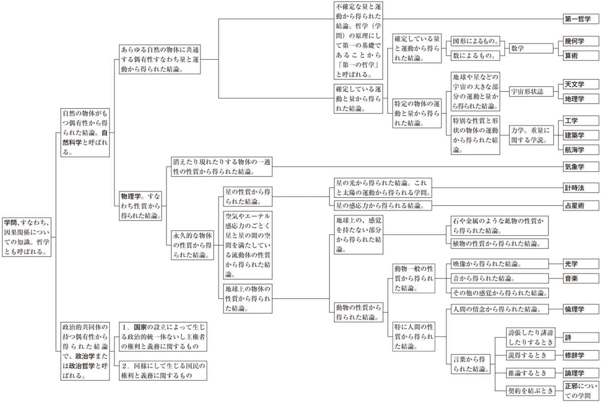

| リヴァイアサン１ (光文社古典新訳文庫) | |
| ホッブズ | |
| (2014) | |
リヴァイアサン１
ホッブズ
角田安正訳
Title: LEVIATHAN
1651
Author: Thomas Hobbes
凡例
（一）本書の底本は、Leviathan, edited by Richard Tuck (Revised Student Edition), Cambridge University Press, 2003 (1996)の第一部（Of Man）である。
（二）眉批について。本文の小見出し（のように見えるもの）は、実は眉批である。眉批は本文の欄外に示された頭注のようなものであって、必ずしも段落の冒頭に置かれているわけではない。しかし、眉批は原著どおりに再現するのが技術的に難しいこともあって、本書においては小見出しのように扱った。
（三）括弧の使い方
（ ）...（イ）原著の丸括弧はなるべく生かすようにしたが、訳者の判断で括弧を外した箇所もある。（ロ）原文において丸括弧が使われていないにもかかわらず訳出の都合上、便宜的に用いた丸括弧がある。たとえば、論旨の枝葉に相当する記述や挿入句的な表現について、そのような扱いをした箇所がある。（ハ）人物の生没年は訳者による補足であり、それも丸括弧でくくった。
［ ］...訳注は基本的にブラケットの中に収めた。
「 」...題名などを表わすために、また、特定の単語やフレーズを他の言葉から際立たせるために用いた。間接話法に類した表現を直接話法に置き換えた場合も括弧で括った。
『 』...（イ）書物の題名を示すのに用いた。（ロ）引用文の中の鉤括弧は二重鉤括弧にした。
（四）傍点は、連続するひらがなの切れ目を明らかにするなどの目的で用いた。すなわち、原文の、イタリック体によって示された強調を反映しているわけではない。しかしごく一部、強調を表わす傍点もある。
（五）原著において強調などの目的で用いられているイタリック体は、原則的に、訳文には反映させていない。
（六）改行は、訳者の判断により大幅にふやした。
（七）聖書の書名については『聖書 新共同訳』（日本聖書教会）の訳語を借りたが、体裁は少し変えた。たとえば、「サムエル記・上」のように。
（八）聖書からの引用文については、『聖書 新共同訳』のほかに『舊新約聖書』（日本聖書教会）を参照したが、必ずしもそれらの訳には従っていない。
リヴァイアサン１
教会国家と政治国家の素材、形態、権力
謹啓
御令弟シドニー・ゴドルフィン（２）氏は生前、小生の研究をひとかどのものと評価され、しかもご存じのとおり、その好意的な評価を実際に公表して下さいました。氏のご意見はそれ自体卓見でありますが、ご本人の人柄ゆえにひときわ優れたものとなっております。お人柄を特筆するのは、氏が人を神への奉仕に向けて、また、国家すなわち政治的共同体への奉仕に向けて、さらには個人的な友情に向けて導かずにはおかない美徳の持ち主であり、それが氏の生き方にまぎれもなく現れているからです。しかも氏の美徳は、必要に迫られて身に付けたものではありません。また、ときおりそれらしく見せかけているというのとも違います。氏の美徳は天性のものであり、寛大な人柄となって燦然と輝いているのです。このような次第で、氏に敬意と謝意を表し、また貴殿に対しては心服の念を込めて、この拙い国家論を謹んで貴殿に献げたいと思います。
世間が本書をどのように受け入れるか、また、本書を好意的に迎えてくれそうな人々をどのように取り沙汰するか、分かったものではありません。なにしろ、過度の自由を求める人々と、過度の権威を求める人々とがにらみ合っている中、その間の道を無傷ですり抜けるのは容易なことではないのですから。
しかし、それでも私の考えによれば、政治権力の増強に努めたからといって、当の政治権力からお咎めを受けるはずはありませんし、一般人の非難を招いて、「政治権力が強大になりすぎている」と烙印を押されることもありません。しかも、私が論じているのは個々の権力者のことではなく、（抽象的な）権力の座のことなのです（私はこの点で、古代ローマのカピトール神殿の鵞鳥（３）と同じです。あの単純で公平な鵞鳥たちは警告の声を上げ、神殿の内部にいたローマ兵を守りましたが、ローマ兵と知ってそうしたというわけではなく、偶然そこに居合わせた人々を守ったに過ぎません）。ですから、私の主張に対して目くじらを立てる者はありますまい。もっとも、例外はあるでしょう。外国人と、同胞でありながら外国人に好意を寄せる連中がそれです（後者については、そのような手合いがいるとしての話になりますが）。恐らく癪の種となるのは、せいぜいのところ、私の引用する聖書の章句でしょう。これまで引用されてきたのとは異なる趣旨で引用しているからです。しかし聖書からの引用は、最大限の慎みをもって、しかも（立論上の）必要に迫られたときにおこないました。そこまでしてなぜ聖書の章句を引用するのかと言いますと、論敵がそれを拠り所とし、そこから政治権力に対する攻撃を仕掛けてくるからであります。
以上のとおり、非難を浴びるいわれはありませんが、にもかかわらず本書があちこちで酷評されるようでしたら、釈明して、「ホッブズは自己の意見を大事にする男だ」と代弁していただけないでしょうか。そして、御令弟と貴殿は私にとって仰ぎ見る存在であり、それゆえに私は（ご了解を得ないまま）烏滸がましくも以下のとおり自称しているのでありますが、このように申し上げる私の言葉を、すべて額面どおりに受けとめていただければ、まことにありがたく存じます。
だれよりも謙虚で従順な、貴殿の僕
トマス・ホッブズ
パリにて
一六五一年四月十五日（新暦四月二十五日）
自然とは、天地を創造し支配するために、神が用いる技のことである。人間の技術はさまざまな事柄において自然を真似る。そうした模倣によって人工的な動物を作ることもできる。「人工的な動物」という言い方は奇異に聞こえるかもしれない。だが、生命とは四肢の運動のことであり、その運動は内部の中心的な部分から起こる。それを踏まえるなら、「すべての自動機械（たとえば、腕時計のように発条と歯車によって自動的に動く機械）は、人工的な生命を持っている」と説明したからといって、何の差し障りがあろうか。なにしろ、心臓、神経、関節に代わるものとしてそれぞれ発条、線条、歯車があり、それらのおかげで全体が制作者の意図したとおりに動くのだから。
人間の技術はそれにとどまらない。模倣の対象は、理性をそなえた被造物、すなわち自然の最高傑作とも言うべき人間にも及ぶのである。実例を挙げよう。まさに人間の技術によって創造されたものに、彼の偉大なるリヴァイアサンがある。リヴァイアサンは国家と呼ばれている（英語ではコモンウェルスまたはステイト、ラテン語でキウィタス）が、実は一種の人造人間にほかならない。自然の人間よりも巨大かつ強力であり、自然の人間を守ることを任務としているところに特徴がある。
この人造人間は主権を人工の生命としている。それは全身の活力と運動の源泉である。為政者や司法・行政を担当する官吏は、人工の関節である。賞罰は、関節や器官を一つひとつ主権という中枢部に結びつけ、それぞれの義務を遂行させるので、神経に相当する。その働きは人体における神経と同じである。個々の構成員が蓄える富や財宝は、生身の人間であれば体力に相当し、人民の安全を図ることは、人間で言うなら職務に相当する。国家にとって知る必要のある事柄を漏れなく教えてくれる顧問団は、［脳内の］記憶装置の役割を果たしている。公平と法律は、いわば人工的な理性と意志である。国内の調和は人体の健康、騒乱は病気、そして内戦は死に相当する。対比の例を最後にもう一つ取り上げよう。国家の各構成部分をまず形成し、次に統合、統一することについて協約や契約を取り結ぶのは、神が天地を創造する際に、「人をこしらえよう」と決断した［「創世記」一・二六］のと似ている。
この人造人間の性質を説明するにあたって、次の各項を検討したい。
一．人造人間の素材と制作者。ちなみに、どちらも人間である。
二．人造人間はどのようにして、また、いかなる契約によって作られるのか。主権者の権利、また、その正当な権力ないし権限はどのようなものか。この人造人間を維持し、解体するのは何か。
三．キリスト教的国家とは何か。
四．暗黒の王国とは何か。
第一の点に関して、「叡智は、書物ではなく人間を読むことによって獲得される」などという言いぐさが、近ごろはなはだよく聞かれる。図に乗って人々は、自分が人間について読み取ったと考えるものを誇示しようと、えらく積極的になる。ところがその方法というのは、陰で他人を酷評することなのである。なぜそうなるのかと言えば、大半の人々はそうする以外に、自分が賢明であることを立証する術を持たないからである。
その一方で、別の格言もある。ノスケ・テ・イプスム（汝自身を読め（１））というものである。この格言は近ごろあまり理解を得られていないが、その教えに従って努力するなら、相手のことを正しく読み取る能力を身につけることも可能となろう。この格言は近ごろ誤用されているが、その趣旨は、権力者が下々の者に向かって無慈悲な態度で臨むことを黙認するとか、目下の者が目上の者に向かって横柄な態度をとるとかいったことを助長することにあるのではない。そうではなくて、以下のことを私たちに教えてくれているのである。「人間の思考や感情は相互に似かよっている。それを手がかりにすればよい。すなわち、まず自分自身の内面を見つめることである。そして、自分自身の思考・推論・期待・恐怖が究極的に何を意味しているのか、また、何に根ざしているのか、それを考察するがよい。そうすれば、自分と同じ状況にある人間の胸中を読み取り、知ることができよう」。
念のために言っておくが、私が述べているのは、欲求・恐怖・希望など万人に共通する感情の仕組みが似かよっているということであって、感情の対象──平たく言えば、何に欲求・恐怖・希望を感じるのか──が似かよっているということではない。わざわざこのように断るのは、次のような次第だからである。好悪の念は、個人の気質や個々の学歴によって大きく左右されるばかりか、人に知られないように隠し通すことも容易である。それゆえ個々の人間の心根は、心情一般を追究しない限り読み解けない。今般、個人の心根が虚飾と欺瞞と美辞に満ちた妄説によって汚され、惑わされているだけに、なおさらである。
確かに、相手の言動を観察することによってその意図を見出すことができる場合もある。しかし、見出すにあたって、自分の言動との比較をしないとしよう。また、全体の事情を変えるかもしれぬ事柄を逐一識別することもないとしよう。そうだとすると暗号文を解読しようと企てながら、解読のための鍵を持っていないに等しい。そして、解読者自身が善人であるか、それとも悪人であるかに従って、相手の言うことを馬鹿正直に信用するか、あるいはあまりにも懐疑的に受けとめるかして、大抵の場合は陥穽に落ちるのである。
さらに付け加えておこう。相手の胸中を、その言動からどれほど完璧に読み取ったとしても、それだけでは自分の、一握りの知己を相手にしたときしか役に立たない。一国を治めようかという人物は、自分自身に照らして、個々の人物ではなく人類全体［の行動原理］を読み取らなければならない。それは難しいことかもしれない。いかなる外国語を学ぶよりも、また、いかなる学問を修めるよりも難しいかもしれない。しかし、ここに、私自身が編み出した読み取りの手法をすっきりと、分かりやすく書き記しておけば、他の人に残される苦労は、同じことを自分の中に発見できないかと考察するだけで済む。というのもこの種の学説は、それ以外の論証を受け入れないのだから。
人間のさまざまな思考について、まずそれを個別に検討し、次いで連続性の点から検討しよう。連続性とは、さまざまな思考が相互に依存しているという意味である。私たちの外部にある物体は通常、「対象」と呼ばれる。個別的に見た場合、思考というものはいずれも、対象の何らかの本質やそれ以外の付随的な性質を心に描き出し、思い浮かべることにほかならない。対象は、目や耳など人体の器官に働きかける。働きかけにもさまざまなものがあり、それに応じて感じ方も異なったものとなる。
思考はいずれも、私たちが感覚と呼ぶものを本源とする（さもあろう。人間の心に浮かぶ概念で、その全体なり一部なりが最初、感覚器官に生じなかったものはないのだから）。思考の残りの部分は、そうした本源から派生的に出てくるのである。
感覚が発生する自然の仕組みを知ることは、今検討している件にとってさほど必要なことではない。また、そのことについては他のところで詳細に論じた。にもかかわらず、今展開している立論に遺漏があってはいけないので、ここで同じことを手短に説明しておく。
感覚を引き起こすのは、外部の物体すなわち対象である。対象は、それぞれの感覚に対応する受容器官に働きかける。そのような働きかけは、味覚や触覚においては直接的であり、視覚・聴覚・嗅覚においては間接的である。与えられた刺激は、神経を始めとする体内の線状の器官や粘膜を通じて、脳や心臓に伝えられる。脳や心臓の内部では、刺激に対する抵抗や反作用が生じたり、刺激を除去しようとして生理作用が働いたりする。こうした作用は外に向かっているため、人はそれを、外界に存在する何らかの物質と感じる。こうした「らしさ」あるいは心象を、人々は感覚と呼んでいるのである。それは、目には光として──あるいは形ある色彩として──とらえられる。また、耳には音として、鼻孔には匂いとして、舌と口蓋には味としてとらえられる。そして、身体の他の部分には、熱さ、冷たさ、固さ、柔らかさなど、触ることによって識別される属性としてとらえられる。「五感によって捕捉できる」とされるこれらの属性［すなわち、色・音・味など］はいずれも、それを発する対象の中にあるけれども、同時に物質のさまざまな運動でもあり、それを通じて対象は、私たちの器官をさまざまに刺激する。そして、色や音といった属性は、刺激を受ける私たちの身においても、やはり［物質の］多様な運動に他ならないのである（これは、運動が呼び起こすのは［別の］運動にすぎないということを踏まえて言っているのである）。
しかし、それらの属性が私たちに対して示されるということは、心象なのである。それは、私たちが目覚めた状態で見る白昼夢と同じである。
また、目を押さえつけたり、こすったり、たたいたりすると、光の映像が生じる。耳を圧迫すれば、音が生ずる。それらの刺激と同様に、私たちが見たり聞いたりする物体も、強力な、しかし私たちの気づいていない作用を通じて、同じ効果をもたらすのである。これは、強弁しているわけではない。仮に色や音が、それを発する物体すなわち対象の内部にとどまっているとすれば、両者を切り離すことはできないということになる。ところが、たとえば鏡や谺であれば、色や音は、それを発する対象から切り離されている。鏡の場合、私たちの知っているとおり、見えている物体が実在する場所と、それが発現する場所［すなわち鏡の置かれている場所］は別々である。ある一定の距離を置いて見ると、実体としての対象はその内部に、私たちの側に生じる心象をそなえているように見えるが、対象と心象は別物である。したがって、感覚というものはあくまでも、その場で新たに形成される心象だということが分かる。上述したとおり心象を呼び起こすのは、目や耳など感覚をつかさどる器官に対する刺激、すなわち外部の事物の運動なのである。
しかしスコラ学者たちは、これとは別の学説を、アリストテレス（１）の一部著作に依拠しつつキリスト教圏のあらゆる大学を通じて唱えている。彼らは「見える」ということの仕組みについて、見られている物体が、目に見える像つまり（別の言葉で言えば）姿、形、相などを四方に送り出しているからだと説明している。そして、そうした映像を目の中に受け入れることこそが、「見える」ということだという。また、「聞こえる」ということの仕組みについては次のように説明している。物体が音を立てるとき、その物体は、聞き取ることのできる形象ないし「現れ」、換言するなら耳でとらえることのできる無形物を送り出しているのであり、それが人間の耳に入ることが、「聞こえる」ということなのだ──。そればかりではない。「理解する」ということの仕組みについても、彼らは同様の説明をする。それによれば、私たちが理解しようとする事物は、知力によってとらえられる形象、すなわち知力によってとらえられる無形物を送り出していて、それが知力の中に取り込まれたとき、理解が成立するのだという。
私がこのようなことに言及するのはなぜか。大学の有用性を否定するためではない。あとで一国の大学の任務について述べるのに先だって、大学において改善すべき点を、あらゆる機会をとらえてお伝えしておく必要があるからだ。頻繁に無意味な言辞が繰り返されているということも、改善すべき事柄の一つである。
静止している物体は、何かほかの物体によって突き動かされない限り、永久に静止している。それは、疑う余地のない真実である。ところが、「運動している物体は何かほかの物体によって遮られない限り永久に運動を続ける」という命題になると、なかなか人々の同意を得られない。論拠が同じ（「物体は、それ自体の運動を変化させられない」）であっても、説得はむずかしい。というのも人間は、他の人間のみならず他の物体についても、おのれを基準にして推測するからである。つまり人間は、自分自身が運動すると苦痛や疲労に襲われることから、他の物体も運動に飽いて自発的に休息を求めるのだと考えるわけである。その際、次のような問題はあまり検討しようとしない。「そのようなことは、実は他の何らかの運動の現れではないのか。また、まさにそこに、自分自身に見出される休息の欲求が潜んでいるのではないか」。このような、事物を人間になぞらえる考え方にもとづいて、スコラ学者たちは、「重い物体が落下するのは、それが休息を求め、最適の場所でその性質を維持しようとするからだ」と説く。そうだとすると無生物も、（人間以上に）自己保存の欲求をそなえており、自己保存に適した条件を知っているということになる。馬鹿げたことだ。
物体はひとたび運動を始めると、（別の物体によって妨げられない限り）永久に運動する。しかも、運動を阻害するものが何であるにせよ、物体は一瞬にして止まるということはない。時間をかけて徐々に、完全な停止に至るのである。水を観察すると分かることだが、風がやんでも波はしばらくの間収まらない。それと同じように、目で何かを見たときや睡眠中に夢を見たときに体内でおこなわれる運動も、同様の現象をともなう。具体的に言うと、対象が持ち去られるか、当人が目を閉じるかした後でも、見ていた物体の像は保たれる。もっとも、見ていたときにくらべると不鮮明になるけれども。古代ローマ人はこれをイマジネーションと呼んでいる。目で見ているときに生じる像にちなんだ言い方である。ローマ人はこの言葉を、他のすべての感覚に適用している（ただし、それは妥当なことではないが）。ちなみに、ギリシア人は同じものをファンシーと呼んでいる。それは「現れ」を意味しており、あらゆる感覚に対して適用できる言葉である。以上のことから分かるようにイマジネーションとは、薄れゆく感覚にほかならない。人間とその他の少なからぬ動物は、目覚めているときはもちろん、眠っているときでもそのような感覚を覚える。
目覚めているとき人間が感覚の薄れを覚えるのは、感覚の中で生じた運動が衰えるからではなく、運動がいわば霞むからである。それは、太陽に対する星の関係と似ている。昼間の星は、夜と同じように輝きを発しているにもかかわらず、太陽の光を浴びて霞む。それと同様に、目や耳などの器官が外部の物体からさまざまな刺激を受けるとき、そのうち最も支配的な刺激だけが知覚される。だからこそ、太陽の光が他を圧倒し、私たちは星の作用に影響されないのである。また、ある何らかの対象が私たちの眼前から持ち去られると、それが私たちに対して残した印象は残るけれども、他の新たな対象がそれまでの対象に取って代わり、私たちに働きかける。その結果、過去のイマジネーションは影が薄くなり、弱まる。それは、昼間の喧噪に埋没する人声と同じことである。
以上のことから、次のように結論づけられる。すなわち、何らかの対象を見たり感じたりした後、時間が経過するにしたがって、イマジネーションは弱まるということである。もう少し詳しく述べよう。人間の肉体は絶えず変化しており、感覚を刺激された器官は時の経過とともに元の状態に戻る。したがって、時間的な隔たりと空間的な隔たりは、私たちに対して同一の作用を及ぼすということが言える。私たちが視線を向けている物体が遠くにあると、その姿はぼやけ、細かい部分が判然としなくなる。声もまた弱まり、不明瞭になる。それと同じように、時間的な距離が遠く隔たると、過去の心象も弱くなる。たとえば、かつて見たことのある都市については、個々の街路のうち多くのものが、また、行為については個々の顚末のうち多くのものが、消失する。私たちはこの「薄れゆく感覚」を、感覚そのもの（つまり、現れそのもの）に着目して表現したいと思うとき、心象と呼ぶ。そのことについては前述した。
〈記憶〉しかし、感覚の希薄化を強調したいとき、つまり感覚が消えかかり、すでに過去のものになったということを表現したいとき、それを記憶と称する。したがって、イマジネーションと記憶は同一物である。着眼点が異なるために、名称が異なっているにすぎない。
大量の記憶は、数々の事柄の記憶にほかならない。それは経験と呼ばれる。念のために言っておくと、イマジネーションは、前もって知覚された事柄だけを素材とする。イマジネーションは単発的かもしれないし、あるいは幾つかのものの連なりかもしれない。前者（すなわち、感覚に訴えてきたとおりに対象全体を思い浮かべる場合）は、「単純なイマジネーション」である。たとえば、以前に見かけた人間なり馬なりの姿を個々に思い浮かべるようなケースがそれである。それに対して後者は、「複合的なイマジネーション」である。これはたとえば、かつて見かけた人間の姿に、別の機会に見た馬の姿を結び合わせ、それをもとにして心の中でケンタウロスのような半人半馬を思い描く場合である。さてそうすると、他の人間の行動のイメージを借りて自分自身の人格のイメージを思い描く場合はどうか。たとえば、伝奇小説の熱心な愛読者にありがちなことであるが、自分自身をギリシア神話のヘラクレスや古代マケドニアのアレクサンドロス大王（１）になぞらえたらどうなるのか。その場合は、複合的なイマジネーションであって、厳密に言えば心の虚像にすぎない。
その他に、（目覚めているにもかかわらず）感覚の中に刻み込まれた強烈な印象から生ずるイマジネーションもある。たとえば、太陽を見つめると、その後もずっと太陽の像が目に残る。また、長い時間、熱心に幾何学模様を注視すると、暗闇の中では（目覚めていても）さまざまな線や角の残像が目に浮かぶ。この種の像には特定の名称はない。通常、話題になることがないからである。
〈夢〉睡眠中のイマジネーションは、夢と呼ばれている。その他のイマジネーションと同じように、前もって──全体的に、あるいは少しずつ──感覚の中に入ったものが夢となるのである。脳と耳は、感覚にとって欠かすことのできない器官であるが、睡眠中は無感覚になる。そのため、外部の物体の働きかけがあっても、容易には反応しない。したがって、睡眠中はいかなるイマジネーションも起こらない。ということは、人体の内部器官の発する刺激に起因するものを別とすれば、いかなる夢も発生しないということである。それらの内部器官は、脳やその他の器官との間につながりがあるので、前者すなわち内部器官に変調をきたすと後者（脳やその他の器官）を刺激する。その結果として、脳やその他の器官の中に形成されていたイマジネーションが、あたかも当人が目覚めているときのように、立ち現れるのである。ただしその際、感覚器官の働きが止まっているので、立ち現れたイマジネーションは何か新たな物体の鮮烈な印象によって、圧倒されるとか、かき消されるとかいったことはない。したがって、感覚が停止しているとき見る夢は、目覚めているときの想念とくらべて鮮明なものとならざるを得ない。だから、感覚と夢を正確に区別することは難しい。そのような区別は不可能だ、と考える人も少なくない。
私自身についてはどうか。目覚めているときに何らかの人物、場所、物体について思いをめぐらすからといって、夢の中でそれと同じものについて頻繁に、あるいは絶え間なく、思いをめぐらすということはない。また、夢を見ているとき、首尾一貫した想念が、他の場合と同じように長い連鎖の形をとって記憶に留まるということもない。まず、この点を踏まえておこう。さらに、次のような個人的経験も判断材料になる。すなわち、目覚めているときに夢の荒唐無稽ぶりに気づくことは多いが、夢の中で、目覚めているときの考えが馬鹿げていると気づくことは決してない。というわけで、私は次のように深く確信している。目覚めているときは、夢を見ているのではないということが分かっている。もっとも、夢を見ているときは、自分が目覚めていると考えるけれども。
夢は、肉体の内部器官のどこかに変調が生ずることによって呼び起こされる。それを踏まえるなら、内部器官のどこがどのように不調であるかによって、異なる夢が呼び起こされるはずである。だからこそ、冷えた状態で横たわっていれば、恐ろしい夢に襲われたり、何か恐ろしいものが思い浮かんだりするのである（脳から内部器官への運動と、内部器官から脳への運動は相互的である）。また、目覚めているときに怒りを覚えると身体のいずれかの器官に熱が生ずるのと同じように、睡眠中にその器官が熱を持つと怒りが生じたり、敵の姿が脳裏に浮かんだりする。同様の例はほかにもある。目覚めているとき、本能に促されて性的欲望がつのると、そのせいで身体の特定の部分が火照る。それと同じように、睡眠中にその器官が火照ると、かつて覚えたことのある情念が頭の中でよみがえるのである。要するに夢というものは、目覚めているときのイマジネーションの裏返しなのである。そうした運動は、私たちが目覚めているときには末梢の側から始まり、夢を見ているときには、それと反対の側［すなわち脳］から始まるのである。
〈幻影〉眠っているときに見る夢を、目覚めているときの想念から区別することが特に難しくなるのは、何らかの偶然が働いて、当人が眠っていたということに気づかない場合である。とかくそのようなことが起こるのは、心配事で頭がいっぱいになったり、良心がひどく疼いていたりする場合である。あるいは、ゆっくりとベッドにもぐり込んだり衣服を脱いだりする余裕がないために、椅子に座ったままうたた寝をするような調子で睡眠をとる場合である。逆に、眠りに就くためにわざわざ身を横たえたような場合は、奇怪で異様なものを見たら、当人はおのずとそれを夢だと信じたくなる。
私たちは書物を通じて、彼のブルートゥス（２）（自分の命の恩人であり後ろ盾にもなってくれたユリウス・カエサル（３）を、恩を忘れて殺害した人物）の身に何が起こったか知っている。ブルートゥスはアウグストゥスとの決戦を翌日に控えた夜、戦場となるフィリッピで恐ろしい人影を見た。歴史家たちは通常それを幻だと説明している。しかしブルートゥスの状況を考えると、それが幻ではなくつかの間の夢だったにすぎないことは、容易に判断がつく。考えてみるがよい。ブルートゥスは、天幕の中で物思いに沈み、おのれの軽率な行為の恐ろしさにひどく苛まれていたのである。寒さの中でまどろむならば、自分の恐怖の最大の原因となっているものを夢に見ることは、あり得ないことではなかった。ブルートゥスはそうした恐怖感のせいで徐に目を覚まし、それにつれて人影も、次第に消えていくことは避けられなかったのである。そして、眠っていたという確信が持てなかったのでブルートゥスは、それを夢と見なすわけにはいかず、幻と考えるほかなかったのである。
このような例は、非常に稀なのだろうか。決してそうではない。たとえば、完全に目覚めていても、臆病で迷信深い性格の持ち主が、恐ろしい話に気を取られて、しかも暗闇の中にひとりでいると、得てしてその種の幻に襲われがちである。そして当人は、精霊や亡霊が墓地を徘徊するのを目にしたと信じるのである。ところが、その正体は幻であるか、そうでなければ悪戯者どもの仕業である。こうした連中は、人様の、迷信ゆえの恐怖感につけこみ、夜陰に姿をまぎらせ、まさか人が出没するはずがないと思われている場所にやって来るのである。
夢やその他の鮮烈な心象の現れと、実際に見たり感じたりすることは別物である。その区別を知らずにいると、それが原因となって異教や迷信が発生する。ギリシア神話やローマ神話に登場する牧神や仙女などを崇拝する古代の異教は大部分、こうした無知がもとになっている。現在でも未開の人々は、妖精・幽霊・悪鬼の存在や、魔女の力を信じているが、そのような迷信もやはりこうした無知から生じたのである。ついでに魔女について一言述べておこう。私は、魔女の力に実体があるとは思わない。しかし魔女を自称する者が、人に危害を及ぼしても許されるなどと誤った信念をいだき、しかも状況が許せばそれを実行に移す覚悟でいるのであれば、これを懲らすのは正当だと思う。魔女の営みは技能とか技術というよりも、むしろ新興宗教に近い。また、妖精とか徘徊する幽霊に関して言えば、それらのものが存在するという迷信は私の見るところ、意図的に教え込まれたか、あるいは、あえて論破されないままにしてあるのだ。その目的は、悪魔払いの儀式や十字架、聖水など、聖職者が工夫した仕掛けに威信を持たせることにある。
確かに、神は超自然的な現象を発生させる。それは疑う余地のないことである。しかし神は、それらのものに対する人間の恐怖心をさらに煽ろうとして頻繁にそのようなことをするものなのか。それでなくても人間は、神が止めたり変えたりする自然界の成り行きを畏怖しているというのに。キリスト教では、そのようなことは説いていない。しかし、悪辣な連中は、神が万能であるということを口実として、自分にとって都合の良いことでありさえすれば、臆面もなく何でも言ってのける。真実と思っていないことであっても、そうするのである。思慮分別のある者には、果たすべき役割がある。それは、こうした連中の言い分を健全な理性に照らして判定し、信憑性があると判断されないところには信を置かないということである。ここで述べたような、霊魂に対する迷信的な恐怖から解放されるとしよう。また、その結果として、狡猾な野心家が純朴な人々を欺くのに用いるさまざまな手段、すなわち夢占いや似非予言、さらには、それにもとづくもろもろの御託から解放されるとしよう。人々はその場合、今よりもはるかに前向きに政治的服従を受け入れるであろう。
そして、これこそ本来はスコラ学者の仕事なのである。ところが、彼らはむしろ、右に述べた迷信を助長していると言えよう。なぜそう言えるのか。彼らは（イマジネーションや感覚の本質を知らないまま）、自分が鵜吞みにしたことを語り伝えるからである。スコラ学者の中には、「イマジネーションは自然に発生するのであり、発生の原因はない」と唱える者もあれば、「イマジネーションは通常、意志から生ずる」と唱える者もある。また、「まっとうな考えを人間に吹き込むのは神であり、邪な考えを吹き込むのは悪魔である」と説く者もあれば、「（考えは吹き込まれるのではなく）注ぎ込まれるのだ」と説く者もある。さらには、次のように説明する者もある。「事物の像は、感覚によって受けとめられ、次いで意識一般に伝えられる。それは意識から想念へ、想念から記憶へと伝えられる。そして、記憶からさらに判断へと伝えられる。それはちょうど品物がリレーで順送りされるのと同じである」。多言を弄する割には、理解の助けにならない説明である。
〈理解〉人間（あるいは想像する能力をそなえた動物）において、言葉やその他の任意の記号によって喚起されるイマジネーションは、私たちが通常「理解」と呼んでいるものにほかならない。それは、人間と動物との間で共通している。たとえば、犬は習慣によって、主人の呼び声や叱り声を理解する。同じようなことをする動物は、他にも少なくない。人間に特有の「理解」は、他の人間の意志を理解するのみならず、概念や思考をも理解するという点にある。どのようにして理解を図るのかと言うと、事物の名辞を並べ替えたり組み替えたりすることによって、肯定、否定、その他の叙法を作るのである。この種の「理解」については、後述する。
思考の波及ないし連鎖とは、ひとつの思考が他の思考へとつながってゆくことを意味する。それは、（言葉による談話と区別するために）心中の談話と呼ばれている。
人が何かを考えるとしよう。それに引き続いて起こる思考は、一見偶然のように見えるが、必ずしもそうではない。すなわち、思考が連続して起こるとき、両者は必ずしも無関係ではないということである。もっと言うならイマジネーションは、それに先だって全体的に（あるいは部分的に）感じたことのないものについては、湧き起こらない。それと同様に、イマジネーションを連鎖的に働かせるためには、感覚の中で同じことを事前に経験している必要がある。その理由はこうである。私たちが何かを思い浮かべるとすると、それはいずれも私たちの内部の運動であり、感覚の中でおこなわれる運動の名残である。そして、感覚の中で連続して起こる運動は、感覚が収まった後でも互いに連続している。先行する側の運動がよみがえり、しかも優勢であるなら、もう一方の運動も、動かされた物質の結合力によって後に続く。それは、平らなテーブルの上にこぼれた水と同じである。水の一部を指先でどこかへ導くと、それにつられて全体もその方向に引っ張られる。
もっとも感覚の場合、知覚されるものが同一であっても、それに続いて何が起こるかは、その都度まちまちである。したがって結局のところ、何かが思い浮かんだとき、その後に何が思い浮かぶかは不確実である。確実なことは、先行するものが同じなら、今回も、かつてそれに続いて起こったことが起こるだろう、ということだけである。
〈気の向くままの思考の連鎖〉こうした思考の連鎖すなわち心中の談話には、二種類のものがある。第一は、気の向くまま思いつくままの、あてどない思考の連鎖である。ここには、何らかの願望や熱意の指針となる力強い思考がない。そこから派生するもろもろの考えを制御し方向づけすることなど、望むべくもない。こうした場合、思考はいわば迷走し、外見上、夢の中と同じように脈絡のないものとなる。聞き手がいない場合のみならず、注意が散漫になっている場合も、人間の思考は通常このようになる。念のために言うと、思考はそのような場合でも他の場合と同じようにせわしなく働いているのだが、そこには調和がない。それは、調子のはずれた楽器を演奏するのと同じである。あるいは、楽器の調律がしてあっても、それを弾きこなせない者が演奏するのと同じである。
しかし、このように心が落ち着きなくさまよっているときでも、そこに道筋があり、思考が相互に依存していることが見て取れることも稀ではない。たとえば、わが国の現在の内戦［ピューリタン革命］を話題にしているときに、「ローマ時代の一ペニーにはどの程度の価値があったのか」などと尋ねる向きがある（これは実際にあった話である）。これほど頓珍漢な質問はないと思われるだろうが、関連性があることは私には明らかである。それはこういうことである。内戦のことを考えているうちに、国王を敵に引き渡すという場面が思い浮かぶ。次にそれは、金に目がくらんでキリストを引き渡すという場面につながる。そこからさらに三十ペンスのことが連想される（三十ペンスとは、ユダがキリストを裏切ったときの代価である）。これが右の不自然な質問につながるのは造作のないことである。思考の働きは迅速だから、こうした連想は全体として瞬時におこなわれる。
〈制御された思考の連鎖〉第二の思考は、何らかの願望や心算によって制御されているので、もっと腰のすわったものとなる。それは次のような次第だからである。私たちの欲望や恐怖感をかき立てる事物の作用は強烈で、しかも途切れることがない。あるいは、一時的に途切れるとしても、すぐさま元に戻る。あまりにも強い作用を被るために、私たちは眠りに入るのを妨げられたり、せっかく眠りについても途中で目覚めてしまったりするほどである。欲望に駆られると、目指すものを達成するのに役立った（ことが分かっている）類似の手段のことが、頭に思い浮かぶ。それがきっかけになって今度は、そうした手段を確保するのに必要な、別の手段のことが思い浮かぶ。このような連鎖がずっと続き、ついには、おのれの力の及ぶ範囲を限界として、何らかの「最初の一手」に行き着く。そうした作用が強く働くせいで、目指す目的が頻繁に頭に思い浮かぶ。そのために私たちの思考は、さまよい始めてもただちに元の道筋に引き戻されるのである。
ギリシア七賢人の一人キロンがこのことに気づいて考え出したのが、レスピケ・フィネムという格言である。この格言は人口に膾炙し、今では慣用句となっている。その意味はこうである。「何をするにせよ、自分の掲げる目標に、事あるごとに目を向けよ。それは目標を達成するまでの途次、自分のすべての考えを導く道標となろう」。
制御された思考の連鎖には、二種類のものがある。第一のパターンはこうである。まず、期待される結果が先にある。そして私たちは、それを達成するにはいかなる条件が必要か、また、いかなる手段を用いればよいかを探し求める。これは、動物にも共通している。一方、もう一つのパターンの場合は、私たちはまず先に何かを思い浮かべる。次に、そこからもたらされる（かもしれない）あらゆる結果を探る。すなわち、何かが手に入ったときに、それをもとにして何ができるかを想像する。人間以外の動物もこうしたパターンで思考するのだろうか。そのような様子は窺えない。それもそのはず、これは一種の探求心であって、肉体的な情動しかそなえていない動物の本性に発することは稀なのだから。動物がそなえているのは、飢えや渇きなどの生理的欲求や交尾の衝動、怒りなどの情動に限られる。
以上を要するに、何らかの企図によって制御された状況で心中の談話がおこなわれているなら、それは、探し求めるという行動にほかならない。すなわち、探すという機能が働いているということである。古代ローマ人はこれをサガキタスまたはソレルティアと呼んでいる。前者は、現在または過去の結果につき、その原因を探ること。後者は、現在または過去の原因につき、その結果を探ることである。人間は捜し物をすることがある。何かをなくしたことに気づくと、人間の心は、その時その場所から順次時と場所をさかのぼり、紛失物を［最後に］持っていたのがいつ、どこだったのか特定しようとする。すなわち、捜し出す手順をどの時点、どの地点から始めればよいのか見当をつけようとする。そして、思考はそこを起点として、今さかのぼったばかりの時と場所を、くまなく探し回る。人はこうした手順を踏むことによって、紛失がいかなる行動や経緯によるのかを調べる。
〈回想〉私たちはこれを回想（心に呼び起こすこと）と呼び、古代ローマ人はレミニスケンティアと呼ぶ。レミニスケンティアという言葉は、それまでの行動を「改めて確かめる」とでも訳せよう。
探そうとする範囲において、ある場所が決定的だと分かっているケースもある。その場合、思考はその場所をくまなく探る。それは、なくした宝石を見つけようとして室内を総浚いするのと似ている。あるいは、猟犬が獲物のにおいを嗅ぎつけようとして野原を歩き回るのと似ている。あるいは、人が韻を整えようとしてアルファベットを矯めつ眇めつするのと似ている。
〈先読み〉人は、ある行動がどのような結果を招くか、知りたくなることがある。そして、「似たような行動は似たような結果を招くはずだ」という考えにもとづき、過去の似たような行動とその結果を逐一思い出す。たとえば、犯罪者がどのような刑罰に処せられるかを予想するケースがそれだ。この場合、過去に同様の犯罪に続いて何が見られたか、改めて確かめ、次のような順で思考を展開することになる。犯罪→警察官→拘置所→裁判官→絞首台。このように思考をめぐらせることを、「先見の明を発揮する」とか「先を見越す」などと称している。ときには「知恵が回る」と称することもある。もっとも、こうした推論は、事の次第を遺漏なく観察するのが難しいことから、非常に誤りの多いものになる。
しかし、次のことは確かである。すなわち、過去の事柄について他の人々よりも経験が多いと、それに支えられて人並み以上に先を見通せるようになる。そしてその分、予想をはずすことが少なくなる。自然界に存在するのは、「現在」だけである。「過去」の事柄は記憶の中にしかない。「未来」の事柄はまったく存在していない。「未来」というものは心の虚構であって、過去の行為の帰結を、現在の行為に当てはめているに過ぎない。その確実性は、経験が多いほど向上する。
しかし、どれほど経験を積んでいても、確実性が十分になることはない。事の成り行きが予想どおりになると、先見の明があると評される。しかしそれは、本質的には単なる予測にすぎない。というのも、来るべき事柄を見通すことができるのは、それを到来させる意志を持つ者、すなわち神だけだからである。そして、もっぱら神から超自然的に発せられるのが預言である。人よりも優れた預言者は当然のことながら、人よりも優れた予測をする。そのような予測ができるのは、自分の予測する事柄に人よりも熟知、精通しているからである。それは、予測の材料となる手がかりを人よりもふんだんに持っていることによる。
〈手がかり〉手がかりとは、［ＰならばＱという因果関係における］後件Ｑにとっての前提Ｐとなっている事象のことである。逆に、前提Ｐの後件Ｑを指すこともある。ただし、その場合は、以前に同様の因果関係が観察されている必要がある。そして、前例の頻度が高ければ高いほど、手がかりの不確実性は少なくなる。したがっていかなる仕事においても、経験豊かな者は、未来を予測するための手がかりを人よりもふんだんに持っており、その分先を見越すことができる。同種の仕事を始めたばかりの新人にとって、その差は大きい。いくら生まれつき頭の回転が速くても、経験の豊かな者には敵わない。これが実態である。それとは逆に考えている若者が多いけれども。
念のために言っておくと、人間と動物を分かつのは先見の明の有無ではない。生後一年の動物が観察力に関して、また、おのれにとって有用なものを追い求める際の先読みの能力に関して、十歳の児童を上回るということもあろう。
〈過去を推測すること〉先見の明とは、過去の経験をもとに未来を予測することである。それと同じように、過去の事柄を対象として、（未来ではなく）過去の他の事柄にもとづいて推測がおこなわれることもある。たとえば、繁栄しているどこかの国が内戦に陥り、次いで破滅に至ったとしよう。いかなる経緯からそうなったのかを知っている者は、どこか他の国の廃墟を見れば、「似たような内戦があったのだろう、似たような経過をたどったのだろう」と推測するであろう。しかしこうした推測も、未来予測とほぼ同じ不確実性をまぬかれない。どちらも、根拠になっているのは経験だけだからである。
人間の生得の知力には、さまざまな働きがある。しかし、その中で特段の努力を必要とせず、人間として生まれ五感を働かせて生きているだけで発揮されるものは、私の知る限り、右に述べたイマジネーションの働きだけである。その他の、人間に固有のものと思われる能力は、努力と勉励によって培われる。大抵の人間の場合、それは教育と訓練によって身につく。そして、あらゆる能力は、言葉の発明に端を発する。そう言っても過言ではない。なぜか。確かに人間の知力には、感覚、思考、そして思考の連鎖を別とすれば他には何の働きもないが、言語を操る能力や考えを秩序立てる能力のおかげで人間固有の能力は高められ、人間を他の動物から区別する水準に達するからである。こうした能力について、以下おいおい説明することにしよう。
私たちの想像するものは、いかなるものであれ、限界をまぬかれない。したがって、無限と称することのできる観念や概念は存在しない。無限大というイメージを思い描くことのできる者はいない。無限のスピード、無限の時間、無限の強さ、無限の力──これらについても同じことである。私たちが何かを指して無限だと言うとき、それは、その事象の限界や限度が想像できないということを意味しているにすぎない。すなわち、自分自身が力不足だということ以外には、何も分かっていないと白状しているのに等しいのである。
したがって、神という名称を使うのは、神という概念を理解させるためではなく、むしろ、神を崇めさせるためなのである（それはそうだろう、神は計り知れぬ存在であり、神がどれほど偉大で、どれほどの力をそなえているのかは、想像を超えているのだから）。
しかも前述したとおり、何かを概念化するには、まず先に、感覚によって全体的または部分的にその何かをとらえる必要がある。そうである以上、感覚に働きかけてこないものについては、それを表そうとしても何の考えも思い浮かばない。したがって、思い描くことのできるものは必ず、どこかの場所を占め、何らかの大きさを備え、いくつかの部分に分割できるものとして描かれるはずである。一個の事物を、同時に別々の場所に現れるものとして思い描くことは不可能である。また、複数の事物を、同時に同一の場所を占めるものとして思い描くことも不可能である。というのは、そのような事物はいずれも感覚によって把握されるものではないからである。それはむしろ虚妄の説である。こうした説が出てくるのはなぜか。迷妄の哲学者とも言うべきスコラ学者の主張を、むやみに信じて引用するからである。スコラ学者は、人に欺かれているか、そうでなければ人を欺いているかのいずれかである。
〈言語の起源〉印刷術の発明は独創的であるが、文字の発明には比べるべくもない。しかし、文字の使い方を最初に見出したのがだれだったのかは、分かっていない。［ギリシア神話によって］言い伝えられるところによると、文字を最初にギリシアに持ち込んだのは、フェニキア王アゲノルの息子カドモスだったという。文字は有益な発明である。文字があれば、過去の記憶を保つことができる。また、地球上の、遠く隔たった無数の地域に散らばっている人類を、相互に結びつけることもできる。文字は、苦心惨憺の末に発明された。それは、舌・口蓋・唇など発声器官の多様な動きを、注意深く観察することから始まった。そうした観察がおこなわれたからこそ、発声器官の動きに見合った数の文字が作られ、それによって発声器官の動きを覚えておけるようになったのである。
しかし、文字の発明を別にすれば、話すということほど高尚で有益な発明はない。話すという行為は、名前（名称）を用い、それを組み合わせることによって成り立っている。人間はそれを利用して思考を記憶にとどめ、過去の思考を思い起こす。また、自分の思考を伝え合うことによって、互いに便をはかり、結びつきを深める。話す能力がなかったら、人間相互間に国家・社会・契約・平和が成立することはなかったであろう。そしてライオンやクマ、オオカミの群と同じようになっていたであろう。
話す能力を作り出したのは、ほかならぬ神である。なぜなら、神はアダムの目の前に生き物を見せてやり、それらのものを何と呼んだらよいのか指図したのだから。これはこじつけではない。確かに、聖書にはそれ以上のことは書いていないが、神からそのような指図があっただけでも、生き物を知り役畜とするなどの機会を通じて、生き物の名称をさらに増やすようアダムを導くのに十分だったのだ。アダムはまた、それらの言葉を徐々に組み合わせ、他の人々から理解してもらえるようになった。その結果、時が経つにつれて、アダムが使う必要を感じていた語彙がふんだんに得られた。もっともそれは、演説家や哲学者が必要とするほど豊富なものではなかった。考えてみるがよい。アダムが形や数、尺度、色、音、そして［色や音から連想される］イメージ、さらには［高低・深浅・剛柔などの］性質について網羅的にその名称を教わったなどということがあろうか。聖書のどこを読んでも、直接的な証拠はもちろん、間接的な証拠すら見当たらない。そうである以上、右の問に対して「しかり」と推断することはできない。まして言語に関する名称──一般語、専門語、肯定文、否定文、疑問文、祈願法、不定法など──となると、なおさらである。もっとも、これらの名称は総じてまだしも有用である。「実体」「志向性」「本質」などの哲学用語や、スコラ学者の使うその他の些末な専門用語となると、これはもう、アダムが教わったなどと考える余地は寸分もない。
いずれにせよ、アダムとその子孫が獲得、追加した言葉は、バベルの塔においてふたたび一つ残らず失われた。神に背いたかどで全員が、それまで使っていた共通語の記憶を奪われたからである。人々はこうして世界各地に四散することを余儀なくされた。必然的ななりゆきとして、必要（すなわち発明の母）に迫られて次第にさまざまな言語が生み出され、それは現在のように多様なものとなった。どこの土地でもそれぞれの言語は、歳月とともに内容豊かなものになっていった。
〈言語の効用〉話すという行為の一般的な効用は、それによって心中の独白が口頭での発話に変わり、思考の連なりが言葉の連なりに変わるというところにある。その結果として便利なことが二つ生じる。
一つは、思考の結果を記憶にとどめることが可能になるということだ。思考はとかく記憶からこぼれ落ち、思い出すのに一苦労する。だが、思考に貼り付けられた標識としての言葉を手がかりにすれば、思考を再現することは容易になる。したがって、名称の第一の効用は、思い起こすための標識ないし記号として役立つというところにある。
名称のもう一つの効用は伝達である。すなわち、個々の事柄についてどのようなことを思ったり考えたりしているのか、また何を欲し、何を恐れ、どのように感じているのかを、言葉の配列によって伝え合うことができるということだ（ただし、大勢の人が共通の言葉を用いているということが前提となるが）。このような効用があるからこそ、言葉は合図とも呼ばれるのである。
言語能力には特殊な効用もある。第一に、それによって因果関係を記憶にとどめることができる。私たちは現在または過去の何らかの事柄について熟考し、その発生原因はかくかくしかじかだと判断する。私たちはまた、現在または過去の事柄に起因して今後どのようなことが生起し得るかを予測する。こうして究明した因果関係は、言語能力によって記憶にとどめることができる。これはすなわち、学問を身につけるということにほかならない。第二に、自分の獲得した知識をほかの人々に伝える（つまり、互いに勧めたり教えたりする）ことができる。第三に、相互の協力を目的として自分の意思や意図を知ってもらうことができる。第四に、本人自身を含め、人を楽しませたり面白がらせたりすることができる。それは、言葉を操ることによる。操るといっても、言葉遊びをするために、あるいは［韻を踏むなどして］彩りを添えるためにそうするのである。悪意があってするわけではない。
〈本来の目的に反する効用〉言葉には、本来の目的に反する効用もある。それは右に挙げた効用と対になっており、こちらも四種類ある。第一に、言葉の意味が一定しないために、自分の思考を表明する際に誤解を招くケース。その場合、考えてもいないことを自分の考えとして相手に伝えることになり、伝達の意図は裏切られる。第二に、言葉を比喩的に使う場合。これはすなわち、本来の意味とは異なる意味で単語を用いるということである。そうすることによって相手の意表を突くわけである。第三に、言葉を利用することにより、本心ではないことを本心だと断言する場合。第四に、相手に痛手を与えるために言葉を用いる場合。これも言葉の本来の目的から逸脱している。それは、次のことを考えてみれば分かる。生き物には、敵に痛手を与えるための器官がそなわっている（そうした器官は生き物ごとにまちまちで、歯だったり角だったり、あるいは手だったりする）。そのことから判断すると、口舌で敵に痛手を与えるということは、言葉を本来の目的に反して使っているということにほかならない。もっとも、相手を教導せねばならないのであれば話は別である。その場合は、相手を痛い目に遭わせるのではなく矯正することが目的となっているのである。
言語のおかげで、因果関係を記憶しておくことが容易になる。原因と結果に名称をつけ、両者を関係づけることができるからである。
〈固有の名称と一般的な名称〉名称には、固有のものと一般的なものがある。前者は一つしかないもの（ピーター、ジョン、「この男」、「この樹木」など）に対して個別的に使われる。人・馬・木のような一般的な名称は、無数のものに対して共通に使われる。人・馬・木はそれぞれ一個の名称にすぎないが、にもかかわらず、さまざまな個々の事物を［ひっくるめて］表す名称である。
〈総称〉同類のものすべてを網羅しているという点で、それは総称と呼ばれる。世の中には、名称以外に普遍的なものはない。名称を付けられる事物の方は、それぞれ独立した個体であり、一個限りのものだからだ。
無数のものが一つの総称を帯びるのは、何らかの本質的な性質または付随的な性質に類似性があるからだ。したがって、固有の名称を聞くと一つのものだけが思い浮かぶのに対し、総称を聞けば、無数に存在する同類のうちいずれもが想起される。
一口に総称と言ってもいろいろである。広いものもあれば、狭いものもある。範囲の広い総称は、狭い総称を包摂する。また、範囲が同じであれば、相互に相手を包摂する。たとえば体軀という名称は、人間という名称よりも指す範囲が広い。前者は後者を包摂しているのである。一方、人間という名称は、理性的という名称と範囲が重なる。両者は互いを包摂しているということになる。
しかし、この点に関して注意しなければならないことがある。名称といってもそれは、（文法書の説明とは異なり）必ずしも単一の単語だとは限らない、ということである。むしろ場合によっては、冗長に言葉を重ねることによって語群の形をとることもある。たとえば、「国の法を守って行動する者」という表現。ここに並べてある単語が全部合わさって、単一の名称を成していることが分かるだろう。ちなみにそれは、「正しい」という一個の単語に相当する。
このように名称を付けておくと、使う名称によって、示す範囲を広げることもできるし厳密にすることもできる。そればかりか、もっと便利なことが起こる。頭に思い浮かべた事物をもとにして［考察を経て］結論を導くという作業が要らなくなり、代わりに、ある名称をもとにして［即座に］結論を導くことができるようになるのである。
一例を挙げよう。言葉をまったく使うことのできない者（たとえば先天的な、文字どおりの聾啞者）がここにいるとしよう。そして、その目の前に三角形が二つの直角（たとえば正方形の角）と並べて置いてあるとしよう。その聾啞者は考えに考えた末、二つの図形を比較するかもしれない。そして、その三角形の内角の和がかたわらに置いてある二つの直角の和に等しいということを、発見するかもしれない。だが、それと形の異なる三角形を示されると、あらためて手間をかけない限り、新たな三角形の内角の和が最初の三角形と等しいか否か分からない。しかし、言葉を使える男が次のように見抜いたとしたらどうか。「両者の等しさは、三角形の辺の長さやその他の個々の事柄とは無関係であり、辺が直線で角が三つあるという一事ゆえだったのだ。またそれだけでも、その図形を三角形と呼ぶのに十分な根拠だったのだ」。男は自信をもって普遍的な結論を導き出すであろう。角の和がこのように等しいのは、これら二つの三角形に限ったことではない、すべての三角形に当てはまる、と。そしてこのことを、次のような一般性のある言葉で書き留めるであろう。「いずれの三角形も、その内角の和は二直角に相当する」。
こうして個別の発見は普遍的な法則として記録される。そして、忘れられることがなくなる。そのような法則のおかげで、考察に際して場所や時などの条件を考慮に入れる必要がなくなり、［余計な］頭脳労働を省くことができるようになる（ただし、最初だけは知恵を絞らなければならないが）。そして、今ここで真理であることが判明した事柄は、いつでもどこでも変わることなく真理であることが保証される。
このように言葉は、私たちの思考を記録するという点で有用である。しかし、そうした有用性がひときわ明らかになるのは、数を数えるときである。生まれつき愚鈍で、一、二、三のような数詞の並びを覚えられない者でも、時計がボーン、ボーン、ボーンと鳴れば、拍子を取るように頷いたり、あるいは「ひと～つ、ひと～つ、ひと～つ」とつぶやくことはあるかもしれない。しかしそのような者は、時計が何時を打ったのかを知ることはない。
ついでに昔のことを補足すると、かつて数詞が使われていなかった時代があったようだ。その時代の人々は、勘定したいものがあれば、片手か両手の指を利用するしかなかった。その名残は今でも残っている。現在、私たちの［基本的な］数詞はどこの国でも十までである。ただし、一部の国では五までである。そこまで行くと、［一の位は］振り出しに戻る。ところで、十まで言える者でも、順序正しく暗誦することができないと混乱をきたし、いつ数え終わったのかもおぼつかない。まして、足し算や引き算などの算術計算は何もできない。
以上のことから次のことが言える。言葉がないと数を数えることはできない。大きさ、速さ、強さなどの計測となると、なおさら不可能である。それらの計測は、人類の生存と福祉に必要不可欠であるのだが。
二つの名詞を組み合わせると、一個の命題ないし断定が得られる。たとえば、「人間は生き物である」。あるいは、「人間であるなら、生き物である」といった具合である。後の名詞「生き物」が前の名詞「人間」の意味を遺漏なく表している場合、この命題または断定は、真である。そうでない場合は、偽である。念のために言っておくと、真と偽は、言葉を発するという行為の属性である。事物の属性ではない。言葉が発せられない限り、真も偽も存在しない。思い違いはあるかもしれない。起こらないことを起こると予想したり、なかったことをあったのではないかと疑ったりする場合がそれである。しかしいずれの場合も、事実に反するからといって責められるいわれはない。
〈定義の必要〉さて、次に踏まえておくべきことがある。それは、「真理とは、何事かを断定する際に名称を正しく並べることにある」ということである。そこから以下のことが言える。正確な真理を追究しようとするなら、自分の使うそれぞれの名称が何を表しているのか、記憶しておく必要がある。そして、それに応じて名称を配列する必要がある。さもないといつの間にか、鳥モチに引っかかった小鳥のごとく言葉に搦めとられてしまう。そして、もがけばもがくほど、動きがとれなくなる。したがって幾何学では、学徒は自分たちの専門用語の意味を定めるところから始める（ちなみに幾何学は、神の御心にかなって人類に与えられたという点で類例のない学問である）。幾何学の学徒は意味を定めるという行為を、定義と称している。そしてそれを、考察の冒頭に据えている。
よって、次のことは明らかである。すなわち、真の知識を得ようとするなら、必ず過去の著作家が下した定義を調べる必要がある。そして、その定義に手抜かりがあれば修正するか、あるいは、あらたに自前の定義を下す必要がある。なぜなら定義の誤りは、考察を進めるにつれて自己増殖し、辻褄の合わない結果を招くからである。最後になってようやくそれに気づいても、考察を一からやり直さない限り、誤りを排除することはできない。誤りの根源は出だしにあるからだ。
したがって、書物を盲信する者はいわば、いくつもの小計を合算して総計をはじき出す際に、それぞれの小計が正しく算出されているか否かを検算しないのと同じことをしている仕儀になる。そして、最後の段になって誤りに気づいても最初の前提を疑うことをしないので、誤りを取り除く方法が分からず、そうした書物に翻弄され、無駄な時間を過ごすことになる。まるで煙突の中に紛れ込み、部屋の中に閉じ込められた小鳥さながらである。小鳥は、自分がどこから入ってきたのかを考えるだけの知能を欠いており、窓の、ガラス越しの陽光に向かってばたばたと突進する。
このことから、言葉の第一の効用は名称を正しく定義することにあると言える。名称を正しく定義するということは、学問を身につけるということにほかならない。言葉の第一の副作用は、名称を誤って定義したり、あるいはそもそも定義をしなかったりすることにある。誤った教義や無意味な教義は、ことごとくそこを発生源とする。自分の頭で考え抜くことなく書物の権威に教えを仰ぐ人々は、そうした教義を鵜吞みにするので無知な人間にもひけをとることになる。両者の優劣の差は、真の学問を授けられた人々と無知な人々との優劣の差に匹敵する。端的に言おう。真の学問と誤った教義との中間に位置しているのが無知だ、ということである。ありのままの感覚や想像力が支離滅裂なものになるとは言えない。ありのままのものに誤りが生ずることはない。一方、人間は言語に恵まれているので、常人以上に理知を働かせることもあれば、その逆に理知を失うこともある。文字がなければ、いかなる人間も人並み外れて賢くなったり愚かになったりすることはあり得ない（ただし、病気や器官の故障のために記憶力がそこなわれた場合は例外である）。言葉は、賢者にとって計数機である。賢者は言葉を用いて計算しているにすぎない。ところが愚者は、言葉をむやみにありがたがる。彼らは、アリストテレスやキケロ（１）、トマス・アクィナス（２）の権威があれば──いや、一介の物書きであっても博士と名がつく者の権威があれば、その言葉を重んじる。
〈名を与えられるもの〉勘定に入れることができるか、あるいは勘定に入っていると考えられるもの。つまり、足せば和が得られ、差し引けば差が残るもの。これらのものに対しては名が与えられる。古代ローマ人は金銭の勘定書をラティオネスと呼び、勘定することをラティオキナティオと呼んだ。そして、伝票や帳簿の、私たちが費目と呼ぶものを名と呼んだ。彼らは後にラティオという単語を拡大解釈し、他のあらゆる事柄を計算する能力にまで適用するに至るのだが、その端緒はどうやらここにあるらしい。
古代ギリシア人は、言語能力と論理的思考の両方に対応する単語として、ロゴスという一つの単語しか使わなかった。それは、「論理的な思考を抜きにして言語は操れない」と考えたからではなく、「言語能力がないと論理的思考は不可能だ」と考えたからである。そして、論理的に思考することを彼らは三段論法と呼んだ。これは、命題を束ねて推断することを意味する。
それはさておき、同じ物であっても、偶有性（付随的性質）が違えば別々に勘定されることがある。したがって、それらの物に付けられる名は（そうした多様性を示すために）さまざまにひねりを加えられ、形を変える。このように多様な名は、四つの大ざっぱな項目にまとめられる。
第一に、物質ないし物体を表すために勘定に繰り入れられるもの。たとえば、「生きている」「分別がある」「道理を弁えている」「熱い」「冷たい」「動かされた」「静かな」。物質とか物体とかいった言葉は、このような形容語を足されることによって初めて理解が可能になる。それはいずれも物質を名指ししているのである。
第二に、そなわっていると考えられる何らかの偶有性または本質的な属性（たとえば、「動かされること」「非常に長いこと」「熱いこと」）を表すために勘定に入れられ、斟酌されるもの。私たちは、それを表す言葉そのものを基にして、語形に若干の変化や操作を加えることにより、考察対象となっている偶有性に見合った名称を作る。つまり、「生きていること」に対しては生命という言葉を、「動かされた」に対しては運動という言葉を、「熱い」に対しては熱という言葉を、「長い」に対しては長さという言葉をそれぞれ作るのである。それらの名称はいずれも、ある物質や物体を同類のものから際立たせる偶有性や固有性を表す。これらのものは抽象名と呼ばれている。なぜならそれは、（物質から切り離されているからというよりも）物質を勘定に入れることから切り離されているからである。
第三に、私たちは自分たち自身の身体特性を勘定に入れ、そうすることにより次のような区別をおこなう。何かが見えるとき、私たちが頭の中に繰り入れるのはそれそのものではなく、私たちが思い描くその事物の姿・色・概念である。また、何かが聞こえるとき私たちが頭の中に繰り入れるのは、それそのものではなく、聞こえ（すなわち音）だけである。聞こえとは、耳がつくり出すイメージまたは概念である。今ここに挙げたのは、イメージに対して付けられた名称である。
第四に、私たちは名辞そのものと叙述方法を取り上げ、考察し、命名する。たとえば、一般的・普遍的・特殊的・両義的などの言葉は、名辞を特徴づける名辞である。一方、断定・疑問・命令・話法・三段論法・説教・演説などの一連の言葉は、叙述方法を特徴づける名称である。
〈肯定的な名辞の効用〉これはいずれも肯定的な名辞として類別される。肯定的な名辞を用いる目的は何か。実在の事物や人間の想像の産物を、かくあるもの（あるいは、かくあると考えられるもの）として表現するためである。また物体については、そなわっている（と考えられる）特性を示すためである。さらには、言葉を際立たせることも、肯定的な名辞を用いる目的の一つである。
〈否定辞とその効用〉それとは反対に否定辞と呼ばれるものもある。否定辞は、ある言葉が、問題となっている事がらに当てはまらないということを示すための記号である。否定辞には、nothing（何も～ない）やno man（誰も～ない）に含まれるno であるとか、接頭辞のin などがある。infinite（定まっていない）やindocible（教え難い）は後者の例である。算術で３マイナス４というときのマイナスも否定辞である。否定辞はしかし、計算する際に、あるいは計算を訂正する際に有用である。否定辞のおかげで、私たちは過去の思考を改めることができる。もっとも否定辞は、いかなる事がらについても名指しすることはない。否定辞の働きは、不適切な名指しの受け入れを拒むよう仕向けることにあるからだ。
〈無意味な言葉〉その他の名称はいずれも、無意味な音の連なりにすぎない。それは二つに分類される。第一に、名称が新しすぎて、その意味がまだ定義によって明らかにされていないもの。その中には、スコラ学者や錯乱した哲学者が作り出したものが少なくない。
第二のタイプ。意味が矛盾、撞着している二つの言葉を組み合わせると、無意味な句が出来上がる。たとえば、「形態のない物体」や（同じことだが）「実体のない物質」など。これは類例が多い。第二のタイプをもっと厳密に規定すると、こうなる。ある命題が偽である場合、その構成要素である二つの言葉を組み合わせた句は、何の意味も持たない──。たとえば、「四角は丸い」という断定が偽である場合、「丸い四角」は何の意味もない。それは単なる音の連なりである。同様に、「徳行を注ぎ入れる」「徳行を吹き動かす」「徳行を吹き倒す」という言い方が誤りだとすれば、「注ぎ入れられた徳行」「吹き動かされた徳行」「吹き倒された徳行」という名詞句も、「丸い四角」と同じように無意味である。
このような次第で、個々の単語については、ラテン語かギリシア語に由来するものを別とすれば無意味な言葉に出くわすことは稀である。フランス人は、われらの救世主が言葉という名で呼ばれる（３）のを耳にする機会は少ない。しかし、救世主がヴェルブという名で呼ばれるのを耳にすることは多い。ところが、パロールとヴェルブはともに言葉を意味しており、一方がラテン語で他方がフランス語だということを除けば、何の違いもないのである。
〈理解すること〉何らかの話を聞いて、使われている語句の配置や構成によって表される思考が把握できたら、その話を理解したと言える。理解とは、言語がもたらす概念にほかならない。したがって、（私の知っている限りの現実に即して）言語が人間に特有のものだと仮定すると、理解という行為も人間に特有のものである。したがって、筋道が立っていなかったり、誤りがあったりする命題は、よしんば人口に膾炙していたとしても、人の理解するところとはならない。理解していると考える者が多数いたとしても、それは、言葉をオウム返しにつぶやくか、あるいは心の中で呪文のように唱えているにすぎない。
人間の心の欲求・嫌悪・情念を表すために、いかなる話法が用いられるだろうか。また、そうした話法はどのように用いられるのだろうか。それについては、［第六章で］情念について語った後で説明することとしよう。
〈意味が一定しない名称〉私たちの感情を刺激するもの、すなわち私たちの気持ちを愉快にしたり不快にしたりする事がらには、さまざまなものがある。そうした事がらを表す名称は、人間相互の通常のやり取りに際して、意味が一定しない。なぜなら、刺激が同じであっても人によって受ける作用がまちまちであるし、刺激を受けるのが同一人物であっても、毎回同じ作用を被るとは限らないからである。このことは次の事実に照らせば明らかだろう。あらゆる名称は、私たちの抱く概念を表すために付けられる。しかも、私たちの感情は一から十まですべて概念にほかならない。そうである以上、同一物に対して異なる概念を抱く場合、名称も別のものにならざるを得ない。このことは次のように言い換えることができる。私たちが理解するものの本質が同じであっても、私たちの気質や主義の違いのために理解の仕方はおのずと違ってくる。その結果、それぞれのものに、私たちの個々別々のこだわりが反映する。
したがって推論する際は、言葉に注意を払わなければならない。言葉には、私たちがその言葉の本質として想定するもののほかに、話し手の性質・性向・関心も表明されているからである。長所と短所（ないしは善と悪）に関する名称などはその実例である。たとえば、ある人が知恵と称するものを、他の人は恐怖心と称する。同様に、人によっては、「残忍な仕打ち」を「正義のおこない」と称したり、「金遣いが荒い」を「気前が良い」と称したりする。「沈着な」が「鈍重な」になることもある。したがってこうした名称は、論理的な推論の、真の前提にはなり得ない。隠喩などの比喩的表現についても同じことが言える。ただし、比喩の場合は危険が少ない。なぜなら論理的推論の場合と異なり、意味が固定されていないということが、だれの目にも明らかだからだ。
〈推論とは何か〉推論とは、ある額にある額を加えると合計いくらになるか、また、ある額から他の額を差し引いたとき残額がいくらになるかを考えることである。それは、（言葉によってそうした計算をおこなうのであれば）各部分の名称を総合して全体の名称を導くことにほかならない。あるいは、全体の名称および一部分の名称から残りの部分の名称を導くことにほかならない。ある事がらにおいて（たとえば数の場合がそうなのだが）、「足す」「引く」以外の操作は、「かける」「割る」と呼ばれている。しかし、「足す」と「かける」、「引く」と「割る」は、それぞれ同じことである。なぜなら、「かける」は同じものを何回か加えることであり、「割る」は同じものを何回も差し引くことだからだ。
演算は、数だけを対象としておこなわれているわけではない。いかなる分野であろうと、合計することができるもの、一方から他方を差し引きすることができるものは、こうした操作の対象となる。たとえば、算術家が数を足したり引いたりしてみせるのと同様に、幾何学者は、線・図形（立体および平面）・角・面積・倍率・速さや力の度合い・仕事率［たとえば馬力など］等々において、同じことをしてみせる。論理学者は言葉の配列を対象として同様のことをしてみせる。すなわち、二つの名称を組み合わせて断定をおこなう。次に、二つの断定を組み合わせて三段論法を組み立てる。そして、いくつもの三段論法を重ね合わせて一つの論証をおこなう。三段論法を合計したもの（すなわち結論）から一つの命題を差し引くと、残るもう一つの命題が得られる。政治を論じる者は、契約を一括りに束ね合わせることによって人間の義務を見出す。法律家は法律と事実を組み合わせて、私人の行動の何が正しくて何が間違っているのかを知る。
以上を要約するなら、足したり引いたりする余地のあるところには推論の余地があり、その余地のないところには推論の余地もまったくない、ということになる。
〈推論の定義〉私たちが推論を人間の知力の一つと見なすとき、推論という言葉はいかなる意味を持つのか。それを定義する（決定する）ことは、右に述べたことを総合すれば可能である。すなわち、その意味での推論は、一般的な名称をどのように配列するかを計算する（すなわち、足したり引いたりする）ことにほかならない。名称の配列には暗黙のルールがあり、配列を計算することによって私たちは思考を明確化したり表明したりすることができる。思考の明確化とは、自分の頭の中で思考を計算することである。思考の表明とは、他の人々に対して計算結果を開示したり証明したりすることである。
〈正しい推論はどこに〉算術の場合、不慣れな人々は計算間違いをまぬかれない。大学教授ですら、間違いを犯すことが少なくない。それと同じように、他のいかなる推論の問題においても、比類のない才知・注意力・経験の持ち主ですら、錯誤に陥って誤った結論を導くことがある。もっともこれは、次のような意味ではない。「算術が確かな、無謬の術であるとは限らないのと同じように、推論はそれ自体、必ず正しい推論になるとは限らない」。そうではなくて、個人にせよ集団にせよ、およそ人の下す推論は正しいとは限らない、ということなのである。それはちょうど、非常に大勢の人が一致して賛成したからといって、算術の計算が正しくできているとは限らないのと同じことである。
したがって、論理の展開をめぐって論争がある場合、双方の当事者は自発的に何らかの裁定者または審判者の推論を正しい推論として仰ぎ、その判断に服さなければならない。さもなければその論争は、喧嘩沙汰になるか、あるいは未解決のまま宙に浮くかのいずれかである。なぜなら、自然界の生み出す正しい推論などというものは、そもそも存在しないからである。
このような事情は、分野を問わず、あらゆる論争に当てはまる。その際、自分ほど賢い者はいないと自負する者は、審判者に対し正しい推論をやかましく要求するが、実のところ物事を裁定してもらうにあたって、他の人々の推論ではなく自分たちの推論に立脚してくれと求めているにすぎない。カードの勝負と同じように、人間相互の交わりにおいてもこのようなことは大目に見てもらえない。カードでは、札めくりによって［たとえばスペードを］切り札に決めておきながら、自分の番が回って来るたびに、持ち札の中で［ハートなりクラブなりの］枚数が多いからといって勝手にそれを切り札として使うなどということは許されない。賢人を自称する者がしていることは、ある情念に支配されるたびに、それを正しい推論として公認してもらおうと働きかけることにほかならない。しかも、それは論争の過程でのことなのだ。このように正しい推論をしているのだと強弁すれば、逆に、そうではないということをみずから露呈することになる。
〈推論の効用〉推論の効用と目的はいかなる点にあるのだろうか。最初に名称を定義してその意味を確定した後、一足飛びに一個ないし数個の結論の総和をつかみ、その正しさを見出すことにあるのだろうか。いや、そうではない。推論の効用と目的はむしろ、最初に名称を定義してその意味を確定することを出発点とし、ある結論から他の結論へと歩を進めるところにあるのだ。というのも、最終的な結論が確かであるか否かは、その前提となるさまざまな断定や否定がすべて確かであることにかかっているからである。一家の主人が家計の決算にあたり、家族が持ち寄ったすべての請求書の額を単純に総計するにとどまり、その際、家族がそれぞれの請求書の小計をどのようにはじき出したのか、また何の代価としてその支払いをしなければいけないのかを考えないとしよう。それはちょうど、決算全体を他人任せにしておきながら、出納を代行する者を、「勘定に長け、しかも正直だ」と全面的に信じるのと同じことである。いずれの場合も、家長の利益にはならない。
他のあらゆる事がらの推論についても同じことが言える。書物の著者を盲信して結論を選ぶ者、また、結論を引き出す際にそれぞれの計算の初項（定義によって定められた名称の語義）を出発点としない者は、無駄骨を折ることになる。そのようなやり方では、いかなることも理解したことにはならない。ただ盲信しているだけである。
〈「見当を外す」と「条理が立っていない」〉人は言葉を使わずに計算することがある。それは特定の事がらについてはあり得ることだ。たとえば何かを見て、それに先だって何があったか、また、それに引き続いて何が起こるかを推測する場合がある。その際、後に続いて起こるだろうと予想した事象が実際には起こらず、また、先行して起こったはずだと推測した事象が実際には起こっていなかったとすれば、「見当を外した」という言い方が当てはまる。どれほど慎重な人でも、見当を外すことはある。
しかし、一般的な意味を持った言葉を用いて推論し、偽の一般的結論に至ったとしよう。それは通常、見当外れと呼ばれているが、実のところは条理が立っていない（すなわち、意味を成さない話をしている）のである。なぜそのように言えるのか説明しよう。「見当を外す」とは、何かが過ぎ去ったとか、あるいは何かがまさに来たらんとしているとかいった推定をして、それが単に外れたことを指しているにすぎない。事実とは一致しなかったかもしれないが、しかしだからといって、そのような推定の余地が皆無で、しかもそれは分かりきったことだったのかというと、決してそうではない。
ところが、一般的な断定となると話は別である。真でない限り、一般的な断定は成り立たない。そして、［どのように解釈しようとも］音声を別として何の概念も汲み取れない言葉を、私たちは「条理が立っていない」「意味を成さない」「訳が分からない」などと称する。したがって、こう言える。仮にだれかが次のような言い回しを使ったとしよう。丸い四角。チーズにおけるパンの偶有性（偶々の状態）。実質のない実体。自由な臣民。［外的な力の］制約をまぬかれている意志。反対者によって邪魔立てされないという意味での自由を除いた自由──。これらの言い回しを見当外れと評するのは妥当ではない。正しくは、言葉に意味がない、あるいは意味不明である、と評するべきである。
すでに本書第二章［正しくは第三章］で述べたように、何かを思い浮かべたとき人間は、それがいかなる結果につながるか、また、それを利用した場合いかなる影響を及ぼすことができるか、調べようとする習性がある。こうした能力をそなえているからこそ人間は、他のあらゆる動物を凌駕したのである。ここではさらに、別次元の優位性を付け加えておきたい。すなわち、人間は言葉を用いることによって、自分の見出した因果関係を定理とか金言とか呼ばれる一般的な法則に還元することができるということだ。要するに人間は、数のみならず他のあらゆる事がらについても──それが足したり差し引いたりの対象となるものであれば──推論すなわち計算を働かすことができるのである。
しかし、人間のこうした優位性は、別の優位性によって相殺される。別の優位性とは、条理の立っていないことを述べるという傾向である。人間以外のいかなる動物も、そのようなことはしない。そして、人間の中で特にそのようなことをする傾向にあるのは、哲学を生業とする者である。キケロはどこかでそれら哲学者について、哲学者の書に書かれていることほど意味不明のものはないと喝破しているが、それはおおかた真実である。そして、その原因は明らかである。なにしろ、自分の論理的推論を開始するにあたって、最初に使用予定の名称を定義したり説明したりする哲学者は皆無なのだから。名称を定義、説明するのはもっぱら幾何学で用いられてきた手法である。幾何学における結論はそのおかげで、議論の余地のないものとなる。
〈条理が立たない原因──その一〉条理の立たない結論は第一に、しかるべき手順を省くことから生じる。「しかるべき手順を省く」とは、論理的推論を始める際に、定義（すなわち自分の使う言葉の定まった意味）を出発点にすることを怠り、一、二、三のごとき数詞の値など知らなくても計算できると言わんばかりの態度をとることをいう。
前の章で述べたとおり、さまざまな考察に際してあらゆる物体が計算に組み入れられるだけに、それぞれの考察対象に別々の名称を与えると、混乱が生じ、ちぐはぐな名称の組み合わせによって断定がおこなわれるようになる。そして、そうしたことが原因となって、条理の立たない言い回しが次々に出現する。
〈その二〉かくなる次第で、条理の立たない断定が生ずる第二の原因は、物体を表すのにふさわしい名称を、偶有性にあてがう（あるいは逆に、偶有性を表すのにふさわしい名称を、物体にあてがう）ことにあると考えられる。たとえば、「信仰心を植え付ける」あるいは「信仰心を吹き込む」といった表現がそれである。ところが、植え付けるとか吹き込むといった動作の対象となるのは、物体だけである。似たような例として、「広がりはすなわち物体である」とか、「［実在物の］心象はすなわち霊気である」といった表現がある。
〈その三〉第三の原因は、人間以外の物体の偶有性を表す名称を、人間の身体の偶有性を表すのに使うというところにある。一例として、色は物体に現れている［肌の色は身に現れている］、音が空中に広がっている［評判である］等々の表現が挙げられる。
〈その四〉第四の原因は、名称や陳述を物体として名指しするところにある。たとえば、「普遍的な事物が存在する」とか、「一個の生き物は類であり、ある一般的なものである」などのように言うのがそれである。
〈その五〉第五の原因は、名称および陳述を偶有的なものとして名指しするところにある。たとえば、「物事の本質は定義次第である」とか、「支配力は本人の意志によって決まる」などと言うのがそれである。
〈その六〉第六の原因は、言葉を本義どおりに使わず、隠喩などの比喩をまじえた修辞法を使うことにある。具体的に説明しよう。たとえば普通の会話では、「その道はどこそこに行く」とか、「諺はかくかくしかじかと言っている」という言い方をする。それは別段おかしくない（厳密に言えば、道そのものが行くとか、諺が喋るとかいうことはあり得ないけれども）。しかし推論をおこない、真実を追究するときには、このような表現は許されない。
〈その七〉第七の原因は、スコラ学者からの借用語である。これらの言葉はいずれも、［意味の分からないまま］機械的に英語に採り入れられたものである。たとえば、ハイポスタティカル（hypostatical）。これは、キリスト教の三位一体論におけるペルソナ（位格）を意味する。トランサブスタンシエイト（transubstantiate）は、聖餐のぶどう酒とパンがキリストの血と肉になること。コンサブスタンシエイト（consubstantiate）は、（三位一体の）父なる神と子なるキリストが同質であること。イターナル・ナウ（eternal-now）は永遠の現在を意味する。スコラ学者の専門語に由来する言葉は、これにとどまらない。
以上七項目にわたって列挙したことが避けられれば、条理の立たないことを述べるような失態は、たやすく食い止められよう（ただし、計算が長くなった場合はそうとも言えない。それは恐らく、先行する事がらを忘れてしまうからである）。それというのも正しい公理さえ分かっていれば、人間はみな本来同じように、しかも正しく推論するからである。考えてもみよ。幾何学において間違いを犯し、しかも人からその間違いを指摘されてもまだそれに固執するほど愚かな者がいるだろうか。
〈学問〉以上のことから明らかであるが、推論は感覚や記憶と異なり、生まれつき私たちに備わっているわけではない。また、世知と異なり、もっぱら経験によって獲得されるというわけでもない。推論はむしろ、努力することによって得られるのである。それは最初、適切な名称をつけることから始まる。次いで、正しい、乱れのない筋道を見出し、その筋道に沿って進む。起点となるのは、推論の構成要素すなわち名称である。それら名称を組み合わせることによって断定を下し、さらに、いくつかの断定を組み合わせて三段論法に至る。こうして遂には、当面の問題に関連する名称の配列を万般知ることができるのである。これこそ、人が学問と呼ぶものにほかならない。
そして、感覚と記憶があるということが過去の、拭いがたい事実を知っているということでしかないのに対し、学問があるということは、一つの事実が他の事実にどのように連鎖し依存しているのかを認識しているということなのである。学問のおかげで私たちは、現在成し遂げることのできるものを目安にして、将来なにかほかのことをするとき、どうすればよいのかが分かる。また、それとは別の機会に同様のことをするとき、どうすればよいのかが分かる。なぜなら、あることがいかなる条件のもとで、またどのような経緯で起こるのか分かっていれば、同様の条件が手の内に揃ったとき、それをどう操れば同じ結果を引き出すことができるか分かるからである。
したがって子どもは、言語を使えるようになるまで推論の能力をいささかも与えられていないにもかかわらず、いつの日にか推論を用いることができるようになることが明白だから、理性的な被造物と呼ばれるのである。ただ大半の大人は、わずかな数を指折り数えるのと同じ程度に多少推論の利用を身につけているだけで、日常の生活においてそれを役立てることはあまりない。日常生活における彼らの身の処し方は、経験の違いや物覚えの早さ、さらにはさまざまな目標への熱の入れ方に応じて──特に、運の良し悪しと相手に対する思い込みに応じて──巧みだったり拙劣だったりする。
要するに人々は、学問（あるいは人間行動のある種の法則）とはあまりにも疎遠であり、それが何であるか知らない。幾何学は手品扱いされている。しかしその他の学問についても、その成り立ちやそれ以後の何らかの進歩について教わったことがない以上、人々は先人が当該の学問を身につけるにあたってどのような産みの苦しみを経験したか、知る由もない。彼らはその点において子ども並みである。子どもは産みの苦しみなど考えたこともないので、母親や祖母から「あなたの弟や妹は生まれたのではなくて、庭で見つかったのですよ」と信じ込まされてしまうほどである。
しかし、学問がなくとも生まれつき世知を備えている者を、一見正しいように見えて実は辻褄の合わない一般法則を受け入れる者と比較してみよう。後者は、みずから誤った推論をするか、あるいは誤った推論をする者を信じることにより、そうした一般法則にたどり着く。優位に立っているのは前者（すなわち、学問こそないが世知を備えている者）である。なぜそう言えるのか、次のことを考えてみれば分かる。確かに、原因や法則について無知であると、人は道筋から逸脱する。しかし、そうした逸脱がさらに甚だしいものになることがある。それは、間違った法則を頼ることにより、自分の切望する事がらの前提条件になっていないもの、むしろ逆効果をもたらすものを、必要な前提条件と錯覚する場合である。
結論を述べよう。人間の思考力を照らす光明は、明瞭な言葉に見出される。ただしそれは、正確な定義によって最初に曖昧さを取り除かれていなければならない。推論するということは歩を進めることである。学問が豊かになるということは、筋道ができるということである。そして、人類の福祉こそが究極の目的である。それとは逆に、隠喩や、無意味で曖昧な言葉は鬼火のようなものである。それにもとづいて推論をおこなえば、無数の、条理の立たない言葉の間をふらふらとさまようことになる。その結末は、論争・騒擾・叛逆である。
〈世知と学識、両者の違い〉世知が経験豊かであることをいうのと同様に、学識とは学問があることをいう。私たちは通常、両者を知恵という名称で一括りにしている。しかし、古代ローマ人は常に世知と学識を区別し、前者を経験によるものとし、後者を学問によるものと考えた。それはさておき、両者の違いをもっと鮮明にするために、次のようなふたりの男を想定してみよう。一人の男は、生まれつき武器を扱うための優れた腕力と運動神経に恵まれているとする。もう一人の男は、そうした運動神経のほかに、学んで身につけた知識を備えているとする。後者はそうした知識のおかげで、剣をどのように構えたら相手のどこを攻めることができるのか、また、相手からどこを攻められる可能性があるのかを逐一知っている。前者と後者の能力の関係は、世知と学識の関係に等しい。どちらも有用であるが、後者は誤ることがない。だが書物の権威だけを信じて盲従するなら、それは、剣術の師範の誤った教則を信じ、みずからの分際を弁えずに敵に果たし状を突きつけるに等しい。そのようなことをすれば、殺されるか面目丸つぶれになるかのいずれかである。
〈学問の有無を示す証拠〉学問があることを示す証拠の中には、確かで疑いようのないものもあれば、不確かなものもある。証拠が確かであると言えるのはどのような場合か。ある事がらについて学問があると称する者が、ほかならぬその事がらを教えることができる場合、すなわち、その真理を他人に対して分かりやすく証明することができる場合である。一方、不確かというのはどのような場合を指すのか。ある説に合致していて、しかも実際に繰り返し調べてみて十中八九説明のとおりであることが確認できる事例が、わずかしかない場合である。世知を示す証拠は例外なく不確かである。なぜなら、結果を変えかねない条件をすべて経験によって観察し記憶しておくことは不可能だからである。
いずれにせよ、いかなる事業においても、それに関して道標となる正しい学問を備えていない場合、自分自身の生まれつきの判断力を放棄するとか、書物に書かれている、例外だらけの一般論を導き手として仰ぐといったことは、自分の馬鹿さ加減をみずから露呈しているに等しい。そのようなことは通常、知識をひけらかしているとして軽蔑される。政治や歴史の書物を読んでいることを誇示したがる国会議員たちの中ですら、自分の特別な利害がかかわっている家庭の事になると、読書自慢をする人は少ない。プライベートな事がらに対処するためであれば、十分な世知を備えているというわけだ。しかし国会議員たちは人前に出ると、頭が良いという評判をとる方を、他のことで成功を収めるよりも大事にするのである。
〈生命維持にかかわる運動と心に関係する運動〉動物には、それに特有の運動が二種類ある。一方は、生命維持にかかわる運動である。それは出生とともに始まり、一生を通じて間断なく続く。たとえば、血行・脈拍・呼吸・消化・吸収・排泄などがそれである。わざわざ頭で考えるまでもなくこれらの運動は自律的におこなわれる。もう一方は、心に関係する運動である。これは意識的な運動とも呼ばれ、心に浮かんだイメージに合わせて歩いたり、話したり、手足を動かしたりすることを指す。ちなみに感覚とは、私たちが見聞きする事物の活動によって引き起こされる人体のさまざまな部位や内部器官の運動である。また心象とは、感覚が去った後に尾を引くまさにその運動の名残にすぎない。そのことについてはすでに第一章と第二章で述べた。
「行く」とか「話す」とかの意識的な運動は必ず、先に思い浮かぶ考え（「何を」「どこへ」「どのように」）によって左右される。したがって、心に思い描くことこそが、あらゆる意識的な運動の、最初の内的な始まりなのである。それは明らかである。動いた物体が目に見えなかったり、物体の通過した空間が（微小であるために）知覚できなかったりすると、無学な人々は、そこで運動がおこなわれているとは考えもしない。だが目に見えないからといって、運動の存在が妨げられることはない。運動の空間がどれほど小さかろうと、それを経て広い空間を運動するのであれば、物体は間違いなく、最初に微小な空間を通過しているはずである。このように運動は、人体の内部で微かに始まる。その後で、歩く・話す・打つなどの目に見える行為となって現れるのである。
〈始動〉このような微かな運動の開始を通常、始動と称する。
〈欲求〉始動は、それを引き起こすものの方を向いているならば、欲求（アピタイトまたはディザイア）と呼ばれる。
〈空腹、のどの渇き〉ディザイアは一般的な言い方である。アピタイトという言葉は、食物に対する欲求（空腹やのどの渇き）を示すのに限定的に用いられることが多い。
〈反感〉一方、始動が何らかの対象とは逆の方向を向いている場合、それは通常、反感と呼ばれる。この二つの単語（アピタイトおよびアヴァージョン）は、ラテン語起源である。どちらも運動を意味する。ただし、前者は接近を、後者は後退を意味するのであるが。この二つの単語に相当するギリシア語、ホルメーとアフォルメーも同様である。
これらの単語が運動を意味するのだと念押しするのはなぜか。自然をありのままに観察すればそうした真実は事あるごとに教え込まれるが、時代が下ると人々は自然を超えたものを求めるようになり、そのとき、真実を捉えそこなうからである。たとえばスコラ学者は、進むとか動くという単なる欲求に現実の運動を見出さない。しかし、何らかの運動は認めざるを得ないので、彼らはそれを隠喩的な運動と称する。だがこれは無意味な言辞である。なぜなら、言葉を隠喩的と称することはできるかもしれないが、物体や運動をそのように称することはできないからである。
〈好悪〉何かを欲する場合、一般にはそれを「好む」とも言う。ちなみに何かを忌避している場合は、「嫌悪している」という。したがって、「欲する」と「好む」は同じことである。ただし、違いはある。「欲する」というときは常に、好む対象が存在しないことを示しているのに対し、「好む」という言い方をするときは大抵、まさにそれが存在していることを示す。同様に、「忌避する」は対象が存在しないことを、「嫌悪する」は対象が存在することを示す。
人間のさまざまな欲求や嫌悪感のうち、生まれつき備わっているものもある。たとえば、食べ物や飲み水に対する欲求、排尿や排便の欲求（体内に感じられる何らかのものに対する嫌悪とも呼ぶことができるし、その方が適切かもしれない）、その他の若干の欲求。それ以外の欲求は、特定の事がらに対する欲求である。そうした欲求が発生するのは、それがかなえられたときの満足感を、みずからの経験や体験を通じて、あるいは他人の経験や体験を通じて学習しているからである。これは当然のことである。私たちがまったく知らないもの、あるいは存在するとの確信が持てないものについては、試しに食べてみよう、飲んでみようと思うのがせいぜいのところであり、それ以上の欲求は持ちようがない。だが嫌悪感は、被害をもたらしたことが分かっているものばかりか、被害をもたらすか否か分からないものに対しても向けられる。
〈無頓着〉ある事がらについて欲求も嫌悪も感じない場合、世間では、無頓着という言い方をする。無頓着とは、心が何らかの働きかけに動じないこと、また、応じないことをいう。こうした反応は、もっと強く作用する別の対象によって既に別の方向に心を奪われているか、あるいは、当人がそうした事がらを体験したことがないことから生ずる。
また、人間の体調は絶えず変化しているので、同一の対象が常に同じ欲求や嫌悪を引き起こすとは限らない。まして、ほぼ同一といった程度の対象となると、それに対して万人が一致して同じ欲求を抱く可能性は格段に低い。
〈是と非（善と悪）〉当人にとっては、欲求の対象となるものはいずれも「是」すなわち「善」であり、嫌悪の対象となるものはいずれも「非」すなわち「悪」である。また、軽視の対象となるものは、「くだらないもの」「取るに足らぬもの」である。すなわち、「よい」「よろしくない」「くだらない」などの言葉は、それを用いる人間との関係において用いられるのであって、単純かつ絶対的に「よい」とか「悪い」とか言い切れるものは存在しない。また、対象そのものの性質から一般的な是非の基準を抽出することはできない。
それでは、是非の基準となるのは何か。国家が存在しない場合には人間の性向である。また、国家においては国家を代表する為政者か、そうでなければ、意見を異にする人々が同意にもとづいて設ける仲裁者、すなわち司法官である。人々は、司法官の下す判決を国の決まりとして仰ぐことになる。
〈美しいこと、醜いこと〉ラテン語に、プルクルムという単語とトゥルペという単語がある。その意味はそれぞれ「美しい」と「醜い」に近いが、正確にそうだというわけではない。前者（プルクルム）が意味するのは、「何らかの外見上の徴によってプラスの価値を請け合うもの」であり、後者（トゥルペ）は、「マイナスの価値を請け合うもの」である。英語には、それを表すような普遍的な名称がない。私たちはプルクルムの代わりに、事物ごとにさまざまな言葉（きれいな、美しい、見映えのする、華美な、立派な、顔立ちの整った、愛らしい等々）を使い分けている。トゥルペについても、それぞれの対象にふさわしい言葉（汚い、不格好な、醜い、卑しい、けがらわしい等々）を使っている。これらの言葉が意味するのは本来、風采や容貌にすぎない。プラスまたはマイナスの価値は、付随的に約束されているのである。ここからさらに、プラスの価値は三種類に分類される。第一に、約束された価値（プルクルム）。
〈満足を与えるもの、有効なもの〉第二に、願いがかなって得られる実効的な価値。ラテン語ではこれをユクンドゥム（満足感を与えるもの）と言う。第三に、手段としての価値。ラテン語ではこれをウティレ（有益なもの）と呼ぶ。
同様に、マイナスの価値にも三種類のものがある。すなわち第一に、約束された害（トゥルペ）。
〈不快なもの、無益なもの〉第二に、結果および結末としての実害。ラテン語でこれをモレストゥム（不愉快なもの、迷惑なもの）と言う。第三に、手段における障害。ラテン語ではこれをイヌティレ（無益なもの、有害なもの）と言う。
感覚について言うと、人間の体内で実際に発生しているのは、既に述べたとおり単なる運動にすぎない。運動は、外部の対象が働きかけてくることによって生ずる。しかし現象としては、視野には光と色彩が、耳朶には音が、鼻孔には匂いが発生するのである。それと同様に、同じ対象からの働きかけが目、耳、その他の器官から心に伝達されるとき、そこに生ずる効果の実体は、運動すなわち始動にほかならない。それは、運動している対象への欲求または嫌悪という形をとる。
〈気乗りする、気乗りしない〉しかし、そうした運動が心に映って感覚と化すと、私たちはそれを、「気乗りする」とか「気乗りしない」とか称するのである。
〈快さ〉食欲と呼ばれるこの運動は、心に映ずることによって楽しさと快さに変わる。食欲は、生命維持にかかわる運動を補強、増進しているように思える。したがって、心に湧く快さの類がかつて、「強める」「助ける」（ユウォー）を原義とするユクンダという言葉で呼ばれたのは的外れなことではない。なにしろ快さは、生命維持に関する運動を促進、強化するのだから。
〈腹立たしさ〉一方それと逆のものは、生命維持に関する運動を妨げたり乱したりするところから、「妨げる」を原義とするモレスタ（腹立たしい）という言葉で呼ばれた。これまたもっともなことである。
したがって快さ（あるいは、楽しさ）とは、好ましいものが心に映じ、感じられていることをいうのであり、不快とは、好ましくないものが心に映じ、感じられていることをいう。当然のことながら、欲求（食欲を含む）や愛着はいずれも、大なり小なり快さをともなう。嫌悪や忌避は、多少なりとも不快な気持ちや腹立たしい気持ちをともなう。
快さや楽しさには、さまざまなものがある。実在の対象から受ける感覚を発生源とするものもある。
〈感覚の快さ〉それは、「感覚の快さ」と称することができるだろう（感覚の快さを罪悪視してばかりいる人々が取り沙汰する場合の官能的という言葉に相当する。ちなみにそれらの人々は、法律が制定されてからようやく出番を得たのであるが）。身体における摂取や排泄はすべてこの範疇に入る。視覚・聴覚・嗅覚・味覚・触覚に快いものも、すべて同様である。その一方で、感覚において快いか否かとは無関係に、ものごとの結末ないし結果を予見することから生ずる快さもある。
〈期待の快さ、楽しみ〉これは、そうした結果を待つ人間の、期待の快さであり、一般的には「楽しみ」と呼ばれている。同様にして、一口に不快と言っても、感覚から生ずる不快もあれば、結果を予想することから生ずる不快もある。
〈辛さ、憂い〉前者は辛さと呼ばれ、後者は憂いと呼ばれる。
以上の単純な情動は、欲求・欲望・愛着・反感・嫌悪・期待・憂慮などと呼ばれるのだが、着眼点が違えば名称も違ってくる。情動の名称は第一に、情動が代わる代わる起こるたびに、自分の望むものが達成される見込みをどのように判断するかによって左右される。情動の名称を左右する要因は他にもある。第二に、その対象に対して好意的か否か。第三に、複数の情動を抱き合わせにして考察するのか。第四に、情動が変化しているか、それとも継続しているか──それによっても情動の名称は違ってくる。
〈希望〉欲望は、達成できるという見込みをともなうと、「希望」と呼ばれる。
〈絶望〉そのような見込みの立たない欲望は、「絶望」という。
〈恐れ〉反感は、その対象のせいで害を被るだろうとの判断をともなうと、「恐れ」と呼ばれる。
〈気概〉反感は、抵抗することによって害を避ける望みがあるならば、「気概」と呼ばれる。
〈憤慨〉瞬発的な気概は、「憤慨」。
〈自信〉揺らぐことのない希望は、「自信」。
〈自信の欠如〉絶望が絶えずつきまとうと、「自信の欠如」。
〈義憤〉私たちが他人の被った甚だしい害を不当と判断し、怒りを募らせると、それは「義憤」と呼ばれる。
〈善意〉他人の幸福を願うのであれば、願望は「善意」「思いやり」「慈悲心」と呼ばれる。
〈博愛〉善意が人間一般に対して向けられているのであれば、「博愛」。
〈物欲〉富に対する欲望は、「物欲」。これは常に、非難の意味合いを込めて使われる。富を求めてしのぎを削る人々は、競争相手が富を獲得すると不快になるからである。もっともこの欲求そのものは、責められることもあれば許されることもある。それは、富を手に入れるための手段次第である。
〈野心〉猟官や出世への欲望は、「野心」である。これもまた右に述べたのと同じ理由により、悪い意味で用いられる。
〈小心〉目的にわずかしか役立たないような些事に対して欲望をいだいたり、ほとんど妨げにならないものに対して危惧をいだいたりすることは、「小心」と呼ばれる。
〈大様〉毒にも薬にもならないようなことに対して無頓着であることは、「大様」。
〈豪勇〉戦死や戦傷の危険に直面したときに大様に構えるのは、「豪勇」「豪胆」。
〈気前〉富の使い方が大様であるとき、「気前がよい」という言い方をする。
〈吝嗇〉富の使い方において小心であることは、それを好ましいと見るか、それとも好ましくないと見るかによって、「意地汚い」「吝嗇家」「倹約家」など、それぞれに見合った言い方がされる。
〈親切〉社交のために人に好意を示すのは、「親切」。
〈情欲〉おのれの感覚を満足させたい一心で異性に思いを抱くのは、「情欲」。
〈色欲〉過去の快楽を反芻する、すなわち思い浮かべることから異性への思いが生ずるのは、「色欲」。
〈熱愛〉相手の愛を独占したいと願い、こちらも相手にだけ思いを寄せるのは、「熱愛」。
〈嫉妬〉相手が思いを寄せてくれないという不安をともなう熱愛は、「嫉妬」。
〈復讐心〉相手を痛い目に遭わせることによって所業を反省させてやろうという欲求は、「復讐心」。
〈好奇心〉「なぜ」「いかにして」を知ろうとする欲求は、「好奇心」と呼ばれる。これは、人間以外の動物には存在しない。したがって人間が動物から区別されるのは、理性のみならずこの特異な情動をも備えているからだと言える。動物は、食欲など感覚の快楽に対する欲求を満たすのに精一杯で、わざわざものごとの原因を知ろうなどという気は起こさない。好奇心は知の欲求である。そこには、知識を根気よく次々に生み出すという持続的な喜びがある。肉体的な快楽の、つかの間の激しさなどは、物の数ではない。
〈信仰、迷信、真の信仰〉頭の中で想像された、あるいは物語から描き出された目に見えぬ力──これに対する恐れは、広く一般に受け入れられているのであれば、「信仰」。そうでなければ、「迷信」。そして、想像上の力が私たちの想像どおりのものである場合、恐れは「真の信仰」と呼ばれる。
〈恐慌〉なぜ恐れるのか、何を恐れるのか──それさえ分からないままに恐れをいだくことは、「恐慌」と呼ばれる。この言葉はギリシア神話に由来する。それによると、牧羊神パンこそが恐慌を引き起こす張本人だという。実のところ、最初にそうした恐れをいだく者には多少なりとも原因が分かっているのが常である。ところが他の者たちは、先に逃げ出した者に倣って逃げ出し、その際おのがじし、「仲間は逃げ出す理由を知っているはずだ」と信じているのである。したがって恐慌のような情動は、群衆の中にいるのでなければ起こらない。
〈感興〉それまで分かっていなかった事がらを、「そうだったのか！」と理解することから生ずる喜びは、「感興」。これは、物事の原因を知ろうとする欲求を刺激するので、人間に特有の情動と言える。
〈得意〉人が自分の権力や能力について思いを駆けめぐらせることから生ずる喜びは、精神が高揚しているということにほかならない。これは「得意」と呼ばれる。もしそれが当人自身の過去の経験にもとづいているのであれば、「自信」と同じことである。
〈虚勢〉しかし、それが他人の追従にもとづいているにすぎないか、あるいは追従によって気持ちをくすぐられた当人自身の、想像の産物にすぎないのであれば、それは「虚勢」と呼ばれる。この言い方は当を得ている。なぜか。根拠のある自信には実行がともなう。しかし、力を想像しているばかりでは、実行はおぼつかない。だから、「虚勢」に「虚」という一字が含まれるのはもっともなことなのである。
〈無力感〉力不足を自覚することから来る憂いは、「無力感」である。
虚勢とは、能力が欠如していることを自覚しながら、それを備えているふりをするか、備えているような気になることを言う。これはとかく若者にありがちなことである。虚勢は、勇壮な人物の伝記や物語によって焚きつけられるが、人生の年輪を重ねることによって、また仕事に就くことによって、矯正されてゆくことが多い。
〈不意に訪れる得意な気持ち〉不意に訪れる得意な気持ちは、笑いという名の、表情のゆるみをもたらす情動である。
〈笑い〉笑いがこみ上げてくるのは、とっさの行動がうまくいって気をよくする場合、あるいは、他人の中に不出来なところを見出して優越感に浸る場合である。これは、自分自身の能力がきわめて乏しいという自覚のある人々に起こりがちである。そのような人々は、他人の内に欠点を見出すことによって優越感を保たざるを得ない。したがって、他人の欠点を大いに笑うことは、小心であることの証拠である。しかるに、他人を嘲笑から救い出し、だれよりも有能な者を自分自身の比較の対象とすることは、偉大な精神にふさわしい行為である。
〈思いがけぬ無力感〉これとは逆に、涙をこみ上げさせる情動もある。思いがけず襲ってくる無力感がそれである。
〈涙〉大いなる希望を奪われたり、力の支えとなるものを挫かれたりするような不測の事態に直面すると、こうした情動が起こる。それは、主として外からの支えに頼っている者、すなわち女や子どもに起こりがちである。したがって涙の原因は、「友を失った」「友につれなくされた」「調停により思いがけず意趣返しをあきらめさせられた」などである。だがいずれにせよ、笑いも涙も不意を衝かれて起こる情動である。慣れてくれば、笑いも涙も消える。たとえば、陳腐な冗談を聞いて笑う者はいないし、昔の災難のせいで涙にくれる者もいない。
〈恥、はにかみ〉何らかの力不足を自覚したことによる辛さは、「恥」である。この情動は「はにかみ」となって現れる。それは、何か不面目なことになりはしないかと心配するあまり生ずる。こうした情動は若者の場合、自分の評判を守りたいという願いの証であり、殊勝なことである。しかし年配者が同様の情動に駆られるとすれば、動機は同じであるにせよ、いかんせん年齢的に遅すぎる。褒められたことではない。
〈不遜〉評判を軽んじることは、「不遜」と呼ばれる。
〈憐憫〉他人の災難を悲しむことは、「憐憫」。これは、同様の災難が自分にも降りかかるのではないかという想像から生じる。したがって、「同情」とも呼ばれる。近ごろの言い方を借りるなら、「共感」である。したがって廉潔の士は、甚だしい不正を原因とする災難に対して憐憫の情をかけない。また、そのような災難がわが身に降りかかることはないと独り決めしている者も、憐憫の情を起こさない。
〈冷淡〉他人の災難を軽んじること、あるいは平然と受けとめることを、世間では「冷淡」と呼ぶ。これは、自分自身の運命が安泰であることから生じる。それはそうだろう。他人の甚大な被害を喜ぶなどということは、おのが運命の末路がそれと異なるのでなければ、とてもできることとは思えない。
〈負けん気、ねたみ〉富や名誉などの価値を求めて競争が起こることがある。その際、競争相手の後塵を浴びれば悲哀を感じないわけにはいかない。そのとき、自分の能力を高めて競争相手に追いつき追い越そうと発奮するなら、悲哀は「負けん気」と呼ばれる。しかし、策を弄して競争相手に取って代わろう、競争相手の邪魔をしてやろうなどと邪念を起こすなら、悲哀は「ねたみ」と呼ばれる。
〈熟考〉人間の心中では、一つの事がらについて欲求と嫌悪、希望と不安が交互に立ち現れる。そして、問題となっているその事がらを実行した場合としなかった場合の、もろもろの好結果と悪影響が次々に念頭をよぎってゆく。その結果、その事がらに対してやる気が起こることもあれば、嫌気がさすこともある。また、「やれそうだ」と希望が湧くこともあれば、諦めや躊躇いが先に立ち、着手する気が失せることもある。このように願望・嫌悪・希望・不安を総合する作業は、その事がらが実行されるまで、あるいは不可能と判断されるまで続けられる。私たちはその過程全体を、「熟考」と呼ぶ。
以上のことを踏まえると、過去の事がらについて熟考するということはあり得ない。なぜなら、過去を変えることは明らかに不可能だからである。また、不可能だということが分かっている事がらや、［事実かどうかは別にして］不可能と考えられる事がらも、熟考の対象とはならない。熟考しても無駄だと分かっているか、または無駄であるように思えるからである。しかし、不可能な事がらであっても、それを可能だと考えるなら、無駄骨折りになるということに気づかずに熟考することはあるだろう。このような過程が熟考（deliberation）と呼ばれるのは、それによって、私たちが欲求または嫌悪に従って行動を起こしたり差し控えたりする自由（liberty）に終止符が打たれるからである（１）。
このように、人間の心中では欲求と嫌悪、希望と不安が交互に立ち現れる。他の生き物も同様である。したがって、動物も熟考する、と言える。
熟考した事がらを実行に移すか、あるいは実行不可能と判断すると、その都度熟考は終わったと言われる。なぜなら、私たちがおのおのの欲求または嫌悪に従って、行動を起こすなり差し控えるなりの自由を保つのは、その時点までだからである。
〈意思〉熟考の末、欲求または嫌悪を直接のきっかけとして行動を起こすか、あるいは行動を差し控えることになる。このような欲求または嫌悪を、私たちは「意思」と呼ぶ。これは、決意するという（能力ではなく）行為である。熟考する動物もまた必ず意思を持つ。
スコラ学者は通常、「意思とは理性的な欲求なり」と定義しているが、それは正しくない。なぜか。自発的行動は意思から発生するものであって、それ以外の何ものでもない。そうである以上、「意思とは理性的な欲求なり」との前提に立てば、理性に反する自発的な行動はあり得ないという結論になるからである。ただし、「意思は理性的な欲求ではなく、先行する熟考に起因する欲求である」と定義するなら、それは、私が右に示した定義と同じことである。
要するに意思とは、熟考の過程における最終的な欲求のことである。したがって、私たちは日常の会話で「する気はあったのだが実行を差し控えた」という言い方をするけれども、それは厳密な言い方をするなら「気持ちが傾いた」のにすぎない。そこからは、いかなる自発的な行動も派生しない。なぜなら行動は単なる気持ちの傾きによって決まるのではなく、最終的な気持ちすなわち欲求によって決まるからである。考えてもみよ。仮に、中間段階の欲求によってある行動が促されるとすれば、まさにその行動は同じ理屈によって、中間段階のあらゆる嫌悪によって押しとどめられるはずである。そうだとすれば、その同一の行動は促されると同時に押しとどめられる、ということになる。
以上のことから、次のことは明らかである。所与の事柄に対する物欲、野心、情欲などの欲求に端を発し、それぞれの欲求を満たそうとする行動は、自発的な行動であり、不作為にともなう結果を嫌ったり恐れたりすることに端を発する行動も、自発的な行動である。
〈情動を表現する叙法〉情動を表現するための叙法は幾つかあり、思想表現のための叙法と同じものもあれば、異なるものもある。第一に、一般にあらゆる情動は直説法で表現することができる。たとえば、「愛する」「恐れる」「喜ぶ」「熟考する」「望む」「命ずる」などである。しかし直説法の中には、断定調ではない独特の表現形式をとるものもある。ただし、そのような表現を促す情動を推論する場合はともかく、それ以外の推論をするのに役立つ場合はそうならない。
熟考は仮定法によって表現される。それは、「これこれのことがおこなわれたら、これこれの結果が生じるであろう」のように、仮定とその帰結を抱き合わせにして示すのに適した叙法であるが、［事実の積み重ねによる］推論の語法との間に大差はない。違いは、推論が一般的な言葉で組み立てられるのに対し、熟考はその大部分が個別的な言葉から成るという点にある。
意欲や嫌悪を表す叙法は、「これをせよ」とか「あれは差し控えよ」のように命令的になる。言われた側がそれに従うことあるいは自制することを余儀なくされるなら、それは命令である。そうでない場合は、祈願か助言ということになる。虚勢・義憤・同情・復讐心を表す語法は祈願法である。だが、知りたいという欲求については、疑問文と呼ばれる特有の表現方法がある。たとえば、「それは何か」「いつにするべきか」「どのような経緯でおこなわれたのか」「なぜそうなっているのか」など。
情動を表す叙法は以上のものに尽きる。念のために言っておくと、呪い、誓い、罵りなどは、叙法としてではなく、習慣的な舌の動きとして意味があるのにすぎない。
右に挙げた叙法は私たちの情動を表現する。いや、情動を意のままに示す。だがそれは、もしかすると恣意的であって、そうした表現を用いる者が実際にそのような情動に駆られているか否かとは無関係かもしれない。したがって、情動を示す確実な証拠とはならない。実在の情動の、最も確実な証拠は、そのときどきの表情や仕草、日常のふるまいに求められる。その他の手がかりによって察知されるその人物の目的や目標も、そうした証拠となる。
熟考の過程で、熟考の対象となる行動の結果や結末の成否が見きわめられると、欲求や嫌悪が生じる。したがって熟考の効があるかないかは、長々と続く因果関係の連鎖を見通せるか否かにかかっている。ところが、その連鎖の最後の部分を見ることは滅多にできない。
〈見込み上のプラスとマイナス〉しかし、人間に見通せる範囲内の結果においてプラスがマイナスを上回るのであれば、因果関係の連鎖は全体として、著述家たちの言う「見込み上のプラス」となる。逆にマイナスがプラスを上回るのであれば、全体としては「見込み上のマイナス」になる。したがって、経験または論理的推論によってだれよりも遠くまで確実に結果の見通しを立てられるなら、だれよりも巧みに思考をめぐらしているということになる。それはまた、当人がその気になれば、他人に対する助言においても他の追随を許さないということでもある。
〈幸福〉そのときどきに欲するものが常にうまく手に入ること、すなわち絶えず成功を収めることを、世人は幸福（厳密に言えば、この世の幸福）と呼ぶ。これには異論もあろう。しかし浮き世に生きる限り、心の永遠の平穏などというものは存在しない。なぜなら、生きるということはそれ自体運動であって、感覚を欠いては生きられないのと同様に、欲求や恐れを欠いても生きることはできないからだ。そうだとすると敬虔な信徒は、神からいかなる幸福を定められているのか。それは実体験したとき初めて知らされる。幸福は、即座には理解できない喜びである。理解の難しさという点では、スコラ学者の用いる至福直観［天使や聖徒が天国において天主を見ること］という言葉と同列である。
〈称賛〉ある事がらが優れているという評価を示すための叙法は、称賛である。
〈礼讃〉ある事がらの力強さや偉大さを示すための叙法は、礼讃である。
〈マカリスモス〉また、他人の幸福を見積もる叙法は、古代ギリシア人によってマカリスモスと呼ばれているが、英語にはこれに相当する言葉がない。
これだけ言葉を尽くして情動について述べておけば、当面の目的には十分であろう。
知識欲を動機とするあらゆる論理的思考は、結局のところ知識を得るか、あるいはそれをあきらめるかすれば終わりとなる。したがって論理的思考は、その連鎖がどこで断ち切られようとも、その時点ごとで締めくくられる。
その論理的思考が単に観念的なものであるなら、それは未来や過去の、事の有無について考えを巡らすことを構成要素とする。したがって、だれかの論理的思考の連鎖をどこかで断ち切ってみるがよい。どこで断ち切られるにせよ当人の頭の中には、その時点での、事の有無についての推定が残る。こうした推定はすべて一個の見解なのである。過去と未来の真実を究明するとき交互に現れる見解は、好悪について熟考する際に代わる代わる現れる欲求に相当する。
〈判断あるいは最終的結論〉そして、熟考の過程における最後の欲求が意思と呼ばれるのと同じように、過去と未来の真実を追究する際に最後に現れる見解は、論理的に思考する者の判断、あるいは確定的、最終的な結論と呼ばれる。
〈懐疑〉また、好悪を問題にした場合に交互に現れる欲求の連鎖が全体として熟考と呼ばれるのと同じように、真偽を問題とした場合に現れる見解の連鎖は、全体として懐疑と呼ばれる。
いかなる論理的思考も、過ぎ去った事実と来るべき事実について絶対的な知識という形をとって完結することはない。なぜなら、事実に関する知識はもともと感覚であって、それが事後的に記憶となったものが知識だからである。また、因果関係についての知識（前述のいわゆる学問）について言うと、それは絶対的なものではなく条件的なものである。論理的な思考をいくら重ねても、過去および未来におけるあれこれの事柄の有無を知ることはできない。事がらの有無は、前提条件を抜きにして把握すべきものだからである。論理的思考によって知ることができるのは、「ＰならばＱ」のように前提条件にもとづいて確認できるものに限られる。しかも知ることができるのは、事柄相互の配列ではなく、一個の事柄を示す名称相互の配列なのである。
言語表現を与えられた論理的思考は言葉の定義から始まり、それを組み合わせることによって一般的な断定へ、そしてさらにはそうした断定を組み合わせることによって今度は三段論法へと進んでいく。その結末ないし総計は結論と呼ばれる。それによって示される思考は、条件にもとづいて組み立てられた知識、すなわち言葉の配列の知識である。
〈学問〉これは通常、学問と呼ばれている。しかし、論理的思考の最初の一歩として定義が欠けていたり、三段論法を構成するにあたって定義と定義が相互に正しく結合されていなかったりするとどうなるだろうか。
〈意見〉その場合、論理的思考の最後の部分すなわち結論は、問われている事柄の真偽について一応の見解になりはするものの、往々にして無意味な言葉の羅列と化し、理解できないものとなる。
〈事実認識（良心）〉ふたりの（あるいは三人以上の）人間が一つの同じ事実に通じているとき、「事実を共有している」という言い方をする。平たく言えば、ともに知っているということである。事実を分かち合う者同士は、彼我の言い分、あるいは第三の当事者の言い分を証明するのに最適任であるだけに、だれにせよ自分の事実認識（conscience）を枉げて［つまり良心（conscience）に反して］偽証するか、あるいは賄賂や暴力を使って相手にそのような偽証を強いるなら、それは甚だしく疚しい行為と見なされる。これまでもそのように見なされてきたし、今後も久しくそのように見なされるであろう。だからこそ人々は、これまで時代を超えて、事実認識の申し立てに熱心に耳を傾けるのを常としてきたのである。後の世になると人々は、事実認識という言葉を「秘密の事実や考えを知っている」という意味で比喩的に使うようになった。まさにこのような次第で良心（conscience）は、千人の証人に匹敵すると修辞的に言われるのである。
さらに人々は、自分の新奇な意見にぞっこん惚れ込み、どれほど馬鹿げていようともその意見をかたくなに貫き通すつもりになると、そうした意見にも事実認識という高尚な名称を奉るようになった。どうやら、自分の意見に修正を加えたり反論したりすることが不当であるかのように見せかけ、自分の意見が正しいことを知っているかのように装いたいらしい。ところが、実際に知っているのはせいぜい、自分たちがそう考えている、ということだけなのである。
論理的思考は、定義が起点になるとは限らない。本人の何らかの想念が起点となることもある（これもやはり意見と呼ばれる）。あるいは、ほかのだれかの発言が起点となることもある。ただしそれは、その相手が真理を知る能力をそなえ、誠実で他人を欺くことがないという点で疑う余地のない場合に限られる。この場合、論理的思考は物事よりも人物をめぐって展開される。
〈信用または信頼〉その結論は信用または信頼と呼ばれる。信頼の対象となるのは人物である。それに対して信用の方は、人物ばかりかその発言の信憑性をも対象とする。ということは、信用は二種類の見解から成るということである。一方はその人物の発言についての見解。他方はその人物の人格についての見解である。「だれそれを信じる」という言い方がその人物の誠実さについての見解を意味しているのに対し、「述べられたことを信じる」というのは、その発言の信憑性についての見方を言っているにすぎない。
ところが、信仰するという言い方になると、聖職者の書く文章でしか用いられない。ラテン語のクレド・インや、古典ギリシア語のピステウオー・エイスと同様である。それ以外の文章では「信じる」「信頼する」「信用する」などという言い方をする（ちなみにラテン語ではクレド・イルリ、フィド・イルリ、古典ギリシア語ではピステウオー・アウトーイなどの言い方をする）。いずれにせよ、信仰するという言葉の、教会での使い方には特異性があり、そのせいでキリスト教の正しい信仰対象について数々の論争が繰り返されてきた。
しかし信仰するという言葉が意味するのは、［教会の定める］教条にも示されていることであるが、人格に信頼を寄せるということではない。それが意味するのは信仰を告白すること、また教理を認めることにほかならない。それはもっともなことである。なぜなら、キリスト教徒に限らずあらゆる種類の人間は、神のお告げを全面的に真実として受けとめるという心構えで神の存在を信じるのだから。その際、神の言葉を理解しているか否かは無関係である。これは、人間から寄せられる究極の信頼と信用である。もっとも、キリスト教徒が一人残らず教条の説くところを信じているというわけではないけれども。
このことから次のように推論できるだろう。何らかの発言を真実と判断するとき、鍵となるのはその根拠である。根拠を、物事それ自体または自然の摂理から導かれる論証に求めるのではなく、発言者の権威や発言者に対する私たちの評価から導かれる論証に求めるとしよう。その場合、私たちの信仰の対象となっているのは、私たちに信用、信頼され、言葉を受け入れられている発言者なのである。信じるという行為によって表される尊崇の念は、もっぱら発言者に向けられるということである。
したがって、神自身から直接啓示を受けることなく聖書を神の言葉と信じるとすれば、私たちの信心・信仰・信頼は教会に置かれていることになる。そして私たちは、教会の言葉を受け入れ、それに従っているということになる。また、神の名において預言者の語ることを信じるとすれば、それはすなわち預言者の言葉を受け入れ、預言者を敬い、預言者に信を置いているということなのである。そして、預言者の語ることに真実味の手ごたえがあると盲信し、預言者が本物か偽物かという点には頓着していないということになる。
その他の史書についてもまったく同じことである。アレクサンドロス大王（前三五六年～前三二三年）やユリウス・カエサル（前一〇〇年頃～前四四年）の栄えある事業については歴史家が記録を残しているが、仮に私がその一部を疑ってかかったとしても、当の歴史家はともかく、アレクサンドロス大王やカエサルの亡霊あるいは他の誰かから不興を買ういわれはない。
このことは、次の例を考えてみれば分かる。古代ローマの歴史家リウィウス（前五九年～後一七年）が「神の御業によりかつて雌牛は口をきいた」と述べたとして、私たちがそれを信じなかったとしても、それは神を信じていないのではなくて、リウィウスを信じていないのである。このことを踏まえれば以下のことは明らかである。私たちが何かを信じているとする。その際、人間の権威や人間の書いたものから導き出されるものだけを根拠にしているとしよう。その場合、そのような人間が神からつかわされたのか否かとは無関係に、私たちはもっぱら人間を信仰しているのである。
〈知力の定義〉能力というものは、どのような事柄に関しても人より秀でていることによって評価される。だからそれは、比較することによって初めて浮き彫りになる。万人がすべての能力を平等にそなえていたら、いずれの能力も光彩を放ちはしない。では、知力という言葉によって了解される能力はどのようなものであろうか。それは、人々が誉め称え、重んじ、自分にもあればよいのにと願うような、頭脳の力のことである。俗にはこれに代えて、頭がいい（good wit）という言い方をする。ただしウィットという言葉は、［機知など］特定の能力を際立たせるために使われることもあるけれども。
〈自然にそなわる知力と、習練によって獲得される知力〉知力には二種類ある。自然にそなわる知力と、習練によって獲得される知力である。自然にそなわる知力というのは、人間が先天的に持っている知力のことではない。というのも、先天的な知力は感覚にほかならないからである。人間を相互に比べてみても、また動物と比べてみても、そなわっている感覚に大差はない。したがって、そのようなものを人知の一種と見なすわけにはいかない。私が言っているのは、実地に使ったり、経験したりすることによって初めて得られる知恵のことであって、教授法や訓練、教育によって習得されるものを指しているのではない。
〈自然な知力〉この「自然な知力」は主として次の二つの要素から成る。第一に、連想が敏捷であること（思考の連鎖が次々に広がっていくこと）。第二に、何らかの是認された目的に向けて、確実に方向づけされていること。これとは反対に、連想が敏捷でないとすれば、それは知力の欠陥ということになり、通常、「鈍い」とか「愚か」とか呼ばれる。場合によっては、動作が緩慢であること、動かされにくいことを意味する名称を以て呼ばれることもある。
このような速さの違いは、人の情念の違い、すなわち物事に対する好悪に起因する。したがって、ある人々の思考はある方向へと向かい、他の人々の思考は別の方向へと向かう。そうした思考は、連想を横切る事柄にどのように引き付けられ、どのように注意を向けるのかと言うと、それは人によってまちまちである。このように人間が連想をめぐらせているとき、考察の対象となる事柄において観察すべきことは、次の諸点に限られる。それらは、どのような点で互いに似ているのか。どのような点で異なっているのか。何の役に立つのか。そうした用途にどのように適っているのか──。ほかの人ならまず気づかないような類似性を、それらの事柄の間に見出すなら、知力が優れていると評される。
〈優れた知力、豊かな想像力〉この場合、知力が優れているというのは、想像力に富んでいるという意味である。
〈優れた判断力〉これに対して、複数の事柄の異同や差異を見抜く（言い換えるなら、区別・識別・判別する）ことが──簡単ではない場合にでも──やってのけられるのであれば、優れた判断力をそなえていると評される。特に、時・場所・相手を見極めなければならない社交や事業に関しては、こうした能力は判断力と呼ばれる。前者すなわち想像力は、判断力の助けを借りないことには、褒められるべき能力とは言えない。
〈見極め〉しかし、判断力はそれ自体、褒められるべき能力であって、想像力をともなっている必要はない。優れた想像力を働かすには、時・場所・相手を見極める力のほかに、思考を目的に向けて──すなわち、思考をもとにして得られる何らかの効用に向けて──事あるごとに方向づけすることも必要である。このような制御ができるのであれば、優れた想像力をそなえた者は、比喩をたやすく身につけられる。そして、斬新かつ剴切な隠喩のおかげで自分の立論に鮮やかさと彩りを持たせられるし、そうした隠喩の思いつきが卓抜であることから、相手の興味を惹くことができる。
しかし大いなる想像は、何らかの目的に向けて揺るぎなく方向づけされていなければ、一種の精神錯乱と化す。これはたとえば、いったん議論を始めておきながら、脳裏に何かが思い浮かぶたびに目的から遊離し、たびたび冗長な脱線や余談に陥り、自分でも訳が分からなくなってしまう人々に見られる状態である。この種の愚行を何と呼んだらよいのか、私には分からない。だがその原因は、経験不足にあったり臆病な性格にあったりする。経験が少ないと、経験豊かな人々にとってありきたりなものが、目新しくて珍しいものに感じられる。臆病であると、他の人なら些細なことだと考えるものが、重大であるかのように感じられる。そして、新しいこと、重大なこと、したがって語るにふさわしいと考えられるものがことごとく気にかかるようになり、最初に想定していた話の筋から次第に逸れてしまうのである。
優れた詩は、叙事詩であるか劇詩であるかを問わず、判断力と想像力の両方を必要とする。十四行詩（ソネット）や風刺詩、その他の詩の場合も同じことである。だが、両者のうち突出しているべきは想像力の方である。なぜなら聞き手は、表現があでやかだからこそ詩を楽しむのであって、それが慎ましくないからといって不愉快になるはずがないからである。
優れた史書の場合、優位に立っていなければならないのは判断力の方である。なぜなら、史書の優劣を左右するのは以下の点だからである。話に筋道が立っているか。真実を明らかにしているか。世に知らしめれば大いに有益であるような事件を、優先的に取り上げているか──。史書には想像力を入れる余地はない。文体を飾る場合だけは例外であるが。
称賛のために演説する場合や、讒言する場合は、想像力が優位に立つ。なぜなら、その狙いは真実を追求することにあるのではなく、相手を高貴なものになぞらえて持ち上げる（あるいは、下等なものになぞらえて貶める）ことにあるからだ。しかるに判断力によって示すことのできるのは、ある行動がいかなる事情を決め手として褒められるべきものとなったり、責められるべきものとなったりするのか、ということだけである。
訓辞や法廷での弁論において必要とされるのは、判断力と想像力である。当面のもくろみを達成するにあたって真実を語ることが最適の手段となる場合には、前者すなわち判断力の必要度が最大になる。見せかけを装うことが最適の手段となる場合には、想像力の必要度が最大になる。
何かを論証あるいは審理するなど厳密に真相を究明しようとする場合には、判断力がすべてである。しかし、ときには例外もある。それは、何らかの適切な比喩によって理解を容易ならしめる必要がある場合である。そのようなときには想像力が大いに役立つ。しかし、隠喩はと言うと、この場合完全に除外される。なぜなら隠喩は虚言であることを自認しており、そのようなものを審理や推論に採り入れるなら明らかに愚行になるからだ。
また、いかなる議論においても、物事の是非を見極める力を欠いていることが明らかであるなら、その議論は全体としてどれほど想像力に富んでいようとも、知力が不足している証拠と解釈されよう。それに対して、物事の是非を見極める力が明白であるなら、想像力がどれほど凡庸であっても知力を欠いていると解釈されることはあるまい。
人間の内心の思考に禁忌はない。そこには、気高いことも下品なことも、清らかなこともいかがわしいことも、重大なことも些末なことも、要するにあらゆることが去来する。当人はだからといって、気恥ずかしい思いをすることもないし、人様から咎められることもない。だが、口に出せることには限りがある。時・場所・相手を弁え、その許容範囲内にとどめないといけない。解剖学者か医師であれば、汚らわしい事柄について自分の見解を語るなり記述するなりしても差し支えない。それは人様に楽しみを与えるためではなく、利益を与えるためだからである。しかし、解剖学者でもなければ医師でもないのに、同じ事柄について節度のない能天気な想像の産物を文章化したらどうなるか。それは、汚物にまみれた男がお歴々の面前にわが身をさらしにやって来るのと同じことである。［同じことをしても］このような違いが生ずるのは、物事の是非を見極める力を欠いているからである。念のために言っておくが、だれもが認める寛ぎの席で、しかも周囲にいるのが仲間だけであれば、言葉の響きを面白がったり掛詞に興じたりしても差し支えない。その際、奔放な想像の応酬を繰り返しても構わない。しかし教会で説教をするときや公の席で演説をするとき、あるいはその場に未知の人々やお偉方がいるときに、韻を踏むなどの言葉遊びをすれば必ず愚行と見なされる。こうした違いをもたらすのは、物事の是非を見極める力があるかないかの差だけである。
以上のことを踏まえるなら、次のように言えるだろう。知力が足りない場合、足りないのは想像力ではなく判断力である。したがって、判断力は想像力をともなわないとしても知力であるが、判断力を欠いた想像力は知力ではない。
ある企図を抱いた者が諸般の事柄に考えを巡らせ、それらの事柄が自分の企図にどのように役立つか、あるいはどのような企図にとって有用かを観察するとしよう。
〈世知〉その観察が安直でもなく凡庸でもないとすれば、そのような知力は世知と呼ばれる。それは、類似の事柄とその帰結をどれだけふんだんに経験し、記憶しているかにかかっている。想像力や判断力に比べ、世知による個人差はあまり大きくない。なぜなら人間の人生経験は、年齢が同じであれば量的にはさほど差がないし、各人の企図に応じて異なる機会の中で蓄えられるからだ。一家を立派に治めるのと国を立派に治めるのとを比べると、仕事の種類こそ違え、そこに用いられる世知に等級の差はない。それはちょうど、絵を実物より小さく描こうとも、実物大に描こうとも、はたまた実物より大きく描こうとも、芸術としてのグレードに差がないのと同じことである。一介の農夫であっても、自分の一家のこととなれば緻密に先を読む。枢密顧問官といえども、［自分のことではなく］他人のことについて考えているときは、農夫に劣る。
〈奸智〉こうした世知に加え、（通例では恐怖や欲を動機として）邪な、あるいは曲がった手段を用いるとすれば、奸智と呼ばれる歪んだ知恵を持っていることになる。それは小心の証拠である。なぜなら度量があるなら、邪な、あるいは曲がった「窮余の一策」を蔑むはずだからだ。古代ローマ人がウェルスティア（その場しのぎ）と呼ぶものは、目下の危険や不利益を回避することを指すが、それは当座の支払いのためによそで強盗を働くのと同じように、ますます自分の立場を悪くする。そうである以上、これは近視眼的な奸智と言わざるを得ない。これをウェルスティアと呼ぶのは、語源となっている言葉ウェルスラに由来する。それは、「当面の利払いのために高利で金を借りること」を意味する。
〈後天的な知力〉後天的な知力、すなわち教授法や指導によって獲得される知力について言うと、それはまさに推論にほかならない。推論は、言葉を正しく使うことを前提にしておこなわれる。そして、推論を母胎として学問が生み出される。しかし、推論と学問についてはすでに第五章と六章で論じた。
知力の差異は情念によってもたらされる。そして情念の差異は、ある程度は体質の違いによって、またある程度は教育の違いによってもたらされる。なぜこのように断言できるのか、説明しよう。仮にこうした差異が頭脳構造や、体内の器官を含む感覚器官から生ずるものだとすれば、想像力および判断力に劣らず、視覚、聴覚その他の感覚においても個人差は大きくなるはずである。しかし、現実にはそうなっていない。ということは、知力の相違は、［頭脳構造や感覚器官ではなく］情念に起因するということである。そして情念の違いを決定するのは体質だけではない。習慣や教育の違いも決定因子となる。
知力の差異を引き起こす情念はさまざまあるが、大抵の場合、鍵となるのは大小さまざまな権力欲・物欲・知識欲・名誉欲である。いずれの欲も最初の欲（すなわち権力欲）に帰着する。というのも富・知識・名誉はしょせん権力の亜種にすぎないからである。
こうした次第で、富・知識・名誉などに対して強い情念を持たず、周囲から「飄々としている」と評されるような人物は、確かに他人を不愉快にすることがないという意味では善人かもしれない。しかしそのようなことでは、豊かな想像力や十分な判断力はまず望めない。なぜなら思考というものは、ちょうど斥候や間諜が野を駆けめぐって索敵のための道を探るのと同じ要領で望みのものを目指すのであり、頭脳が着実かつ俊敏に働くのはまさにそのような場合に限られるからだ。それ以外の場合はどうなるのか。まず、情念が弱い場合。欲求がなくなれば死につながるのと同じように、頭の働きは鈍くなる。
〈上滑り〉また、あらゆるものに無差別に気を取られる場合は、上滑りになり集中ができなくなる。また、何らかの対象に対して（それが何であるかを問わず）、並外れて強く激しい情念をいだくと、精神の錯乱［平たく言えば、心の乱れ］へとつながる。
〈心の乱れ〉精神の錯乱には、情念そのものにほぼ匹敵するほどたくさんの種類がある。身体器官の不具合や故障が原因となって、異常で荒唐無稽な情念が湧くこともある。逆に、情念が強烈だったり持続的だったりするために器官が故障や不調を起こすこともある。しかしどちらの場合も、そうした錯乱は同一の性質をはらんでいるのだ。
あまりにも強烈だったり持続的だったりするために錯乱につながる情念とは、一体どのようなものか。それは、並々ならぬ虚栄心（通常は自尊心とか自負心と呼ばれるもの）または甚だしい無力感である。
なまじ自尊心があると、腹立たしさを感じずにはいられない。腹立たしい気持ちが度を越すと、心が乱れる。
〈憤怒〉こうした心の乱れは憤怒とか激怒とか呼ばれる。このように憤怒が呼び起こされることがあるのは以下のケースである。過度の復讐心が常態化して身体器官を損なうとき。過度の愛が嫉妬をともなうとき。霊感による閃き・分別・学識・容姿に対する過大な自己評価ゆえにひたむきな気持ちになれず気分が浮わついているところに羨望が加わったとき。ある事柄の信憑性を熱烈に信じていて、それを他人から反駁されたとき。
〈気鬱〉失意のうちに沈んでいると、いわれのない不安に襲われる。これも心の乱れであり、通常は気鬱と呼ばれている。気鬱は、たとえば次のような行動となって外に現れる。人気のない場所や墓地をさまよう。迷信深く振る舞う。特定のだれか、あるいは特定の何かを恐れる──。
要するに、奇矯で異常な行動を引き起こすあらゆる情念は、錯乱［心の乱れ］という一般的名称で呼ばれるのである。もっとも、労を厭わずさまざまな錯乱をことごとく列挙するなら、長大な一覧表ができあがるだろう。それでも、度を越した情念がすなわち錯乱なのだとすれば、悪に傾くときの情念は、本質が変わるわけではなく度を越しているにすぎないのである。それは疑いのないことである。
たとえば、こういうことである。インスピレーションを得たという確信に囚われた人々の愚かさの結果は、一人の人間において体現されている限りは必ずしも目立つものとはならない。たとえそうした激しい感情に刺激されて途方もない行動をとったとしても、である。しかし、そうした人々が大挙して互いに気脈を通じると、群衆全体の熱狂は十分に目に見えるものになる。言い換えるなら、こういうことだ。最良の友人に向かって怒鳴り声を上げ、殴りかかり、石を投げつけるとしよう。精神が錯乱していることを示すさまざまな証拠のうち、これ以上に確実なものが他にあるだろうか。しかしこれとても、群衆がするであろう所業に比べれば大したことはない。というのも、群衆が怒号を発し、戦いを挑み、滅ぼそうとする相手は、群衆をそれまでずっと保護してくれた人々、危害から守ってくれた人々だからである。しかし、群衆に見られるこうした行為が錯乱だというのであれば、友人を怒鳴りつけたり殴ったりするなど個々人に見られる行為も、やはりれっきとした錯乱である。それは、以下の理屈に照らせば明らかである。大海原のまっただ中にいて、辺りの水の音がまったく聞こえないとしても、そこの水がどこか別の等量の海水と同じように大洋の咆哮に役立っているということは納得できる。それと同じように、一人か二人の人間に深刻な動揺が何ら認められなくても、彼らの個々の情念が重なり合えば、騒然とした国民の、煽動的な咆哮になるということも、これもまた十分に合点の行くことである。
よしんば錯乱していることを暴露する証拠がほかに何もないとしても、彼らが右のようなインスピレーションを神から授かったと自称するなら、それ自体、錯乱していることを十分に証明している。仮に精神科病院でだれかに迎え入れられてまじめな話を聞かされたとしよう。せっかくのもてなしに対して次の機会にお返しをしたいからと、帰りがけに話し相手が何者なのか尋ねたくなることもあろう。そのとき先方が、「我こそは父なる神であるぞ」などと言い出したら、その人物が錯乱状態にあることの証拠を得ようとしてわざわざ法外な行動を待つまでもない。
このような、自分はインスピレーションを受けたのだという思い込みは通常、神がかりと呼ばれている。それは、巷間に広く流布している間違いを、運良く発見するところから始まることが非常に多い。そして、いかなる推論の導きによってかくも独特の真理（と彼らは自称するけれども、その大半は単なる思いつき）にたどり着いたのか、知ろうとも思い出そうともせず、たちまち自画自賛するようになるのである。いわく、「我々は全能の神の特別な恩寵に与っており、神から超自然的に、すなわち人智を超えた力を通じて真理を啓示されたのだ」。
一方、錯乱が情念の過剰な表出にほかならないことは、ワインの作用から推測することができる。ワインの及ぼす作用は、身体器官の不調が及ぼす作用と同じである。それが証拠に、飲み過ぎた者に見られるさまざまな振る舞いは、狂人の振る舞いと同工異曲である。激する、だれかれ構わず惚れる、笑い転げる──。彼らの行動はいずれも突飛であるが、その時々に高ぶるさまざまな情念に従っているのである。なぜそうなるのか。ワインが効くと心のたがが外れ、自分の情念のおぞましさが目に入らなくなるからである。人間の情念は確かにおぞましい。私の確信するところでは、この上なく謹厳な人物ですら、のんびりと気兼ねなくひとりで散歩しているとき、想念は空虚で荒唐無稽になる。だれも、そのような内心の様を人目にさらしたいとは思わないであろう。これは、「方向づけされていない情念の大半は単なる錯乱である」ということを自認しているのである。
古代およびそれに続く時代、世の人々は錯乱を引き起こす原因について二種類の考え方をしていた。錯乱は本人の情念のせいで起こると考える者もあった。また、悪魔や、善玉あるいは悪玉の精霊のせいだと考える者もあった。後者の考え方に従えば、悪魔や精霊が人間の内部に入り込んで憑依し、狂人がそうするのと同じように、その人間の器官を奇妙かつ奇怪なやり方で機能させるのだという。前者の考え方をする人々は錯乱した人間を狂人と呼んだが、後者の主張に与する人々はそれを、デイモニアック（悪魔に取り憑かれた者）と呼んだり、エネギューメン（悪魔に揺り動かされる者）と呼んだりした。今日のイタリアでは、パッツィ（狂人）という言い方もするし、スピリターティ（取り憑かれた者）という言い方もする。
昔、ギリシアのアブデラという都市で、悲劇アンドロメダが上演されるというので群衆が大挙して集まってきたことがある。それはひどく暑い日のことで、大勢の観客が熱病にかかった。病気の原因は暑さと悲劇の両方にあった。その証拠に、彼らはペルセウスとアンドロメダの名前を含むイアンボス（短長格の詩）を譫言のように唱えるばかりだった。しかし、そうした症状は冬の訪れを待たずに治まり、熱も下がった。そこで、この錯乱状態の原因は悲劇アンドロメダによって刻み込まれた情念にあったのだ、と考えられた。
アブデラと同じように、ギリシアのある別の都市でも錯乱の発作が流行したことがある。これに襲われたのはいずれも娘であった。そのうち多くの者は縊れて命を絶った。当時、これは悪魔のしわざだと考えられた。しかし中には、疑いを持つ者もあった。「犠牲者が生命を軽んずるのは何らかの情念のせいではなかろうか」と。そして、娘たちが名誉まで蔑ろにすることはあるまいと考えて、「錯乱して縊死した者から衣服をはぎ取り、その死体を外にぶら下げてはどうか」と為政者に進言した。伝えられるところによると、娘たちはこの措置によって正気を取り戻したという。
その一方で、同じギリシア人が錯乱を復讐の女神エウメニデスのせいにすることも少なくなかった。時には、五穀豊穣の女神ケレスや太陽神フォイボス、あるいはその他の神のせいにすることもあった。錯乱の原因として幻影を重視するあまり、それを気体でできた生き物と見なし、精霊と呼ぶことを習わしとする人々もいた。この点でローマ人がギリシア人と同じ姿勢をとっていたのと同様に、ユダヤ人もそのような解釈をしていた。たとえばユダヤ人は、狂人を指して「預言者」と呼ぶこともあれば、「悪魔に憑かれた者」と呼ぶこともあった（どちらの呼び方にするかは、その精霊を善玉と見るか悪玉と見なすかにかかっていた）。また、預言者と悪魔憑きの両方を一括して「狂人」と呼ぶユダヤ人もいた。同一人物を「悪魔に憑かれた預言者」と呼ぶユダヤ人もいた。翻って考えてみると、異教徒［すなわち、ユダヤ人以外の者］がこのような解釈をするのであれば、何ら不思議はない。それは次のことを考えてみれば分かる。異教徒は、病気と健康、身体の強さと弱さなど、自分の身に見られるさまざまな自然の現れを守護神と呼び、慎み深く扱っていた。したがって、彼らはデイモンという言葉を聞くと、悪魔ばかりか（時には）おこりやふるえのことかと思うほどであった。
しかしユダヤ人が同様の解釈をするのは、いささか奇妙である。というのもモーセにせよアブラハムにせよ、預言者を名乗るにあたって根拠としたのは、神のお告げが聞こえたとか、神の幻や夢を見たとかいったことであって、自分に精霊が宿っているということではなかったからである。ユダヤ人の奉じた道徳律や礼式の作法を見ても、「宗教的狂信や神がかりが存在する」などと彼らに教え諭すような指針はない。神はモーセに授けられていた精霊を取り出し、七十人の長老に分け与えたと言われている（「民数記」十一・二十五）。神の精霊は、（それを神の実体と考えるなら）分割することはできない。聖書が「人間のうちなる神の霊」という言い方をするとき何を意味しているのかというと、神性を志向する人間の魂のことなのである。したがって、「出エジプト記」二十八・三の「アロンの聖衣を作らしめんとて、我が知恵の霊を満たしおきたる者たち」という文言において言わんとしているのは、聖衣を作ることのできる者たちに授けられた一個の霊ではなく、その種の仕事にたずさわる彼ら自身の魂に宿る知恵のことなのである。同様にして、人間の精神は不純な行為の発生源となるとき、通常、不純な魂と呼ばれる。その他の精神も、いつもではないにしても、かくかくしかじかと呼ばれる美質（あるいは欠陥）が並外れていて際立っているときには、決まってかくかくしかじかの魂と呼ばれる。旧約聖書に登場する他の預言者の中にも、宗教的熱狂を経験したとか、神が身内から語りかけてきたとか称している者はいない。神は彼らに声・幻・夢を通じて語りかけてきたのである。主の託宣とは、神が乗り移ったのではなく、神からの命令を指すのである。
それではユダヤ人はどのようにして、「神が乗り移った」という解釈をするようになったのだろうか。それについては万人に共通の原因しか思い当たらない。すなわち、第一に、自然な原因を探求しようとする好奇心が欠けていたということである。第二に、感覚を慰める低俗な快楽の追求に、また、そうした快楽を安直にもたらすものに、幸福を見出していたということである。彼らはなぜそのような姿勢をとったのか。ある人間の精神の中に見慣れぬ特異な才能や欠陥を見出したとき、即座にその原因が分からないと、それを自然のことだと考えることができないからである。自然でないとすれば、超自然的なものだと考えざるを得ない。そうなると、神か悪魔のいずれかがその人間に乗り移ったという事態しかあり得ない。
それゆえに次のようなことが起こった。キリストが群衆に取り囲まれたとき、身内の者たちは彼が狂っているのではないかと心配し、その身柄を取り押さえようとして家の中から出てきた（「マルコによる福音書」三・二十一）。しかし律法学者たちは次のように講釈した。キリストは悪霊の頭ベルゼブルに取り憑かれているのであり、あのような言動を示して悪魔を追い払ったのだ、重度の狂人が軽度の狂人を恐れさせるのと同じことだ──。また、キリストのことを「悪鬼に憑かれて狂った」と言う者もあった（「ヨハネによる福音書」十・二十）。（もっとも、キリストを預言者と信ずる者たちは、「あのような言葉は、悪鬼に憑かれた者が発する言葉ではない」と断じたけれども）。それと同じように旧約聖書において、エヒウ［前九世紀のラエル王］に聖油を注ぎに来た者（「列王紀・下」九・十一）は預言者であったが、仲間内のある者はエヒウに、「あの狂った男は何のために来たのか」と尋ねたものだ。
したがって、以上のことをまとめれば明らかであるが、ユダヤ人は、異常な振る舞いをする者はだれでも善玉または悪玉の精霊に取り憑かれている、と考えていたのである。ただしユダヤ人の中でもサドカイ派の人々は別である。彼らは逆方向の甚だしい誤りを犯しており、いかなる精霊の存在も信じていなかった（これはあからさまな無神論に非常に近い）。そして、恐らくそれに対する反発も手伝ったのであろう、ユダヤ教の他の宗派の中には、異常な振る舞いをする人々を「狂った者」ではなくむしろ「悪魔に憑かれた者」と呼ぶ者もあった。
しかし、それならばなぜキリストは、そのような人々を狂った者ではなく、何かに取り憑かれた者として癒やすことを繰り返したのであろうか。こうした疑問に対して私が用意できる答えは一つしかない。それは、地動説に反対するために賢しら顔で聖書を持ち出す人々に言って聞かせるのと同じ種類の答えである。聖書が書かれた目的は、人々に神の王国を示し、神の従順な僕になることを覚悟させるというところにある。そして現世とそれに関する哲学は、人々の論争にゆだねられている。それは、人々が持って生まれた理性を働かせることを当てにしてのことである。昼と夜をもたらすのは地球の運行か、それとも太陽の運行か。また、人間の異常な行動を引き起こすのは情念か、それとも悪魔か（そうだからといって悪魔が崇拝の対象になることはない）。私たちを全能の神に服従、服属させるという、聖書が書かれた目的に照らすなら、どちらでも同じことである。
キリストは人間に話しかけるような調子で病気に語りかけた。それは、キリストと同じように言葉をかけるだけで病を癒やす者が例外なく頼る、ありふれた言葉の使い方である（ちなみに、魔術師たちも同じことをしていると自称している。言葉をかける相手が悪魔か否かは別問題であるが）。そればかりではない。キリストは風を叱ったとも言われているではないか（「マタイによる福音書」八・二十六）。しかし、「風は精霊だ」と反論する向きもあるかもしれないので、さらに言っておくと、キリストは熱病を叱ったとも言われているではないか（「ルカによる福音書」四・三十九）。しかしだからといって、熱病の正体が悪霊だということにはならない。そして、このような悪霊のうち少なからぬものが「キリストを信じる」と告白したと言われているが、聖書のそれらの箇所は、当の狂人が「キリストを信じる」と告白したということを示しているのであって、それ以外の解釈をする必要はない。
聖書にはまた、キリストが汚れた霊について語っている箇所がある。それによると、汚れた霊がある男の中から出て行き、砂漠をさまよい、休む場所を求めながら何も見つけられず、自分より劣る他の七つの霊をともなって元の居場所すなわち男の中に、すごすごと戻ってきたという（「マタイによる福音書」十二・四十三）。これは明らかにたとえ話である。何のことをほのめかしているのかといえば、欲望を断とうとして少しばかり努力しながら、結局は欲望の力によって組み敷かれ、元の七倍も悪くなった男のことなのである。
以上のような次第で、悪魔に憑かれた者とは狂った人のことであり、それを疑わせるような材料は、聖書の中には何一つ見つからないのである。
ある人々の言説には、さらに別の、これまた錯乱と分類される欠陥も見られる。それはすなわち、本来の目的に反した言葉の使い方をしているということである。これについてはすでに第五章において、「条理が立っていない」という用語によって説明した。条理が失われるのは、組み合わせると意味不明になる言葉を発する場合である。そのような言葉の組み合わせが口を突いて出てくる原因は、人によってまちまちである。意味が分かっていないのに、耳にしたばかりの言葉をオウム返しにするせいかもしれない。また、言葉の曖昧さを利用して相手を騙してやろうと企んでいるせいかもしれない。だがそうした傾向にあるのは、スコラ学者たちのように人知の及ばぬ事柄について議論する人々、あるいは難解な哲学上の問題について議論する人々だけである。普通の人は、話に意味を持たせないなどという芸当はできないので、そうしたことに長けた人々から愚か者扱いされている。しかし、彼ら詭弁家の心中に、言葉と一致するものがないというのは本当なのだろうか。それを確かめるためには、いくつかの実例が必要であろう。
そのような実例を見せろと要求されたら、スコラ学者を実験台にさせればよい。そして、神学の本を何らかの現代語に訳させてみることだ。あるいは、ラテン語が大衆のものだった時代に使われていたまともなラテン語に訳させるのも一法である。いずれにせよ、三位一体、神性、キリストの本質、化体［パンとぶどう酒とをキリストの肉と血とに変化させること］、自由意志など、難解な問題を論じている章を選ぶとよい。それを分かりやすく訳すことができるかを確かめるのである。次のような言葉の羅列は何を意味しているのだろうか。「副原因が主原因に本質的に従属し、主原因の作用を後押しするからといって、主原因は必ずしも何かを副原因に混入することはない」。これは、イエズス会の神学者フランシスコ・スアレス（一五四八～一六一七年）の最初の著書『神の作用、発意、助力について』の第六章の題目を訳したものである。著者自身が錯乱しているか、あるいは読者の頭を狂わせようとしているのでない限り、このような内容を満載した本を何巻も執筆するはずがない。特に、化体について述べておこう。いくばくかの言葉を尽くして、白さ、丸さ、大きさ、良さ、腐りやすさなど（いずれも手に触れることのできないもの）が聖餅［聖体式用のパン］から抜け出してキリストの肉体に入り込むのだと主張する人々がいる。そのような人々は、白さや丸さのような抽象的なものこそがキリストに宿る霊だと見なしていることにならないか。私は言いがかりをつけているのではない。なにしろ彼らが霊という言い方をするときは常に、実体がないのにある場所から他の場所へと移動することができるものを指しているのだから。
このような詭弁も、各種錯乱の一つと見なすのが妥当であろう。ただし詭弁家といえども、俗世の欲望を優先するあからさまな打算に駆られて、右に述べたような議論や論述を自制することがある。しかしそれは常に、錯乱した人間の、一過性の平静期にすぎない。
知力とその欠陥については、以上で十分説明を尽くした。
知識には二種類ある。一方は、事実に関する知識である。他方は、ある断定から別の断定への連鎖に関する知識である。前者は感覚および記憶以外の何ものでもない。つまり、絶対知である。たとえば、私たちがある事実が発生するのを目の当たりにしたり、事実が発生したことを思い出したりする場合がそれである。これは、証人に対して要求される知識でもある。それに対して後者は学問と呼ばれる。こちらは、ある条件を前提とした知識である。たとえば、「示された図形が円であるとき、その中心を横切る直線は円を二等分する」ということを知っていると、学問があるということになる。これは、学者（すなわち推論の能力を自認する人々）に対して要求される知識である。
事実に関する知識を記録すると、それは歴史と呼ばれる。歴史には二種類あり、一方は博物学（natural history）と呼ばれる。こちらは、人間の意志に左右されない自然の事実や作用を記述したものを指す。これに該当するものとしては、地誌や、鉱物・植物・動物についての体系的記述がある。もう一方は国政の歴史（civil history）である。それは、国家における人間の、自由意志にもとづく営為の歴史である。
ある断定が別の断定とどのように連関しているのかを論証し、それを書物に盛り込むと、学問を記録したことになる。そうした書物は通例、学術書と呼ばれる。学術書の種類は、内容の多様性に対応して多岐にわたる。それは、次の一覧表のような要領で分類される。

〈権力〉人間の権力とは何か。一般的に解するならそれは、好ましいと思えるものを将来獲得するのに必要な、今持ち合わせている手立てのことである。人間の権力には二種類ある。一方は本来的な権力であり、他方は手段としての権力である。
人間が生まれつきそなえている権力とは、心身のさまざまな能力に秀でていることを言う。たとえば、比類のない腕力や容姿に恵まれていること、思慮深さをそなえていること、学問や雄弁術を身につけていること、寛容であること、高貴であることなどである。これに対して、手段としての権力とは、右に列挙した権力や幸運によって獲得される権力のことである。たとえば、富、名声、友人、人知れぬ神の働き（人はこれを幸運と呼ぶ）がそれである。これを手段として利用すれば、さらに権力を拡大することができる。権力はこの点では、雪だるま式に増大する名声に似ている。また、落ちれば落ちるほど速度を増す重い物体の［落下］運動に似ている。
人間の権力が最大化するのは、大勢の人々が同意にもとづき個々の権力を、一個の私人または公人のうちに統合するときである。その一個人は成員の全権力を行使するにあたって、自分の意志を恃むこともある（たとえば国家権力の場合）。また、成員の個々の意志を立脚点とすることもある（党派やさまざまな党派連合の権力の場合）。このような次第で、使用人を抱えることは権力である。友人を持つことも権力である。なぜなら強さが統合されるからである。
富も、気前の良さと結びつくと権力になる。なぜなら、それによって友人と使用人を手に入れることができるからである。しかし、気前が良くないとそうはいかない。なぜなら富があるだけでは、身を守るどころか嫉妬に身をさらすことになり、嫉妬の餌食になるのが関の山だからである。
権力をそなえているという評判も権力となる。なぜなら、保護を必要とする人々がそれに引きつけられるからである。
愛国心があるという評判（いわゆる人気）も、同じ理由により権力となる。
大勢の人々を魅了する能力、あるいは恐懼させる能力、はたまたそうした能力があるという評判──これらもやはり権力である。なぜならそれは、大勢の人々から支援や奉仕を引き出す手段となるからである。
堂々たる成功も権力である。なぜなら、そのような成功を収めれば英知や幸運に恵まれている人物として評判になり、それゆえに人々から恐れられたり頼られたりするようになるからである。
権力をそなえた者が人当たりの柔らかい態度をとれば、権力は増大する。なぜなら人心を掌握できるからだ。
戦時および平時の指導において思慮深いという世評をとれば、それも権力となる。なぜなら私たちは、統治をゆだねる相手として、思慮深い人物のほうがそうでない人物よりも好ましいと判断するからである。
高貴であることは権力につながる。ただしそれは、いつでもどこでも、というわけではなく、高貴であることを特権と見なす国に限られる。というのも高貴な人々が権力を揮うには、そのような特権を根拠としている必要があるからだ。
雄弁であるなら、それは権力である。なぜなら思慮があるように見えるからである。
容姿は権力である。なぜなら、そのおかげで人品が保証され、女性や馴染みのない人々でも好意を寄せてくれるからである。
学問は小さな権力である。なぜなら学問は目立たないからである。学問があるからといって世間から認められることはない。一握りの人々を除けば、世間からはまったく相手にされない。しかもその一握りの人々ですら、若干の事柄について認められているにすぎないのである。これは学問というものの特殊性による。学問を十分に身につけた者でないと、相手に学問があるということが理解できない。それが学問というものなのだ。
都市を要塞化するとか武器・装備を製造するとかいった公共の用をなす技術は、国を守り勝利に導くことと関係している。だから権力である。そして、それらの技術は学問（端的に言えば数学）を真の母として生まれるのであるが、技術者の腕のおかげで脚光を浴びることから、技術者の成果として評価される（世間で産婆が産みの親の代わりとして通っているのと同じである）。
〈価値〉これはほかのあらゆるものについても当てはまることだが、人間の価値（値打ち）は人間の価格に等しい。それは、権力の効用を売買すると仮定して、その買値に相当する。したがってそれは絶対的なものではなく、ほかの人の需要および判断によって左右されるのである。戦争が起こるか切迫してくるかすると、世間では軍隊を率いる有能な指揮官を高く買うが、平時においてはそうではない。平時において世間は、学識と公徳心をそなえた裁判官を高く買うが、戦時においてはそれほどではない。そして他の事物の場合もそうであるが、人間の場合もその値を決めるのは売り手ではなく買い手である。仮に自己評価を目いっぱいつり上げたとしよう。これは大方の人がすることだ。しかし、だからといって当人の真の価値が他人からの評価を上回ることはない。
相手を値踏みしそれを公にすることを、世間では通常、「持ち上げる」とか「貶める」と称している。人を高く値踏みするなら持ち上げることになる。低く値踏みするなら貶めることになる。しかし、高いとか低いというのはこの場合、本人の自己評価と比較してのことだと了解すべきである。
〈位階〉人間の公的な価値、すなわち国の定めた人間の価値は通常、位階と呼ばれる。国が当該の人物の価値をどのように評定しているのかを知りたければ、軍人・司法官・行政官などの官位や、国の定めた価値を識別するために導入された称号や爵位などに照らして判断することができる。
〈毀誉〉何らかの援助を乞うということは、相手を持ち上げるということである。なぜなら、その相手にこちらを助けてくれるだけの力があると認めることになるからだ。そして、援助することが難しければ難しいほど、援助を乞われた側には箔が付く。
服従するならば、やはり相手を持ち上げることになる。なぜなら、毒にも薬にもならないと判断される相手に服従する者はいないからである。逆に言えば、服従しないと、相手の威信を傷つけることになる。
立派な贈り物をすれば、これも相手を持ち上げることになる。なぜならそれは保護を購うことであり、相手の力を認めることだからである。他方、つまらぬ贈り物をすれば、相手に恥をかかすことになる。なぜならそれでは施し物になってしまうし、「わずかな助けしか必要ない」と考えているという意味になるからである。
相手の利益を計るために一生懸命になること、相手の機嫌を取ること──これも相手を持ち上げる行為である。なぜならそれは、保護または援助を求めていることをほのめかしているからである。他方、相手を無視すれば、それは相手を貶めることになる。
謙って相手の便宜を計るなら、それは相手を持ち上げることになる。相手の権力が自分の権力を上回っていると認めたに等しいからだ。他方、我が物顔に振る舞うなら、相手を貶めることになる。
相手に対して思いを寄せている、あるいは恐れを抱いているということを態度で示すなら、相手を持ち上げることになる。なぜなら思いを寄せるにせよ、恐れを抱くにせよ、いずれも相手を高く評価することにほかならないからだ。相手を軽んずる場合、あるいはこちらの抱く思いや恐れが当の相手の期待感を下回る場合、それは相手を貶めることになる。なぜなら相手を低く評価していることになるからだ。
褒める、称える、祝うなどの行為は、相手を持ち上げる行為である。相手の人品・権力・幸福を評価していることになるからだ。謗る、嘲る、哀れむなどの行為は、相手を貶める行為である。
話をかわすにあたって敬意をもって臨み、面前に出るにあたって謙虚な、節度ある態度を保つならば、相手を持ち上げることになる。それは、相手に不愉快な思いをさせることを恐れているという気持ちを表明しているからである。話しかける態度が軽率であったり、相手の面前で事をおこなうにあたって、ぶしつけで投げやりな、厚かましい態度をとったりするなら、それは相手を貶めることになる。
相手を信じ、頼り、当てにするならば、相手を持ち上げることになる。相手の人徳と権力に対する評価を示すことになるからである。相手を疑う（すなわち、信じない）のであれば、相手を貶めることになる。
どの種のことであろうとも人の助言や談話にじっくり耳を傾けるならば、相手を持ち上げることになる。それは、相手を知恵、雄弁、機知の持ち主と見なしていることの証だからである。相手が話をしているのに居眠りしたり、席を外したり、私語したりするなら、相手を貶めることになる。
相手が名誉のしるしと受けとめている事がらや、法や慣習によって名誉のしるしとされている事がらを相手にほどこすなら、相手を持ち上げることになる。なぜなら世人の与える名誉に同意することによって、世人の認める権力が確かに相手にそなわっていると追認することになるからだ。一方、そのような事がらを相手にほどこさないとすれば、相手を貶めることになる。
相手の意見に同意するなら、それは相手の判断や知恵を認めたしるしであり、したがって相手を持ち上げることになる。相手の意見に異議を唱えるならば、相手を貶めることになる。そればかりか、「間違っている」と責めることにもなるし、異議の理由がいくつもある場合は「頭が悪い」と詰るのと同じことにもなる。
相手を見習うなら、持ち上げることになる。大いに賛同していることになるからだ。逆に、相手の敵を見習うなら、相手を貶めることになる。
相手に倣って同じ人物に尊敬を寄せるなら、その判断を認めているという印になり、相手を持ち上げることになる。相手の敵に敬意を示すなら、相手を貶めることになる。
相談に乗ってもらう、あるいは厄介事において力を貸してもらうなどの行為は、相手を持ち上げる行為である。なぜならそれは、相手の知恵やその他の能力を認めている証だからだ。同様のケースで、力を貸してやろうと待ち構えている人々に対してあえて助力を求めないとすれば、それは相手を貶めることになる。
人間は以上のようにさまざまなやり方で相手を持ち上げる。いずれも人間の自然な行為である。国という枠があろうとなかろうと同じことである。ところが国の枠内では、他のやり方も用いられる。至高の権力を握っている個人（または集団）が好むものは何であれ、名誉の印になるからである。
主権者は臣民を誉め称えようとするとき、そのような意思を伝えるための手段になると判断すれば、任意の称号・地位・官職を授けたり、［宮中晩餐会のような］行事を催したりする。
かつてペルシア王は、次のような指示を出してモルデカイ（１）に名誉を授けた。モルデカイに国王のいでたちをさせよ。そして、朕の馬に乗せてやり、頭に王冠をかぶらせ、市中を案内してやれ。案内役は宰相に務めさせ、「陛下のお引き立てがあれば、かくのごとく厚遇されるのであるぞ」と触れさせよ──。しかし、別のペルシア王であれば、（また、モルデカイに名誉を授けた彼の国王であっても別の時には）別の処遇を選んだ。たとえば、だれかが大いに力を尽くしたことを理由に褒美として国王の礼服を着用させてほしいと求めてくると、「許してつかわそう」と言っておいて、「ただしそれは、王に仕える道化師として着るのだぞ」と付け加えるという具合であった。このような処遇を受ければ、名誉は失われたことになる。したがって公民としての名誉に関して言うと、その源泉は国家という人格にあり、主権者の意思によって決まるのである。したがってそれは、現世のものであり、「公民としての名誉」と呼ばれる。たとえば、官職・地位・称号、国によっては法服や盾の絵柄の紋章がそれにあたる。これらのものを与えられていると、国家の眷顧に与っているという印をそれだけ多く帯びていることになり、世間から仰ぎ見られる。国家の眷顧は権力になるからである。
〈重い扱いを受ける資格〉いかなる所有物・言動・資質であろうとも、権力の根拠となり権力の証となるのであれば、それは重い扱いを受ける資格となる。
〈軽い扱いを受ける原因〉したがって、大勢の人々から尊敬、敬愛、恐懼を集めると、権力の根拠となるので、やはり重きを置かれる。一目置いてくれる者が少ないか、あるいは全然いないと、軽い扱いを受ける。
支配と勝利は、力によって得られるので、重い扱いを受ける資格となる。強いられて、あるいは恐怖にかられて隷従するなら、低く見られる。
幸運は（もし長続きするのであれば）、神の寵愛の印であるから重い扱いを受ける資格となる。不運や敗北が重なると低く見られる。富は権力であるから重い扱いを受ける資格となる。貧しいと、重い扱いは期待できない。鷹揚であること、気前のよいこと、希望に満ちていること、勇気や自立心をそなえていること──これらのことは、それだけの力があるという自信から生ずるのであり、重い扱いを受ける資格となる。小心であること、吝嗇であること、不安におびえること、自信を欠いていること──このような態度は、軽い扱いを招く。
何をすべきかについて時宜を得た決断ないし決定を下すことは、少々の困難や危険をものともしないということであり、重い扱いを受ける資格となる。優柔不断であるということは、些細な障害や利得を過大評価していることを示しているから軽い扱いを受ける原因となる。というのも、次のような理屈が成り立つからだ。時間の許す限り物事を比較考量しながら決断できないということは、それらの軽重にはほとんど差がないということであり、したがって、もし決断を下さないとすれば、些末な事がらを過大評価しているということである。それはすなわち小心だということである。
豊かな経験、学問、分別、知恵にもとづく言動や、そのように思われる言動はすべて重い扱いを受ける資格になる。なぜならそれは力だからである。事実を誤認したり、無学であったり、あるいは愚かであったりすることに起因する言動は、ことごとく軽い扱いを招く。
重々しさは、それが何かに一心に取り組んでいることから生ずる限りにおいて重い扱いを受ける資格となる。取り組むということは、力がある証拠だからである。しかしそうした態度が、見せかけを取り繕うという目的から発していることが明らかであるなら、それは軽く見られる原因となる。なぜか。前者の重々しさは商品を積んだ船の安定性に似ているが、後者の重々しさは、脚荷として砂礫を積んでいるだけの船の安定性に似ているからだ。
資産・地位・偉大な行為、その他の際立った特長で人目を惹きつけ世に知られると、重きを置かれる。それは、人目を惹くに足る力があるという印だからである。それとは反対に、世に埋もれていたのでは重きを置かれることはない。
名門の出であると重きを置かれる。なぜなら父祖の援助や友人を容易にわが物とすることができるからである。それとは反対に名もない家の出であると、重きは置かれない。
自分の損を覚悟して公正を期すると、それは鷹揚であることの印であるから、重きを置かれる。なぜなら鷹揚であることは力があることの証拠だからである。逆に、奸智や不正に走ったり、公正を無視したりするなら、低く見られる。
巨万の富を熱望し、大いなる栄典［すなわち位階や叙勲］に対して野心を抱くなら、そうしたものを獲得するに足る力があることを示しているので、大物として扱われる。熱望と野心の対象が些末な利益や立身に過ぎない場合は、小物として扱われる。
（ある行為が容易ならぬ大仕事であって、［それを遂行するなら］多大の力があることの証拠となるような場合には）名誉はあくまでも名誉であって、その行為の正否に照らして名誉が不名誉に一変するということはない。というのも名誉は、ひとえに権力に対する評価にかかっているからだ。だからこそ古代の異教徒たちは詩の中で、神々が何かを奪い取ったり盗んだりする有様や、その他の並外れてはいるが邪な、あるいは汚れた所業をやってのける有様を紹介しているのである。それでいて彼ら異教徒は、神々を貶めているつもりはなく、大いに誉め称えているつもりでいるのである。ローマ神話の最高神ユピテルについては何よりも姦通が、商業神メルクリウスについては何よりも騙りと盗みが称賛の対象となっていたほどである。「ホメロス（２）讃歌」においても、メルクリウスに対する最大の称賛はこうである。朝生まれると、昼にはもう音楽を創造し、夜を迎えるまでにアポロンの家畜を牧人から盗み去った──。
人間の場合も、れっきとした国家が形成されるまでは、海賊や追いはぎになることは何ら不名誉なこととは考えられていなかった。むしろそれは合法的な商業活動であった。古代ギリシアばかりではない。その他のあらゆる民族においてもそう考えられていたのである。そのことは古代史に照らしてみれば分かる。また、今日こちらの地方では、決闘は非合法でありながら名誉なこととされており、今後もそれは変わるまい（もっともいつの日にか、定めにより、決闘を拒めば名誉を与えられ、決闘を挑めば恥をかくことになれば、話は別であるが）。決闘が名誉なこととされるのは、次のような次第だからである。まず、決闘も勇気の結果であることが多い。そして、勇気を支えているのは決まって腕力や技量であり、それは権力なのである。もっとも大抵の決闘は、当事者の一方あるいは双方の向こう見ずな言葉と、不名誉を恐れる気持ちに端を発する。両者は要するに、早まって決闘を約束し、汚名を着せられるのを避けるために駆りたてられるようにして決闘の場に臨むのである。
〈盾を象った紋章〉盾を象った紋章や、紋章入りの盾で、何代も前から伝わっているものは、名誉あるものである。しかしそれは、際立った特権と結びついている場合に限られる。そうでなければ話は別である。なぜならば紋章の力は、特権や富、あるいは他の人々の間でも同じように重んじられる何らかの事柄に依存しているからである。このような、紋章によって表される名誉は通常、家柄と呼ばれている。
それは古代ゲルマン人に由来する。なぜそのように断言できるのか。ゲルマン的習俗が知られていなかった地方では、この種のことはまったく知られていなかったし、今日でも、ゲルマン人の居住地でなかったところではそれはまったく用いられないからである。ちなみに、古代ギリシアの司令官たちは戦地に赴くとき、思い思いの紋章を描いた盾を持参した。紋章を描いていない盾は、その持ち主が貧しいか、さもなければ一兵卒に過ぎないことを示していると見なされた。しかし、古代ギリシア人にとって盾は、世襲の対象ではなかった。また、古代ローマ人は家系の印を世襲していたが、それは先祖の紋章ではなく肖像であった。アジア、アフリカ、アメリカの人々の間には、この種のものはかつて存在した例しがないし、今も存在しない。そのような習俗はゲルマン人にしかなかった。それがイングランド、フランス、スペイン、イタリアに持ち込まれたのは、ゲルマン人がそれら西方諸国で大挙してローマ人を支援したときか、あるいはこれら諸国をみずから征服したときのことである。
古代ゲルマニアは、揺籃期の他のあらゆる国々と同じように、無数の小領主や族長によって分割されていた。彼らは絶えず相争っていた。これらの領主や族長の甲冑、盾、陣中着には、野獣などの図案が描かれていた。兜の頂部には、人目を惹く印が突き出ていた。それは主として、甲冑で身を固めたときに、家来に識別させるためであった。また、幾分かは装飾目的でもあった。このような、鎧や兜の装飾はいずれも、相続によって子孫に継承された。長子には原型のまま伝えられたが、それ以外の者には、家長（オランダ語で言うヘレ・アルト）が適当と判断する範囲でどことなく見た目に違いを加えて伝えられた。
しかしこのような一族が多数集まって一個の君主国を形成すると、盾の紋章を区別するという家長の義務は、切り離されて特定の個人が受け持つ職務とされた。君主国を支えるこれら領主の子孫こそが門閥なのである。その大部分は家紋を持っている。家紋は、果敢に獲物を奪うことで知られる獣か、そうでなければ戦闘を象徴するものであった。当時は、武勇以外に名誉とされるものがなかったからである。後者すなわち戦闘を象徴するものの例としては、城砦・胸壁・剣帯・武具・柵・矢来などが挙げられる。
後代になると、国王のみならず民主制の国でもさまざまな盾型の紋章を、出征する軍人や戦地から帰還する軍人に与えるようになった。それは激励するためであった。また、軍務を果たしたことに報いるためであった。こうしたことはいずれも、ゲルマン民族やその時代の風習に言及している古代ギリシアやローマの史書の中に書いてある。注意深い読者であればそれに気づくであろう。
〈爵位〉公爵・伯爵・侯爵・男爵などの爵位を帯びると名誉が得られる。というのも爵位は、国家の主権がそれぞれの爵位に当てはめている価値を意味しているからである。これらの爵位はその昔、官職や管轄地域を示す名称であって、ローマ人に由来するものもあれば、ゲルマン人や古代フランス人［ガリア人］に由来するものもある。公爵（ラテン語ではドゥケス）は将軍のことである。伯爵はラテン語でコミテス。友情のために将軍に同道する者がこの名を帯びた。コミテスは、征服され平定された土地を統治、防衛するためにその地に残された。侯爵（ラテン語でマルキオネス）はローマ帝国の辺境の統治を任された者を指した。公爵・伯爵・侯爵などの爵位はコンスタンティヌス大帝（在位三二四～三三七年）の時代、ゲルマン人の軍隊の慣行を借用してローマ帝国に採り入れられた。
しかし男爵に関しては、ガリア人の称号だったように思われる。もともとは要人という意味である。たとえば、戦時に国王や諸侯の身近に仕えた部下がそれである。語源は、ラテン語のvir（男、兵士）と同じ意味のガリア語vir で、それがber（bar）となり、そこからさらにbero（baro）になったと思われる。このような次第で彼らはberones（後にはbarones）と呼ばれるようになったのである。ちなみに、barones はスペイン語だとvarones となる。
話が本題から逸れた。爵位の語源について詳しく知りたいと思う読者は、法律家で下院議員も務めたジョン・セルデン氏（一五八四～一六五四年）の秀逸な論文を参照するとよい。そうすれば、私と同様に、目的を達することができよう。
これらの名誉ある官職は［現実との間に］齟齬を来し、穏健な統治が成立すると、単なる称号と化した。それは基本的に、個々の臣民の序列・身分・地位を区別するのに役立っているに過ぎない。所有も支配もしていない土地の名を帯びる公爵・伯爵・侯爵・男爵が出てきたのは、そのような事情による。その他の称号もやはり同じ目的で考案されたのであった。
〈ふさわしさ〉ふさわしさ（worthiness）は、人間の値打ち（価値）とは別物である。取り柄（長所）とも違う。それは、その人物に勤まると見なされる地位や官職などに適した個々の能力を指す。
〈適合性〉こうした個々の能力は通常、適合性ないし適性と呼ばれる。
具体的に説明しよう。司令官や裁判官になるのに最適の者、あるいはその他の職責を担うのに最適の者とは、その職務を遂行するのに必要な資質を誰よりもよくそなえている者のことである。富を所有するのに最適の者とは、富を有効に使うのに何よりも必要な資質をそなえている者のことである。ただし、これらの資質のいずれにも恵まれていない場合でも、その人物がやはり大立て者であって、他の何かのことについては価値をそなえているということはあり得る。念のために言っておくが、財産や地位、官職にふさわしい人物であっても、人様より先にそれを得る権利があるなどと申し立てることはできない。したがって、その人物を評してそれに値するとか、それを得るのは当然だとか言うことはできない。というのも、価値は権利を前提としているし、しかも与えられるべきものが与えられるか否かは、約束によって決まるからである。これについては、後で契約というものについて説明する際に、詳述することにしよう。
〈ここで言う行動様式とは何か〉挨拶はどのようにするべきか。また、人前で口をすすいだり楊枝を使ったりするときはどうするべきか。この種の区々たる行動規範のことを、礼儀作法（manners）という。私の言う行動様式（manners）はこうした礼儀作法のことではなくて、平和と統一のもとでの共存を目指す人類の本性を指すのである。そのような共存を実現するためには、ある一つのことに思いを致さなければならない。それは、この世の幸福は満ち足りた心の安らぎにあるのではない、ということである。なぜか。第一に、いにしえの道徳哲学者がその著作に書いているような、究極の目的とか至高善とかいったものは、存在しないからだ。第二に、欲求が尽きると、感覚と想像力が停止した場合と同様に、もはや生きてゆくことができないからだ。幸福とは、欲求がある対象から他の対象へと絶えず移り進んでゆくことであり、何かを達成するということは、別の何かに至る過程にすぎない。なぜそうなるのか。人間の欲求の目的は、一度限りの刹那的な享楽にあるのではなくて、将来の欲求のたどる道を先々まで確保しておくことにあるからだ。したがってあらゆる人間の自発的行動および性向は、単に満ち足りた生活を手に入れるだけではなく、それを維持する方向に傾く。異なるのは、そのための方法だけである。なぜ方法が異なるのかと言えば、人によって情念がまちまちだからであり、また、望ましい結果をもたらす原因についての知識や意見がまちまちだからでもある。
〈あらゆる人間に見られるやみがたい権力欲〉人類全体に共通する一般的な傾向として第一に挙げられるのは、絶えず突き上げてくるやみがたい権力欲である。それは、生きている限り静まることがない。そのような欲が生ずるのは必ずしも、すでに得ている満足感よりも密度の濃い満足感を望むからではない。また、ほどほどの権力では満足できないから、というわけでもない。むしろ、満足の行く生活を保つべく現有の権力と手段を維持しようとすれば、さらに多くの権力と手段を獲得しなければならないからだ。まさにそれゆえに、最大の権力を握っているにもかかわらず国王というものは、国内では法によって、国外では戦争によって、権力の維持に努めるのである。そして、それがうまく行くと今度は新たな欲求を募らせる。新たな征服によって名声を得ようとする者もあれば、安逸や官能的快楽を求める者もある。また、芸術やその他の知的能力を誇示することによって称賛や追従を得ようとする者もある。
〈競争すると人は闘争へ傾倒する〉富、名誉、支配は権力である。それらの権力やその他の権力を求めてしのぎ合いがおこなわれると、論争・敵意・戦争が生じがちである。なぜなら、そうした欲求を満たす方法は、競争相手を殺害すること、征圧すること、放逐すること、撃退することなどに求められるからである。特に、称賛を求めて競争がおこなわれると、いにしえの時代を崇めることになりやすい。というのも、競争相手が生者であって死者ではないことから、生きている競争相手の栄光を曇らせるために死者の功績をことさらに特筆するからである。
〈安逸を好むことから生ずる政治的服従〉安逸や官能的快楽を求める人々は、共通の権力に従いやすい。なぜならそのような願いに駆られると、自分で精励、努力することによって身を守るということを、その気になればできるかもしれないのに、やめてしまうからである。
〈死や負傷に対する恐れから生ずる政治的服従〉死や負傷を恐れる人々は、同じ理由により同じ傾向を示す。それとは反対に、貧窮した連中は──向こう見ずな性格の持ち主であって、現状に満足していない場合──軍事的支配の野望に駆られた連中が皆そうであるように、戦争の大義を掲げ続け、紛争や騒乱を起こそうとする。というのも戦争を引き起こさないことには軍事的名誉は得られないし、［カードの勝負にたとえるなら］シャッフルのやり直しを強いることによる一発逆転の望みも持てないからである。
〈学芸を愛好することから生ずる政治的服従〉学問や芸術を追究したいと願う人々は、共通の権力に従う気になりやすい。なぜならそのような願望を抱いていると、得てして閑暇を求めたくなり、したがって自分以外の何らかの権力によって保護してもらいたいという気持ちになるからである。
〈称賛願望は徳行を誘う〉称賛されたいという願望に駆られると、人は徳行に励むようになる。ただし、徳行と言ってもそれは、当人にとって大事な判定を下す人々の意に沿ったものとなる。というのも、自分が軽んじている人々から得られる称賛など、どうでもよいことだからだ。また、死後の名声を求める気持ちが働くと、人はやはり徳行に励むようになる。死後には、現世において得られるような、称賛されるという実感は存在しない。というのも、そのような満足感は天国の得も言われぬ喜びの中に埋もれるか、あるいは地獄の塗炭の苦しみの中でかき消されてしまうかのいずれかだからである。しかしそれでも、そのような名声は空しくはない。なぜか。人はそこに現在の喜びを感じるからである。それは死後の名声と、自分の子孫に与えられる恩恵を予見することによって得られるのである。今はそれを見ることができなくても、想像はできる。そして、感覚上の楽しみと想像上の楽しみとの間に違いはない。
〈多大の恩恵に報いることができないと、相手が憎くなる〉対等だと思っていた相手から、報いることができそうもないほど多大の恩恵を施されると、相手に対する気持ちは往々にしてうわべだけの好意に変わる。いやそれどころか、実際には秘めた憎悪に変わることもある。恩恵を受けた側は、絶望した債務者と同様の立場に追い込まれる。債務者は債権者に会うことを避ける。そして、債権者がどこか遠くに行ってしまうこと、もう決して顔を合わさないで済むようになることを、心中ひそかに願う。というのは恩恵を受けると借りを作ることになり、借りは束縛だからである。しかも返すことのできない借りは、永遠の束縛となる。相手が自分と対等である場合、これは腹立たしいことである。
しかし、自分より優れていることが分かっている人から恩恵を受けた場合、好意が芽生えやすい。なぜならそのような借りは新たな重圧とはならないし、しかも、恩恵を喜んで受け入れる（すなわち、俗に言う「ありがたがる」）ことは、恩人に対して名誉を捧げることになり、一般的には恩に報いたのと同じことになるからである。対等な立場にある人、あるいは自分より劣った立場にある人から恩恵を受ける場合でも、借りを返す望みがある限りにおいては、好感が呼び起こされる。なぜなら受ける側の考えでは、それは援助と奉仕の貸し借りだからである。そこから、どちらが多くの恩恵を与えるかをめぐって競争が派生する。それは、高尚かつ有益という点で類例のない競争である。勝者は自分の勝ちを喜び、（敗者が負けを認めれば）借りを返したことになる。
〈憎まれても仕方がないとの自覚があると、相手を憎むようになる〉他人に及ぼした害があまりにも多大でとても賠償できそうにないか、あるいは賠償する気力が失せてしまうことがある。そのような場合、加害者は被害者を疎んずるようになる。というのも加害者は、被害者に仕返しされるか許してもらうかのいずれかを予想せざるを得ないが、どちらの事態も忌々しいことだからである。
〈不安に駆られると攻撃を急ぐようになる〉蹂躙されるのではないかという恐れがあると、仲間の助けを促し、求めるようになる。なぜなら、そうする他に自分の生命と自由を確保する方法はないからである。
〈知力が欠けているという自覚があるときも同様である〉才知に欠けているという自覚がある者は暴動や叛乱の際、みずからの知力と機略を恃む者と対照的に勝ちを急ぐ。というのは、後者が協議を好むのに対し、前者は裏をかかれるのではないかと不安に駆られ、先制攻撃に走ろうとするからである。しかるに叛乱が起こったとき、衝突の現場から離れることなく、力を合わせ、武力の強みを遺憾なく発揮することこそ、鋭敏な頭脳から生み出されるいかなる軍略にも優るのである。
〈虚栄心から生ずる空しい企て〉虚栄心の強い者は、大いに能力があると胸中に自信を秘めているわけでもないのに、自分を勇壮な人物に擬することに喜びを見出す。だが、体裁を取り繕うばかりで実行をともなわない。それというのも、危険や困難が生じたときに期待できることといえば、自分の無能ぶりが暴かれることだけだからである。
虚栄心の強い者は、他人の追従やそれまでの幸運にもとづいて自分の実力を評価する。おのれを正しく知ることがないので、確かな根拠もなしに不相応な希望を抱く。こういう連中は、向こう見ずに決起する。しかし危険や困難が迫ると、できることなら退却しようとする。というのは、安全な道が見つからない場合、生命の代わりに名誉を犠牲にする徒輩だからである。名誉は後で釈明すれば回復できるかもしれないが、生命はどうやっても取り返しがつかない、というわけである。
〈有能であるとの自負から生じる野心〉統治に関して才知があると強く自負する者は、野心を抱きがちである。これはもっともなことである。諮問機関や執政機関に官職を得ない限り、見識があるという名声も失われてしまうのだから。さらに次のことも言える。雄弁家は野心を抱きがちである。雄弁家は他人の目にも自分自身の目にも才知をそなえているように思えるからである。
〈小事を過大評価することから生じる優柔不断〉小心者は優柔不断になりがちである。その結果、機を逃し、行動を起こす絶好の機会を失うことになる。念のため、「決断を下さないからといって小心とは限らない」との反論に対しては、次のように答えておこう。行動を起こすべき時が近づくまで、ああでもない、こうでもないと頭をひねりながら最善の手が明らかにならないとすれば、それは、行動を促す要因相互の差異が──あれこれ斟酌している割には──あまり大きくないということを示している。したがって、それでも決断を下さないということは、些末な事柄に拘泥するあまり機を逃しているということであり、それはまさに「小心」にほかならない。
節約は貧乏人にとっては美徳であるが、それにこだわる者は、大勢の人間の力を一時に恃む行動には向かない。というのも節約にこだわると、人々の、報酬を動機とする精力的な努力を弱めてしまうからである。
〈才知や親切心の真の証拠が分かっていないと、他人を信用したくなる〉人々は巧言を操る雄弁家に信頼を寄せやすい。なぜなら雄弁であれば才知があるように見え、巧言を用いる者は親切心があるように見えるからだ。雄弁と巧言に軍事上の名声が加わると、人々はそれらの条件をそなえた人物に心服しがちである。なぜならその人物は雄弁と巧言を操ることによって人々に、自分は危険ではないという保証を与え、軍事上の名声を利用して、他者の脅威から守ってやるという保証を与えるからである。
〈理にかなった原因を知らないときも同様である〉学問が足りないとき、つまり物事の原因を知らないとき、人の助言や権威に頼りたくなる。いや、頼らざるを得なくなる。真理にたずさわる者が自分自身を頼らないとすれば、他人の意見に頼るほかないからである。ただし、他人といってもそれは、こちらより賢いと思われる者、こちらを欺く理由のない者であることが条件となるが。
〈理解が行き届かない場合も同様である〉言葉の意味が分からないということは、理解が不足しているということにほかならない。このような場合、自分の知らない真理ばかりか、間違いをも信用したくなる。そればかりではない。自分の信頼する人々が意味不明のことを述べると、それも信用したくなる。それというのも言葉の理解が完璧でないと、人の述べることが間違いであろうと無意味であろうと、本当のところを見抜くことはできないからである。
同一の事柄が異なる感情を呼び起こすことから、その事柄の名称が人によってまちまちになることがある。そのようなことになるのも、やはり理解が不足しているからである。たとえば、ある個人的な意見を、賛成派が意見と称するのに対して反対派は異端と称する。しかしこの場合の「異端」は単なる個人的な意見のことを指しているにすぎない。ただ、腹立たしさの色合いが濃いというだけの話である。
これも理解が行き届いていないことが原因なのだが、大勢の人間が共にする一個の行動が、一集団が繰り広げる多数の行動と混同されることがある。こうした混同を防ぐには、考察を凝らし、優れた理解力を働かせる必要がある。それを怠るから、たとえば、ローマ共和国の元老院の全議員が統領の座を狙うルキウス・セルギウス・カティリーナ（前一〇八年～前六二年）を殺害するために一斉に起こした一つの行動が、カエサルを殺害した一連の元老院議員の数々の行動と同列に置かれてしまうのである。このような次第で──恐らく一個の人間の説得工作により煽られた結果として──大勢の人間が数々の行動を起こすと、それは往々にして人民全体の行動と取り違えられる。
〈正邪の本質が分かっていないと、慣習を墨守しがちになる〉権利・公平・法・正義の、よって来るところと本源的な成り立ちとが分かっていない場合、人は慣習と前例を自分の行動規範にしがちである。具体的に言うと、「慣習として懲らすことになっているものは不正であり、一方、懲罰の対象とならずに認められたという前例ないし判例を示すことができるものは正義である」と考えがちである。ちなみに判例とは、もっぱらこうした尺度に照らして正義を判定する法律家が、「前例」の代わりに臆面もなく使う用語である。このような姿勢は幼児と同列である。幼児は、両親と教師から矯正されることを別とすれば、自分の態度の当否を判断するための規範を持たない。異なるのは、子どもが所与の行動規範に忠実であるのに対し、大人はそうではないという点である。我を通せるだけに大人は、自分の都合に合わせて慣習よりも理性に訴えることもあれば、理性よりも慣習に訴えることもある。また、利益を計るために必要となれば慣習を犠牲にするし、逆に、理性が邪魔になるときは理性を犠牲にする。このようなご都合主義的な姿勢が原因となって、正邪に関する説は文筆と干戈の両方によって果てしなく争われるのである。
線や図形に関する説はそうではない。なぜなら、そういった事柄について何が真実であるのかという問題は、人々の関心を惹かないからである。ただしそれとても、当該の問題が何人の野心・利益・欲望にも牴触しないという条件のもとでの話である。なぜそのような条件を前提とするのか。仮に「三角形の三つの角は、正方形の二つの角に等しい」という定理が、領土に関するだれかの権利、あるいはその領土の領有権を有する者の利益に牴触するとしよう。その場合、それら利害関係者はこの定理を、論争の標的にしないとしても、幾何に関するあらゆる書物を焼き捨てるなどして可能な限り抑圧したはずであり、それは疑う余地がないからである。
〈治安が保たれる原因を知らないと、一般人に盲従するようになる〉遠因というものが分かっていないと、あらゆる事象を直接の誘因に帰するようになる。なぜなら、それ以外の原因を認識することがないからである。そして、このことから次のような事態が生じる。いずれの国でもお上にお金を納めることを嘆く者は、税を取り立てる者（すなわち徴税請負人や徴税官、その他の税務関係者）に対して自分の怒りをぶつける。そして、お上に難癖をつけるような連中に盲従する。その挙げ句に申し開きのできないような立場に追い込まれると、懲罰を恐れて、あるいは赦免を受ける屈辱に耐えかねて、最高権力までも攻撃するのである。
〈自然の理が分かっていないと、人の話を信じやすくなる〉条理にかなった原因を知らないと、人の話を信じやすくなる。往々にして、あり得ない事がらすら信じてしまうほどである。どうしてそうなるのか。反証となるものを一切知らず、「それは真実かもしれない」ということしか分かっていないからである。つまり、あり得ないことだということを見抜けないからである。また、人は耳を傾けてもらうことを好むので、造作なく信じてもらえるとなると、人前で噓をつきたくなる。以上を要すればこういうことである。無知というものはそれだけで（悪意が働いていない場合でも）、噓を信じることと口にすることをともに可能にする。時には、噓を考えつくことをも可能にする。
〈将来のことが気がかりであると探求心が湧く〉将来のことが心配になると、物事の原因を探求したくなる。なぜなら原因が分かっていれば、自分にとってできるだけ有利な形で現状を整えることが可能になるからである。
〈将来のことが気がかりであると、自然的宗教に行き着く〉原因を知りたいという気持ちに駆られると、結果の考察から出発して原因の探求へと向かいたくなり、さらに原因の原因を探りたくなる。すると当然のことながら、究極的に、ある考えに行き当たるはずである。それは、もうこれ以上さかのぼることのできない何らかの永遠不変の原因（人が神と呼ぶもの）がある、という考えである。このような次第で、条理にかなった原因を深く掘り下げて追究するなら、それによって、永遠の唯一神が存在することを信じないわけにはいかなくなる。
しかし人は、神の本性に合致した神の像を心の中に描くことはできない。それは次の例を考えてみれば合点が行くだろう。先天的な盲人が、ほかの人たちが火で暖を取るという話をするのを聞き及び、自分でも同じことをやってみる気になったとする。盲人はそこに、人々が火と呼ぶもの、自分の感じる熱の原因となるものがあるということを恐らく理解、確信するであろう。しかし、それがどのように見えるかということを想像することはできない。また実物を目で見ることのできる晴眼者とは異なり、火の像を心の中に描くことはできない。それと同じように、人はこの世の、目に見えるもろもろの事物やその絶妙な秩序に鑑みて、それらの原因となるもの──人が神と呼ぶもの──に思いを致すかもしれない。だが、心の中でその姿や形を描くことはできないのである。
また物事の、条理にかなった原因を究明することがほとんどないか、あるいはまったくない人々は、自分たちに多大の利益または損害をもたらす力の持ち主が何者なのかを知らない。そのために不安に駆られ、さまざまな見えざる力を仮想し、それを自分でも信じ込んでしまう。そして、おのれの想像の産物に対して畏敬の念を抱くようになり、危難の時には助けを乞い、事が予想どおり首尾よく運んだときには感謝を捧げるようになる。こうして想像の産物は神と化す。まさにこのような次第で人類は、限りなく多彩な空想をもとにして世界中に無数の神をつくり出してきたのである。目に見えないものに対してこうした不安を覚えると、そこからおのずと信仰または迷信が芽生える。ちなみに人は、自分の内にあるものを信仰と呼び、それとは別の力に対して畏敬の念または不安を抱く他の人々の内にあるものを迷信と呼ぶ。
信仰がこのようにして芽生えるということに気づいた者は、これまでも少なくなかった。中には、芽生えた信仰を育て上げ、その体裁を整え、それを法律に仕立てようという気を起こす者もいた。またそこに、将来起こるかくかくしかじかの出来事の原因はどこそこに求められるなどと、思いつきの意見を付け加えようという気を起こす者もいた。そうすれば他の人々をこの上なく巧みに治めることができるし、自分たちの権力をこの上なく有効に利用できる。彼らはそう考えたのである。
〈信仰心を持つのは人間だけである〉霊験とか御利益とかいったものは人間にしか存在しない。それを踏まえるなら、人間でない限りそもそも信仰心が芽生えることはないはずである。したがって信仰心は、他の生き物には見られない人間固有の性質、少なくとも人間に顕著に認められる性質に立脚しているはずである。そこに疑いを差しはさむ理由は寸分もない。
〈第一に、信仰は原因を知りたいという欲求から芽生える〉第一に人間の性質に特有のこととして、ある出来事が目に触れると、その原因を探りたくなるという性向が挙げられる。もっとも、その度合いは人によってまちまちである。いずれにせよ、だれにでも自分の運不運の原因を知りたいといった程度の欲求はあるだろう。
〈信仰は物事の始まりに関する考察から芽生える〉第二に、始まりのある事がらを目の当たりにすると、始まりの瞬間に折良くその事がらの始まりを促す契機が働いたのだと考える傾向がある。
〈信仰は物事の連鎖を観察することから芽生える〉第三に、野獣にとっては、日常的に食物、安楽、欲望［の充足］に快感を見出す以外に幸福はない。というのも、おのれの目にする物事がどのような順序で生起し、それらのものがいかなる連鎖、依存関係にあるのかを観察したり記憶したりすることがない以上、将来を予見するということがほとんど、あるいはまったくないからである。それに対して人間は、ある出来事から別の出来事がどのように生じるのかを観察し、それらの出来事のうちいずれが前提でいずれが帰結であるかを記憶する。そして、物事の真の原因が突き止められない場合（実際、運不運の原因はたいてい判然としないのであるが）、自分の想像に従うか、あるいは自分の味方で自分よりも知恵があると考えられる者の権威を頼るかして、その原因を想定するのである。
〈信仰心が自然に湧く原因──将来に対する不安〉右に挙げた三点のうち初めの二点が重なって不安が生ずる。なぜか。今までに起こった事がらや、あるいはこれから起こる事がらには何らかの原因があるという確信のもと、自分の恐れる災厄から身を守り、自分の願う幸福を手に入れようと不断の努力を続けるなら、将来についての心配から一時も逃れることができないからである。したがって、人はだれでもそうなのだが、特に過度に慎重である場合、ギリシア神話の登場人物プロメテウスと似た状況に置かれる。具体的に説明すると、こういうことである。プロメテウス（慎重な人間の意）は広漠としたカフカスの丘に縛りつけられていた。そこには、プロメテウスの肝臓を餌とする鷲が昼間やって来て、夜のうちに再生した肝臓をむさぼり食うのであった。プロメテウスと同じことだが、将来のことを心配するあまり遥か前方に視線を向ける者は、死や貧苦、その他の災厄に対する恐れのために終日心を苛まれ、眠っているときを別とすればその不安は、静まることも途切れることもないのである。
〈人が見えざるものの力に対して畏敬の念を覚える事情〉あたかも暗闇の中にいるかのように原因が分からずにいるとき、人間は必ず絶え間のない恐れにつきまとわれる。そして、このような畏怖を向ける対象として何かを求めずにはいられなくなる。したがって、その対象として目に見えるものがない場合は、おのれの運不運の原因を何らかの目に見えぬ力（または働きかけ）に帰するほかはない。いにしえの詩人の中には、「神々は最初、人間の畏怖によってつくり出された」と語る者もあったが、恐らくそれはこの意味で言っているのであろう。彼らの語っていることが、神々（すなわち、異教徒の崇める数々の神）のことを指しているのであれば、全面的に正しい。しかし、永遠・無限・全能の唯一神を認めるとなると、話が違ってくる。唯一神を認めるきっかけは恐らく、将来わが身にふりかかってくるものに対する恐れよりも、むしろ自然の物体の成り立ちやそれぞれの物体の力や働きを知ろうとする人間の願望に求められよう。
ある結果が生ずるのを見て、そこから直接の原因を推論し、さらに原因の原因を推論するといった具合に原因の究明に深く没頭するなら、ついには一つの結論に到達することになろう。その結論とは、（異教徒の哲学者たちですら認めていたように）万物の根源的な、不滅の発生源という意味での造物主が存在するはずだということである。この造物主のことを人々は神と呼んでいるわけである。こうした理詰めの原因究明は最初から最後まで、おのれの運命について考えることを排しておこなわれる。運命のことを心配すると、とかく恐れが先に立ち、それ以外の事がらの原因究明が妨げられる。その結果、神を想像する人間の数と同じだけ神がつくり出されることになるのである。
〈人々が見えざる造物主を無形と想定する事情〉このように想像される、目に見えぬ造物主の実体とはいかなるものか。人は生まれつきの認識傾向に左右されるので、次のような考えしか思いつかない。「造物主の実体は人間の霊魂と同じである。そして人間の霊魂は、眠っているとき夢の中に現れるもの、目覚めているとき鏡の中に見えるものと同じである」。こうしたものが想像の産物にすぎないということを知らない人々は、それを現実の外在的な実体であると見なし、古代ローマ人が像（イマギネス）とか影（ウンブラエ）とか呼んだのと同じようにゴーストと呼んだ。彼らはそれを精（すなわち希薄な気体）と考えた。そして、自分たちの畏怖する見えざる造物主もそれと似たようなものであり、異なるのは造物主が思いのままに現れたり消えたりするという点だけだと考えた。しかし、精が形をもたない、すなわち非物質的であるという説は本来、いかなる人間にとっても合点の行くものではない。なぜなら、「形のない精」のように意味の矛盾する言葉を組み合わせることはできるにしても、それに相当するものを想像することはできないからである。
そこで、じっと考えた結果、無限・全能・永遠の唯一神を認めるに至った人々は、神とは不可解なものであり、人間の理解を超えるものだと認める方を上策と考えるのである。彼らの考えによれば、神の本質を「形のない精」などと定義づけることによって、その定義が意味不明であることを露呈することは下策なのである。あるいは、彼らとても、神に「形のない精」という名を奉ることがあるかもしれない。しかしそれは、教義として神の本質を説こうとしているのではない。むしろ敬虔の念に駆られてのことなのである。すなわち、目に見える物体の低俗性からできるだけ離れた意味の異称を、神に奉ろうとしているわけである。
〈見えざる造物主がどのように事を発生させるのか、窺い知ることはできない〉それでは、このような目に見えぬ造物主は物事を生起させるために、おのれの力をどのように働かせたのか。すなわち、何を用いて直接物事を発生させたのか。このような［物事の二次的な発生源の］問題について、「引き起こす」と呼ばれる行為の本質が分かっていない人々（すなわち、世の大半の人々）は、推測するための法則性を知らない。彼らは、かつて起こった類似の結果に何が先行したかを見て、それを観察し記憶するだけである。その際、先行する事象と後続の事象との間にいかなる従属関係も因果関係も見出すことがない。したがって彼らは、過去に似たような事がらがあれば似たような出来事が起こるだろうと予期し、原因とは何の関係もない物事から幸運や不運がもたらされると、迷信深く予想するのである。それは、アテナイ人がレパントの戦い［前四二九年］にそなえてフォルミオ（１）が再び登場することを願い、ポンペイウス（２）の一党がアフリカにおける戦いにそなえてもうひとりのスキピオ（３）の出現を願ったのと同列である。また、その他の人々が後世さまざまな機会に同様のことを願ったのと同じである。
このように世の大半の人々は、自分の運命がその場に居合わせた人によって、また自分の居場所の吉凶によって、さらには発せられた言葉によって左右されると考える。そのような言葉が、まじないや呪文（魔女の祈禱）のように、神の名を含む場合はなおさらである。彼らは、そのような言葉には石をパンに変え、パンを人間に変え、さらにはその他のものを何にでも変えるだけの霊威があると信じているほどである。
〈人間を崇めるのと同じように、見えざる造物主を崇める〉第三に、人々は目に見えない力を知らず知らず崇めるものだが、その表現方法としては、人間に対して崇敬の念を表すのと同じやり方しかない。すなわち、品物を献上する。願い事を述べる。感謝を捧げる。献身する。気を遣って接する。振る舞いを慎む。事前に選び抜いた言葉を使う。誓いを立てるとき（すなわち、約束を守ると互いに請け合うとき）、「～の名にかけて」と名を引き合いに出す等々。理性はそれ以上のことを何も示唆していない。今のままでよしとするか、あるいは、自分より賢いと信じられる人々を頼ってさらに礼儀作法を教わるかは、それぞれの勝手である。
〈異常な出来事をことごとく見えざる造物主のせいにする〉最後に［第四に］、こうした見えざる力は、将来起こる事がらをどのようにして人々に告げるのか。特に、一般的な運不運や、個々のくわだての成否についてはどのように告げるのか。このような問題を突きつけられると、当然のことながら人々は、立ち往生せざるを得ない。せいぜいのところ、次のような根強い傾向を示すだけである。過去にもとづいて将来のことを推測するのを常としているので、偶然の出来事を一度か二度経験しただけで、それを、同じようなことが起こる前兆と受けとめる。また、かつて信用に値すると思ったことのある人から同様の前兆を告げられると、やはりそれを信じる。
〈自然に信仰心を芽生えさせる四つの事がら〉信仰心を芽生えさせるのは、以上述べた四つの事がらである。第一に、霊についての見方。第二に、物事の二次的な発生源についての無知。第三に、自分の畏怖するものを信仰の対象にするという傾向。第四に、偶然の事がらを前兆と見なすこと。こうして芽生えた信仰心は、各人の想像・判断・情念がまちまちであることから、さまざまな相異なる儀式となって発達を遂げた。相互の違いがあまりにも甚だしいので、ある人が執りおこなう儀式は大部分、他の人から見ると滑稽に見えるほどである。
〈宗教は涵養されて異なったものとなる〉別の面について補足説明しよう。萌芽状態にあった信仰心を宗教へと育ててきたのは、二種類の人間である。宗教を育て整えるにあたって、一方の人々は自分自身の創意工夫に頼った。もう一方の人々は神の命令と指図に従った。しかし両者はともに、帰依してくる者たちに働きかけ、服従・法令・平和・寛容・政治的共同体を進んで受け入れるように仕向けることを目的としていた。要するに前者は人間の政治の一部であり、それによって臣民は、地上の王が要求する義務を教え込まれる。それに対して後者は神の政治であり、そこには、神の王国に服従してその臣民となった者に対する戒律が含まれる。国家を建設し法を制定する異教徒は、みな前者に属す。一方、私たちに神の王国の法を教えたアブラハム、モーセ、救世主キリストは、後者に属す。
〈異教徒の、道理に合わない見方〉宗教の一部分は、目に見えない力の本質に関する見方に左右される。そうした部分について言うと、異教を奉ずる人々の間では、名称を持つものの大半は何らかの点で神または悪魔と見なされてきた。また、異教の詩人たちは、それらのものに精霊あるいは何か別のものが生気を吹き込み、宿り、取り憑いていると想像していた。
この世の、まだ形を成していない物質は、混沌と呼ばれる神であった。
天上、大洋、惑星、火、大地、風も、それぞれ神であった。
男、女、小鳥、鰐、仔牛、犬、蛇、タマネギ、ニラネギも神格化された。そればかりではない。異教徒の考えによれば、ありとあらゆる場所に守護神と呼ばれる精霊が満ち満ちているのである。すなわち、野原には牧羊神パンや、森の精サテュロスがいる。森には林野の神ファウヌスや妖精が、海には人魚の精トリトンやその他の妖精が、川と泉にはそれぞれ名前を持った霊と妖精がいる。おのおのの家屋には家の守り神ラーレース（または「使いの精」）がついており、人には守護霊がついている。地獄には亡霊たちの他に、霊界の務めに就いているカロン［冥府の川の渡し守］、ケルベロス［三つの頭を持ち、地獄の門番をする犬］、フリアエ［三人姉妹の復讐神］がいる。夜になると、ありとあらゆる場所がラールワやレムレースのような死霊によって、また、妖女や変化の棲む魔界によって埋め尽くされる。
異教徒はまた、単なる偶有性や属性にまで神性を見出し、それを祭るために神殿を建てるほどであった。神性があるとされたものには、たとえば、時間、夜、昼、平和、調和、愛情、論争、美徳、名誉、健康、（能力の）衰微、発熱などがある。そして異教徒は、祈りによって呼び出したい（あるいは退けたい）と願っているものに対して祈る際、次のように思い込んでいるのであった。自分たちの頭上には、それらの名称を帯びた霊が身を乗り出している。そして、自分たちの求める（あるいは退けようとする）禍福を、それらの霊は降り注いだり、止めておいたりする──。彼らはまた、自分の知恵に向かって呼びかけるときはムーサ［技芸の女神］と呼んだ。同様に、予測能力の欠如をフォルトゥーナ［運命の女神］、愛欲をクピードー［キューピッド］、憤怒をフリアエ、隠し所をプリアーポス［生殖の神］と呼んだ。また、夢精をインクブス［睡眠中の女を犯す夢魔］やスックブス［睡眠中の男と情交を結ぶ女の魔物］のせいにした。詩の中で何らかの人格の持ち主として登場するものは、ことごとく神か悪魔のいずれかとして描かれたほどである。
これらの、異教の宗教の創始者たちは、宗教の第二の基盤（すなわち、原因が分からないために自分の運命を、明らかに何の因果関係もない原因のせいにする傾向）に着目した。彼らは人々が真の原因を知らないのに乗じて、物事の二次的な発生源の代わりに一種の二次的、副次的な神々を押しつけてきた。彼らはたとえば、多産性をもたらすのはウェヌス［ヴィーナス］だと考えた。同様に、芸術はアポロンによって、器用さと手作業の巧みさはメルクリウスによって、嵐はアイオルスによって、その他の結果はその他の神々によってもたらされるのだと考えた。異教徒の間では、事象の種類とほぼ同じ数だけの神が存在したほどである。
人々が神々に捧げるのにふさわしいものとして自分の頭で考えつく崇拝のやり方には、さまざまなものがある。奉納や祈願、［食前に唱える］感謝の言葉などがそれである。また、前に挙げたその他のやり方もある。彼の異教徒の立法者たちは、それらの一連の崇拝方法では飽き足らず、神の像をも利用した。神の像には、絵画もあれば彫像もある。彼らは無知な人々（すなわち、民草の大部分ないし大多数）に、そうした絵画や彫像によって表される神々が本当にそこに封じられているのだと思い込ませ、畏怖させた。異教徒の立法者たちはそれらの偶像に、土地や殿舎、世話係、さらには収入源まで宛がった。人間の利用は排された。すなわち、偶像に捧げられたものは偶像の独占物となった。偶像扱いされたものにはたとえば、洞窟や木立、森林、山岳、さらには一個の島全体などがある。
異教徒の立法者は、そうした偶像は人間なり動物なり怪物なりの形をしており、人間や動物と同じ能力や情動があると見立てた。そうした能力や情動には以下のものがある。感覚、言語、性別、肉欲、生殖能力（これは、互いに交わって同種の神々を生み出すばかりか、人間と交わってバッカスやヘラクレスのような、天上に住んでいるということだけを共通点とする半神半人をも生み出す能力のことである）。まだある。怒りや恨み、その他の動物的感情。さらにそうしたものに発する騙し・盗み・姦通・男色など、弱者を食い物にし快楽をむさぼっているに等しい不品行。そして、名誉を損なうというよりも法に悖ると人々の間で考えられているすべての悪事。
最後に、予知について。これは、神の御業でないとすれば過去の経験にもとづく推測であり、人知を超えるものだとすれば神の啓示である。
それに対して彼の、異教の宗教を創始した人々は、経験と自称するものにもとづいて、また啓示と自称するものにもとづいて、新たな迷信深い占いの方法を数え切れないほど考え出した。そして、自分の運命を予知することができると、人々に信じ込ませた。その際、ある時には、デルポイ、デロス、アンモンその他の有名な神殿で神託を受ける司祭の、曖昧な、あるいは意味不明の答えを判断材料にすることもあった。ところがそうした答えは、予知された出来事を二様に解釈する余地を残すために、わざと曖昧にしてあるのである。あるいは意味を汲み取られないようにする目的で、神殿に、人の意識を朦朧とさせる気体が満たしてあるのだ。硫黄の噴出する洞窟に非常によく見られる、あの気体である。またある時には、巫女が［幣として］用いる木の葉が判断材料とされることもあった。巫女の予言については、ローマ共和国時代に評判を取った書物が幾つかある。ちなみに巫女の予言は、いわゆるノストラダムス（４）の予言と似たようなものであった（私がことさらに「いわゆる」という言い方をするのは、現存する予言の断片が後世の作り物らしいからである）。またある時には、狂人の意味不明の言葉が判断材料とされることもあった。狂人には精霊が乗り移っているのだと考えられていた。そのような状態は神がかりと呼ばれた。このようにして未来の出来事を語ることは、「神託による占い」すなわち「神からの預言」にほかならないと見なされた。
またある時には、当人が生まれたときの星の相が判断材料とされた。星の相とは星の並びのことである。これは、占星術の一部と見なされていた。またある時には、当人自身の希望や不安が判断材料とされた。それはシュモマンシーすなわち予感と呼ばれた。またある時には、死者と対話すると自称する魔女の予言が判断材料とされることもあった。それは降霊術、呪術、魔術などと呼ばれている。だがそれは実のところ、人を欺き謀る詐術にすぎない。またある時には、小鳥がたまたま飛び立ったり餌を食べたりすることが判断材料とされた。それは鳥占いと呼ばれる。またある時には、生け贄にされた獣のはらわたが判断材料となった。これは腸卜と呼ばれる。またある時には夢が判断材料とされた。鴉の鳴き声や小鳥のさえずりが判断材料とされることもあった。また時には人相が判断材料とされた。これは面相学と呼ばれている。また、手のひらの線を調べる手相学も判断材料となった。あるいは、たまたま発せられた言葉が判断材料とされることもあった。これは言葉占いと呼ばれる。またある時には、奇怪な、あるいは異常な出来事（たとえば、日蝕や月蝕、彗星、稀にしか見られない流星、地震、洪水、異常な出産など）が判断材料とされた。このような出来事は予兆ないし前兆と呼ばれた。というのは、きたるべき重大な災厄の前触れであると考えられたからである。またある時には、単に運次第で決まるものが判断材料とされた。たとえば、硬貨をトスしてどちらの面が出るか。ふるいの目を勘定して幾つになるか。ホメロスやウェルギリウスの詩句を無作為に拾い出して何と書いてあるか。その他にも、無数の空ろな思いつきが判断材料として用いられた。このように人々は、自分が信頼してきた人物から根拠を示されると、何でも信じてしまうのである。人々の不安や無知に付け込むことは、親切を装い巧妙に立ち回れば、いくらでも可能である。
〈異教の宗教を創始する者は何をもくろんでいるのか〉このような次第で、異教徒の中で初めて国家を樹立し国法を制定した者たちは、人民の服従と恭順を得ることをもっぱらの目的とし、いかなる国においても以下の諸点に心を砕いた。
第一に、法が円滑に受け入れられるように、人民に次のことを信じ込ませようとした。「われらが人民に与えた宗教上の規範は、みずから考案したものではなく、何らかの神または精霊の命令にもとづいていると考えられる」。あるいは、「われらは普通の人間よりも高い本性をそなえている」。たとえば、ヌマ・ポンピリウス（５）はローマ人の間に広めた儀式を、妖精エゲリアから授けられたと称した。また、インカ帝国を興しその初代皇帝となった人物は、自分とその妻を太陽の子と自称した。ムハンマド（五七〇～六三二年）はイスラムを創始するにあたって、鳩の姿をした精霊から助言を受けていると称した。
第二に、「法によって禁じられた事がらをしでかせば、神はお喜びにならない」という言い分に信憑性を持たせようと心を砕いた。
第三に、祈禱、生け贄の献上、祭礼などの儀式を定めた。彼ら為政者の算段では、そうした儀式を定めておけば人々は、神の怒りを鎮めることが可能だと信じるはずであった。また、人々が次のように信じることも期待された。戦争が不首尾に終わったり、疫病がひどくはやったり、地震が起こったり、個々の人間が不幸な目に遭ったりするのは、神々の怒りに触れたからである。そして神の怒りは、人々が崇拝を怠ったり、儀式に必要な事がらを忘れたり間違えたりするために呼び覚まされるのだ──。もっとも古代ローマ人の間では、あの世の苦楽について詩人たちの語る物語を、一般人が否定することは禁じられていなかったし、国家的な権威と重責をになう人士ともなると、演説の中でそうした物語を公然と嘲笑の対象にすることもあった。しかしそれでも信仰は、見限られるどころか常に大事にされていたのである。
そして、これらの制度やその他の同様の制度によって為政者は、国家の安寧という目的を最優先し、不幸に見舞われた民衆が統治者に対する反抗心を募らせることのないように、「責めを負うべきは、儀式の際にずさんな態度で臨み、間違いを犯した者、法に服さなかった者である」とした。また、神を称えるために祭礼や公式の競技会を催し、その華やかさと楽しさによって民衆を慰めておきさえすれば、不測の事態を未然に防ぐには、パンだけで十分であった。不測の事態とは、民衆が国家に対して不平を抱いたり不満を漏らしたり、また暴動に走るなどの事態のことである。
このような次第で、当時知られていた世界の大部分を支配下に収めていたローマ人は、ローマ市内でいかなる宗教が広まろうと、そこに、ローマ人の政治的な支配に牴触する要素が含まれていない限り、躊躇なく寛大な姿勢をとった。ローマにはまた、ユダヤ教以外の宗教が禁止されたという記録は残っていない。ユダヤ教が例外として扱われたのは、ユダヤ人が特別な「神の国」の構成員であり、「地上の国王や国家に臣従すれば、それは不法な行いになる」と考えていたからである。
以上の説明により、異教徒の宗教が政治の一部を構成していたということがお分かりいただけたと思う。
〈真の宗教と「神の国」の法は同一のものである〉しかし神は、みずから超自然的な啓示によって宗教を創始し、そこに、神の独擅場として特別な王国をつくり出した。神は人々に、神に対してどのように振る舞うべきか、また人間が相互にどのように振る舞うべきかを教えるために法を与えた。したがって、神の国における政治と法とは宗教の一部であり、政教分離の余地は寸分もない。神は地上全体の王である。それは真実である。しかし、神がある特別な、選ばれた民の王を兼ねるということは、あり得る。なぜならそれは、全軍の総指揮権を握っている司令官が、自分自身に固有の連隊や中隊をつかさどるのと同じことであり、そこには何の矛盾もないからだ。神はその力ゆえに地上全体の王となる。しかし、神の選んだ民との関係について言うと、神は契約にもとづいて王となるのである。いずれにせよ神の国には、自然に興ったものと契約によって成立したものとがあり、その両方についてもっと詳しく論じる必要がある。そこで、以下考察を進めるにあたって紙幅を割き、一章［第三十五章］を設けることにする。
〈宗教が変化するのはいかなる原因によるのか〉宗教の普及の仕方を調べてみれば、宗教を最初の種子、すなわちいくつかの原理に還元できる理由がたやすく理解できるだろう。宗教の大本は、神の本質や、目に見えぬ超自然的な力についての見解にすぎない。人間の本性が働いている以上、宗教を取りつぶせば代わりに新たな宗教が必ず芽吹く。宗教を育むのは、そのような目標を掲げることによって名声を博す人々である。
すなわち既成のあらゆる宗教は、大勢の人々がある一人の人間を信仰するところから始まる。人々は、「この人は賢者であり、人々に幸福をもたらすために力を尽くしているのだ」と信じているばかりか、「この人は聖者であり、神はこの人にみずからの意志を超自然的に告げ給うのだ」とまで信じている。
宗教のこうした成り立ちが分かれば、必然的に次のような結論が導かれる。神権政治をおこなっている人々が、「本当に英邁で誠実なのか、本当に慈悲心を持っているのか」などと疑いをかけられるとしよう。あるいは神の啓示の確かな証拠を示すことができないとしよう。その場合、彼らが存立を図っている宗教も同様に疑いを受け、（世俗的な武力に対する人々の恐怖心を利用しない限り）反対され、拒否されるに違いない。
〈不可能な事がらを信じよと強要すること〉宗教を興した者、あるいは既成の宗教を発展させた者が「英邁である」との声望を失うのは、相互に矛盾する事がらを信じろと強要するからである。もう少し詳しく説明すると、こういうことである。矛盾する双方の部分がともに真理であるということはあり得ない。したがって、それを信じろと強要することは、無知であることの証となる。その結果、教祖は無知であることをさらけ出し、超自然的な啓示によるものとして示す他のすべての事がらも、信じてもらえなくなる。人間は、先天的な理性を越える数々の事がらについては啓示を受け入れるが、先天的な理性に反することについては啓示を受け入れないものだ。
〈教祖が、みずから創始した宗教に背くこと〉信者にかくかくしかじかのことを信ぜよと要求しておきながら自分ではそれを信じていないという証拠を言動の端々に露呈してしまうと、「誠実である」という声望を失う。この種の言動はいずれも躓きの石と呼ばれる。なぜなら、布教の道半ばにして人を挫折させるからである。躓きの石には、不正・残忍・瀆神・貪欲・贅沢などがある。考えてもみよ。これのいずれかに起因する行為に平素から耽っている者が、他人の些細な過ちをあげつらって、「畏怖すべき、目に見えぬ力があるのだ」などと力み返ったとしよう。当人が自分の言葉を信じているなどと、どうして信じられようか。
個人的な目的が潜んでいるのを悟られると、「思いやりがある」という声望を失うことになる。他人に信仰を要求しておきながら、それをもっぱら当人だけが（あるいは主として当人が）支配・資産・権威・快楽を増進するのに役立てているか、あるいは役立てているように見える場合がそれである。
なぜそのように断言できるのか。利益を独り占めにする手段は、当人が自身の利益のために行使していると考えられるのであり、他人に対する思いやりを動機としてそのようなことをするとは考えられないからだ。
〈奇蹟の証拠がないこと〉最後に、召命の対象になっているということを証明するものは、奇蹟の作用もしくは真の預言（これも奇蹟である）、またはごく稀な至福だけである。したがって、奇蹟を欠いているためにおのれの召命を証明できないでいる人々が、奇蹟をおこなった人々から得られた宗教の要素に何か別の要素を付け加えたからといって、従来以上に信仰を集めることはできない。それはせいぜい、自分たちの教育の場であった土地の、慣習なり法なりによって培われたものと同じようなものにしかならない。なぜなら、分別のある人々は、自然の事がらにおいて自然の証拠や根拠を要求するのと同じように、超自然的な事がらにおいても超自然的な証拠（すなわち、奇蹟）を要求するからである。そうした証拠がなければ、彼らは心の底から同意するということはない。
以下の実例を見れば、人々の信仰心が薄くなる原因はすべて明らかになる。第一に、イスラエルの子孫の例。モーセは彼らに対し、いくつかの奇蹟を起こすことによって、また出エジプトを首尾よく指揮することによっておのれの召命を証明してみせた。ところがモーセがわずか四十日間留守にしていた間に、イスラエルの子孫はモーセから奨められた真の神に対する崇拝に嫌気がさし、黄金の仔牛を自分たちの神とし（「出エジプト記」三十二・一、二）、エジプト人の軛をようやく脱したばかりだというのにエジプト式の偶像崇拝に逆戻りしたのである。また、モーセ、アロン、ヨシュアなど、イスラエルにおける神の偉大な御業を目撃した世代の人々が没した後、他の世代が興って、バアル神［古代シリアの神］に仕えた。こうして奇蹟の威光が弱まるのにつれて、信仰も衰えたのである（「士師記」二・十一）。
また、サムエル（６）の子たちがその父によってベエル・シェバの士師［裁判官］に任命され、賄賂を受け取って不正な裁きを下したとき、イスラエルの民は、他の国と異なるやり方で神を王として迎えることはこれ以上できないと拒絶した。そしてサムエルに向かって、他の国々のやり方にならって王を選んでほしいと嘆願したのであった［「サムエル記・上」八・一～五］。このように正義が衰えるのにつれて信仰も衰え、民によって神の統治が廃されたほどである。
そして、キリスト教の布教が進むにつれて、ローマ帝国のすべての地域において託宣が廃れ、使徒や伝道者の説教のおかげでキリスト教徒の数は日増しに驚異的な勢いで増加していった。しかし、こうした成功は大部分、当時の異教の聖職者たちが不純や貪欲をほしいままにし、王侯の間を巧みに泳ぎ、その結果として蔑まれるようになったためだと考えて差し支えあるまい。ローマ教会のキリスト教［カトリック］も、イングランドおよびその他の数々のキリスト教国において廃止された。それは部分的に同じ原因によって、すなわち聖職者の徳が失われるのに比例して人民の信仰が衰えたために引き起こされた。また部分的には、スコラ学者が哲学やアリストテレスの教理を持ち込んだ結果、数々の矛盾と不条理が生じたために引き起こされた。そのせいで聖職者たちは、無知であると同時に人を騙す意図を隠しているとの悪評を呼び、民心の離反を招いた。このような民心の離反は、フランスやオランダでは王侯の意志に反して起こり、イングランドでは王侯の意志に沿う形で起こった。
最後に、ローマ教会が救済のために必要だと宣言した項目のうち、あまりにも多くのものが教皇にとって露骨に有利に働いている。教皇ばかりではない。キリスト教を奉ずる他の諸侯がその領土に受け入れている教皇の臣下も、やはり露骨な受益者である。したがって諸侯は恐らく、相互の競争さえなければイングランドの場合と同じように、戦争や紛争を避けつつ国外のすべての権威を排除しようとするであろう。考えてもみよ。「司教から王冠を授けられない限り国王としての権威をキリストから授けられたことにならない」と、人々に信じ込ませることができるとすれば、利益を得るのはだれか。そのようなことが分からない者があるだろうか。以下の一連の決まりについても同じことが言える。国王が聖職者である場合は結婚できない。王子が合法的な結婚によって生まれたのか否かは、ローマの権威による判断を仰がなければならない。ローマの法廷によって国王が異端と判定された場合、臣民は臣従の義務から解放される。国王はたとえばフランスのキルペリク［正しくはヒルデリヒ三世（７）］のように、落ち度がなくとも教皇（たとえば教皇ザカリアス）によって退位させられることがあり、その際、その王国は臣民のうちの一人に譲り渡される。修道士を含む聖職者はどこの国でも、罪を犯した場合、国王の司法権を適用されない等々。
あるいはまた、個人的にミサをやってもらうための謝礼や、［地獄に落ちる代わりに］煉獄行きで済ませるための謝礼など、私利私欲の具がだれの儲けを増やすことになるのか、悟らない者があるだろうか。私利私欲の具は、この上なく活気に満ちた信仰すら壊死させてしまう。もっとも、自分の師の尊厳・英知・廉潔について抱く尊敬の念よりもむしろ、（既に述べたように）世俗の為政者や慣習によって信仰が支えられている場合は、話は別であるが。したがってこの世の宗教の堕落は、いずれも同一の原因に帰することができるだろう。それは、嫌悪すべき聖職者たちである。そのような聖職者はカトリック教徒ばかりか、宗教改革の大部分をやってのけた教会の側にも存在する。
〈人間は本来平等である〉造物主は人間を心身のさまざまな能力において平等につくった。したがって、他と比べて明らかに身体が頑健で、頭がよいという者がしばしば見受けられるにしても、すべての能力を総合するなら、個人差というものはたいして大きくならない。したがって、ある人物がある利益を要求できるのに、余人には同様の要求が許されないなどということはない。たとえば、肉体的な強さについて言えば、最もひよわな者であっても、密かに陰謀を企てるか、あるいは自分と同様の危険にさらされている者を語らうかすれば、最強の者を討つことは可能である。
また、知力に関して言うと人々は、肉体的な強さを基準とする場合以上に平等である。ただし、言葉にもとづく技術、特に学問という名の立論の技術は別である。それを支えているのは普遍的で無謬の［論理の］規則である。こうした技術は、ごく少数の者がごくわずかな事がらについて身につけているにすぎない。なぜならそれは、生まれつきの能力ではないし、また世知と異なり、何か他のものを追求しているうちに自然に身につくものでもないからだ。世知が自然に身につくのは、それが経験に過ぎず、等しい時間をかけて何らかの事がらに等しく没頭するなら、だれにでも等しく与えられるからである。
人によってはもしかすると、このような平等性を信じないかもしれない。それは、自分には才知があるという自惚れが働くからである。大半の人間は、一般大衆よりもはるかに才知があると自己評価している。有象無象として扱われずに済むのは、評価する当の本人を別とすればごくわずかな人々だけである。それは、名声の持ち主であるとか、あるいは意見が一致しているとかいった理由で一目置かれる人々である。大半の人々がこのように自分に甘い自己評価に傾斜するのはなぜか。「機知・雄弁・学識において自分に優る者は数多い」ということを頭では認めながらも、自分と同じほど才知のある人間が大勢いるということが信じられないのが人間の性だからである。これは無理からぬことである。というのも、自分自身の才知は眼前に見えているのに対し、他人の才知は距離を置いて見る外はないからである。
しかし、このような優越感が生じるということはむしろ、人間がその能力において不平等というよりも平等であるということを証明しているのである。それは確かである。なにしろ、各人がそれぞれの分け前に満足しているということ以上に、配分が平等であることを示す証拠は通常、存在しないのだから。
〈平等であると、猜疑心がつのる〉このように能力が等しいと、目的達成の希望も等しくなる。したがってふたりの者が同一のものを欲しながら、それを共有できない場合、両者は互いに敵となる。そして、主として自己保存（場合によってはもっぱら快楽）を目的とし、そうした目的を達成する過程で相手を撲滅または征圧しようと努める。このことから次のような事態が生じる。自前の力のほかには侵略者を追い払うための手段が何もない場所で、種を播き苗を植え、便利な家屋敷をつくり所有するとしよう。やがて余所の連中が、統合した武力をもって戦闘準備を整え、襲いかかってくるであろう。恐らく、農園主は労働の成果のみならず生命または自由まで奪われるだろう。しかし、侵略者もまた、いずれ他の侵略者によって同様の危険にさらされることになろう。
〈猜疑心がつのると、戦争が起こる〉こうした相互の猜疑心から身を守るためには、先手を打つことほど理にかなった方法はない。それはすなわち、力や策略を用いてできる限り全員の身体を長期にわたって支配し、最終的には、こちらに危害を及ぼすような大きな力を無害化することにほかならない。それは、自己保存にとって必要な、一般的に許される範囲内にとどまることもある。だが、自己の安全を図るのに必要な程度を越えて、征服行為という形で自己の力を試して悦に入る者もある。平素控えめに身の程を弁え、進んでおとなしくしているような人々は、どうなるのか。もし侵略によって自己の力の増進を図らないとすれば、守勢に立たされたまま長い間持ちこたえることはできない。してみれば、他に対する支配の増大は自己保存にとって必要であり、許されるのが当然ということになる。
さらにまた、私たち人間は、私たち全員を畏怖させるような権力が存在しない限り、仲間とのまじわりに喜びを感じない（それどころか、はなはだしい悲哀を感じる）。それはこういうことである。人間はだれしも、自己評価に匹敵するような高い評価を仲間から得たいと願う。そして、少しでも軽蔑や過小評価の気配を感じると、自分を侮った人物に打撃を与えることによって、また、他の者に対してはそれを見せしめにすることによって、もっと高い評価を引き出そうと知らず知らず力を尽くす。それは、双方をなだめる共通の権力が存在しない場合、互いに相手を滅ぼすのに十分であるほど激しいものとなる。
以上のことから、人間の本性には紛争の原因となるものが主として三つあることが分かる。第一に、敵愾心。第二に、猜疑心。第三に、自負心。
これらのものに突き動かされると人は侵略に走る。第一の、敵愾心にもとづく侵略は、利益の獲得を目的とする。第二の、猜疑心にもとづく侵略は、安全を確保するためである。第三の、自負心にもとづく侵略は、名声を得るためである。いずれの場合も暴力が発動される。第一の場合は、他の人々をその妻子や家畜ともども支配し働かせるためである。第二の場合は、自己防衛のためである。第三の場合は、ちょっとした発言、ちょっとした笑い、ちょっとした異論など、些細な過小評価のしるしを抑圧するためである。その際、そうした過小評価が直接当人自身に向けられているか、それとも間接的に親族、友人、民族、同業者仲間、家門に向けられているかは問われない。
〈国家が存在しないと、万人の万人に対する戦争が絶えない〉以上のことから明らかであるが、だれもを畏怖させるような共通の権力を欠いたまま生活している限り、人間は、戦争と呼ばれる状態、すなわち万人が万人を敵とする闘争状態から抜け出せない。このような言い方は誇大ではない。なぜなら、戦闘ないし戦闘行動に携わっているときだけが戦争だというわけではないからだ。戦闘によって争う意志を十分に示しているなら、戦闘と戦闘の合間も戦争なのである。したがって戦争の本質を考察する際は、天候の場合と同じように、時間という概念を考慮に入れる必要がある。一度や二度にわか雨が降ったからといって、それは悪天候とは言わない。悪天候の本質は、にわか雨が降るような天気が何日間も続くというところにある。それと同じように戦争の本質は、実際の戦闘行動にあるのではない。平和に向かう保証のないまま長期間にわたって戦闘が繰り返し起こる傾向が知られているならば、そこに戦争の本質があるのだ。それ以外のすべての時期を平和という。
〈継続する戦争状態に起因する不便〉万人が万人を敵とする戦争にともなうあらゆる不便は、自分自身の力と創意以外に安全を確保する手立てがないまま生活を続ける場合に生ずる不便にほかならない。このような状況下では、勤労の余地はない。なぜか。勤労の成果が不確かなものとなるからである。そうなると、土地の耕作も航海もおこなわれない。海路を通じて輸入される商品が使用されることもない。収容力のある建物が作られることもない。交通手段もない。巨大な力を加えてようやく動かすことのできる物を、運搬したり撤去したりするための装置もない。地表に関する知識、時間の計算、技芸、文字、社会──そのいずれも存在しない。そして何よりも悪いことに、絶えざる恐怖感と、暴力によって横死する危険とにつきまとわれる。人間の生活は、孤独で、粗末で、不潔で、野蛮なものとなる。寿命は短くなる。
こうした事情をよく考量したことがないと、自然の計らいにより人間がこのように分裂し、互いに侵したり滅ぼしたりするということが不思議に思えるかもしれない。そして、人間の情念［すなわち敵愾心・猜疑心・自負心］を出発点とする右の推論が信じられないかもしれない。そして、もしかすると、この推論を経験によって裏づけてもらいたいと考えるかもしれない。そのように考える者には、我が身に即して省みてもらいたいものだ。旅に出るときは武器を携え、道連れに恵まれることを願わないだろうか。就寝するときにはドアに施錠しないだろうか。自宅にいるときでも、長櫃に鍵をかけないだろうか。しかも、法律と武装警官が存在し、被害者に代わって必ず加害者を処罰してくれると分かっていても、そうしているのではないだろうか。また、馬に乗って遠出するとき武装するのは、同胞である臣民をどのように考えてのことか。ドアに施錠するのは、同胞である市民をどう思ってのことか。長櫃に鍵をかけるのは、自分の子どもや召使いをどう思ってのことか。
私が言葉で人間を責めているというのであれば、右に挙げたことをする者は行為によって人間を責めているのと同じではないか。しかし実は、どちらも人間の本性を責めているのではない。人間の欲望やその他の情動は、それ自体としては決して罪にはならない。そうした情動を動機とする行為も、それを禁ずる法律を知らない限り犯罪にはならない。それに、法が制定されるまでは、法によって禁じられているという事実を知ることはできない。そもそも、法律の制定をいかなる人物に任せるかについて合意が成立しないと、いかなる法律も制定しようがない。
ひょっとすると、このような戦争の期間（あるいは戦争の状態）はかつて存在したことがない、と考える向きもあるかもしれない。私も、世界中どこでもそうだったと信じているわけではない。だが今日でも、人々が戦争状態の下で暮らしを営んでいる地域は、少なからずある。たとえば、アメリカのあちこちに散在する未開人は、政府を持たない。もっとも、数家族単位のものはある。そこでは、自然の欲望のままに合意が形成される。アメリカの未開人は今日でも、右に述べた野蛮な生活を営んでいるわけである。
それはともかくとして、万人の畏怖するような共通の力を欠いた場合、生活はどのようなものになるのだろうか。その見当をつけるには、平和な統治の下で暮らしていた人々が、内戦が起こるたびにどれほど劣悪な生活環境の中に転落していくかを観察すればよい。
推測するための材料はほかにもある。たとえ個々人が互いに戦争状態に置かれる時期がかつてまったくなかったとしても、いつの時代にも国王その他の最高権力者がいるではないか。彼らはその独立性ゆえに絶えず互いに嫉妬する。そして、古代ローマの剣闘士さながらの心理状態と心的態度に陥り、相手に剣を突きつけ互いに睨み合う。もっと具体的に言うと、王国の国境沿いを要塞・守備隊・小銃で固め、近隣諸国に絶えず間諜を送り込む。これは確かに戦争の構えである。ただしその際、彼らは臣民の勤労を維持する。したがって、そこから個々人の自由にともなうあの悲惨な状況が生じることはないのである。
〈このような戦争において不正なものは何もない〉こうした万人の万人に対する戦争から当然の帰結として導かれるのは、不正なものは何もないという結論である。ここには、正否とか正邪とかいった概念が存在する余地はない。共通の権力が存在しないところには、法も存在しない。法のないところには不正もない。武力と欺瞞は戦争における二大徳目である。正義と不正は肉体の機能でもないし、頭脳の機能でもない。仮に正邪がその種の機能であるとするならば、天涯孤独な者でもそれを、感覚や情念と同じように備えているということになろう。ところがそれは、孤独な人間ではなくて、社会生活を営んでいる人間に関する性質なのである。
万人の万人に対する戦争状態の帰結として導かれるものは他にもある。所有も支配も存在しない状態、有り体に言えば「私の物」と「あなたの物」との区別が不明確な状態がそれである。そこでは、自力で獲得できるものだけがわが物になるのであり、しかもそれは、自力で維持できる間に限られる。すべてを自然任せにした場合に人間が実際に陥る劣悪な状態については、ここまでにとどめておこう。ただし一言付け加えると、人間はそこから脱却する可能性も秘めている。そうした可能性は、一部は感情に、一部は理性に見出される。
〈人々を平和に向けて後押しする感情〉人々を平和に向けて後押しする感情を列挙しよう。死に対する恐怖心。便利な生活を送るのに必要な物を手に入れたいという願望。努め励めばそれらの物を手に入れられるという期待感──。一方理性は、人々を調和に向けて促すのに好都合な平和の要目を教える。そのような要目は自然法とも呼ばれる。それについては、次の二つの章で詳述する。
〈自然権とは何か〉文筆家が通例ユス・ナトゥラレと呼ぶ自然権は、各人が備えている自由のことである。自然権を備えているからこそ各人は、自分の自然すなわち生命を維持する目的でみずからの力を思いどおりに行使することができるのである。したがって自然権は、みずからの裁量および理性に照らして最適の手段と考えられることをやってのける自由のことである。
〈自由とは何か〉自由とは、この言葉の本来の語義に従うなら、外的な障害のないことをいう。外的な障害に阻まれると、人間は往々にして、思いどおりのことをする力を一部分奪われる。ただし、残された力を自分の裁量と理性とが命じるところに従って行使することは妨げられない。
〈自然法とは何か〉自然法（レクス・ナトゥラリス）とは、理性によって発見された人倫すなわち普遍的な行動規範のことである。人間は自然法によって、人の生命を害したり生存の手立てを奪い取ったりすることを禁じられている。また、人の生命の維持に何よりも役立つと分かっていながらそれを怠ることも、やはり禁じられている。
不作為を禁じられる場合があるということを強調したのは、この問題について論じる人々がユスとレクス、すなわち権利と法を混同するのが常だからである。ところがそれは、区別すべきものなのである。なぜなら、権利が「する自由」と「しない自由」の両方に帰着するのに対し、法は「する」か「しない」かのどちらかを選んで、それを強制するからである。
〈権利と法の違い〉したがって、法と権利は別物なのである。それはちょうど、義務と自由が別物であるのと同じことである。義務と自由は、ある一つの事がらについて両立することはない。
〈自然状態にとどまっている限り各人は、あらゆるものを自由に扱う権利を有する〉人間の自然状態とは、前章で明らかにしたとおり、万人の万人に対する戦争状態にほかならない。このような状況下でそれぞれの人間を支配するのは、それぞれの理性である。したがって、自己の生命を敵から守る際、自分の助けになるのであれば何を利用しても許される。このことからさらに次のことが導かれる。すなわち、そのような状態に置かれている限り各人は、あらゆるものを自由に扱う権利を有する。そうした権利は他人の身体にまで及ぶ。したがって、各人の、あらゆるものに対する自然権が存続する限り、だれも（どれほど強健であろうと、どれほど才知に恵まれていようと）天寿をまっとうするための安全を保障されていないということになる。このような次第で、次の要目が、理性にもとづく人倫ないし普遍的な行動規範になる。
〈基本的な自然法〉「平和を勝ちとるための努力は、希望が持てる限り続けるべきである。平和を達成できないのであれば戦争の中から、自分にとって役立つもの、自分にとって有利に働くものをすべて引き出し、それを活用することが許される」。前半部分は、「平和を求めよ」という第一の基本的自然法を含んでいる。後半部分は自然権を要約したもので、「力の及ぶ限りあらゆる手段を尽くしてわが身を守れ」ということである。
〈第二の自然法〉平和を求めて努力せよと命ずるこの第一の基本的な自然法から、次の、第二の自然法が導き出される。「平和と自己防衛のために必要であると判断される限りにおいて、他の人々の同調が得られるという前提条件のもとで、『あらゆるものを自由に扱う権利』を進んで放棄しなければならない。また、他の人々との関係において自分の自由の限度を甘受しなければならない。自由の限度は、相手の自由をどれだけ許容するかによって定まる。相手に許容するのと同じだけの自由が許されるのである」。権利が制限されるのはなぜか。各人が思いどおりのことをする権利を保有している限り、だれも戦争状態から脱することができないからである。
しかし他の人々が同調せず、権利の放棄に応じようとしない場合は、だれも自分の権利を放棄するには及ばない。なぜなら、そのようなことをすれば、平和に向かうどころか、むしろ危険に身をさらし他人の餌食になるのが関の山だからである（そのようなことをする義務はない）。これはまさに「福音書」の黄金律であり、万人の法である。「福音書」は言う。「すべて人にせられんと思うことは、人にもまたその如くせよ」［「マタイによる福音書」七・十二］。万人の法は言う。「みずからの欲せざることを、他におこなうことなかれ」。
〈権利を手放すとは、どのようなことか〉何らかの事がらに対する権利を手放すということは、他人がその権利を享受してもやむを得ないと覚悟を決め、それを妨げる自由を諦めるということである。念のために言っておくと、権利を放棄または譲渡するからといって、そうした権利に与っていなかった者に新たに権利を与えるというわけではない。なぜなら、だれもが本来あらゆるものに対して権利を持っているからである。権利を放棄または譲渡するということは、他の人々に元々そなわっている権利を享受させるべく、自分はそれを妨げないように道を空ける、ということにほかならない（もっとも、依然として第三者による邪魔立てはあり得るけれども）。したがって、ある者が権利を手放すと、他の者にとってはその分だけ制約が少なくなり、本来そなえている権利を行使するのが容易になる。他の者が得る恩恵はこれに尽きる。
〈権利の放棄とは何か〉権利の手放し方には二種類ある。単に放棄するか、あるいはだれかに譲渡するかのいずれかである。「単なる放棄」は、権利を放棄する際だれが受益者になろうと気にしない場合をいう。
〈権利の譲渡とは何か〉権利の譲渡とは、それにともなって生じる利益を特定のだれかに渡すことを意図する場合である。
〈義務を負う〉放棄するにせよ譲渡するにせよ自分の権利を手放した者は、「義務を負う」とか「拘束された」という言い方をされる。
すなわち、権利の恩恵に与ろうとする者を妨げることは許されない。また、権利を手放すというみずからの自発的な行為を反故にすることは慎まなければならない。
〈義務〉それは義務である。
〈不正〉権利を放棄または譲渡したということは、その権利をすでに失ったということである。したがって、権利に与ろうとする者を妨げるなら、それは不正かつ不当な行いである。というわけで、世の論争で言う「不当」や「不正」は、スコラ学者の議論において矛盾と呼ばれるものに多少似たところがある。なぜなら、前言を否定することをスコラ学者の議論では矛盾と称しているのと同じように、世間では、最初から自発的におこなった行為をみずからの意志でくつがえすことを「不当」または「不正」と呼んでいるからである。
権利を単に放棄するか、あるいは譲渡するには、どのような手続きを踏めばよいのか。何らかの自発的な、しかも十分な証によって、「権利を放棄する（放棄した）」あるいは「受取人に権利を譲渡する（譲渡した）」ということを宣言または意思表示すればよい。それは、言葉と行為のいずれか一方だけによることもあるし、あるいは（大抵の場合そうであるように）言葉と行為の両方によることもある。契約書も証となる。人間は契約書によって縛られ、義務を負う。もっとも、契約書の効力は契約書の本質に根ざしているわけではない（なにしろ約束ほど容易に破られるものはないのだから）。契約書が力を持つのは、契約者が、違約した場合に何らかの災難がふりかかってくるのを恐れるからだ。
権利を放棄または譲渡するとき、人は、それと交換に譲渡してもらえる何らかの権利を念頭に置いている。あるいは、それによって期待できる利益を見込んでいる。なぜそう言えるのかというと、権利を手放すという行為は自発的な行為であり、各人の自発的行為の目的は、自分自身の利益を計ることにあるからだ。
〈あらゆる権利が譲渡の対象となるわけではない〉したがって、いかなる言葉、いかなる印が示されようとも、権利が放棄（または譲渡）されたと解釈するわけにはいかないケースがある。その最たる例は、相手が命を狙って暴力で襲いかかってきた場合である。この場合は、抵抗する権利を手放すことはできない。なぜなら、抵抗する権利を手放すことによって何らかの利益を得るとは到底解釈できないからである。「怪我を負わされる」「身柄を拘束される」「監禁される」などの暴力行為についても、同じことが言える。根拠は二つある。第一に、そのようなことを容認したのでは、当人には何の利益ももたらされない。それは、他人が負傷したり監禁されたりするのを見過ごすという意味での容認とは異なる。第二に、暴力をもって迫ってくる者が命を狙っているのか否か、見当がつかない。
要するに、権利を放棄または譲渡する動機と目的は、身の安全を確保することにある。それは、生命を守るということである。また、一定水準の生活を維持する手段を守るということでもある（一定水準の生活とは、生きることに倦み疲れるようなことのない生活という意味である）。したがって、だれかが言葉またはその他の印を示すことによって、身の安全の確保という目的を放棄するかのような様子を見せるとき、それらの印はそうした見せかけを保つためのものであり、本人が本気だったとかその気があったなどと解すべきではない。むしろ本人は、そのような言葉や行為がどのように解釈されるかについて無知だった──そう解すべきである。
〈契約とは何か〉権利を相互に譲渡することを、人は契約と呼ぶ。
物に対する権利の譲渡と、物それ自体の譲渡または移転（すなわち引き渡し）との間には違いがある。というのも物は、たとえば即金での売買や商品または土地の交換の場合のように、権利の移転と同時に引き渡されることもあれば、後日、引き渡されることもあるからだ。
〈信約とは何か〉それに対して、契約当事者のうち一方（甲）が、契約の対象となっているものを相手側（乙）に引き渡しておいて、乙が後日所定の期日に契約を履行するのに任せ、期日を迎えるまで乙を信用するというケースもある。このような契約を、乙の側では盟約または誓約と呼ぶ。また、当事者双方が今契約を結んでおいて、その履行を後日に先送りすることもある。これらの二つのケースにおいて、期限内に履行することになった者は信用されているということになる。履行すれば、「約束（信約）を守った」と呼ばれるのに対し、履行を怠れば、（もしそれが意図的であるならば）「信約を裏切った」と呼ばれる。
〈無償の贈与〉権利を譲渡するのが、当事者の双方ではなくて一方だけという場合もある。それは契約ではなくて、「贈与」「無償の贈与」「施し」である。これらの言葉の意味は同じである。
こうした行為には、いかなる期待が込められているのだろうか。それは、「相手方やその朋友から友情や協力を得たい」、「寛容で寛大だとの名声を得たい」、「同情にともなう心の痛みから逃れたい」、「天国で報いられたい」等々、まちまちである。
〈明示された契約の印〉契約の印は二種類ある。すなわち、明示的なものと推断によるものがある。明示的な契約の印とは、言わんとすることを相手に分からせるように語った言葉のことである。「与える」「譲渡する」「与えた」「譲渡した」「これがあなたのものとなることを望む」などの表現は、現在または過去のことを指す。「与えることになる」「譲渡することになる」などの表現は、未来のことを指す。未来に関するこれらの言葉は、約束と呼ばれる。
〈推断による契約の意思表明〉発言すること。沈黙を守ること。行動を起こすこと。行動を差し控えること。これらの行為（あるいは不作為）から導かれる論理的帰結が、推断によって契約の意思表明と見なされることがある。一般に、契約者の意志を十分に立証していれば、何であれ、推断によって契約の意思表明と見なされ得る。
〈現在または過去の約束によって与えられる無償の贈与〉ある発言が未来のことを指していて、しかも裏づけのない約束でしかないのであれば、それだけでは無償の贈与をするという意思表示としては不十分である。したがってその場合、拘束力は生じない。別の言い方で説明しよう。そうした発言が、「私は明日与えることにする」のように未来のことを言っているのであれば、まだ「私は与えていない」ということを示しているのであり、したがってそれは、「私の権利はまだ譲渡されておらず、別の行動によって譲渡するまでは留保されたままである」という意味になる。しかし、たとえば「明日引き渡すべく、私は与えた（与える）」のように、過去または現在のことを言っているのであれば、「私」は、明日の権利を今日手放したことになる。その際、そのような発言をしたという事実が根拠となる。「私」の意志を立証するものがほかになかったにしても、それで十分である。
しかし、「私は、これが明日あなたのものになることを望む」という表現と、「私は明日、これをあなたに与えることにしよう」という表現とを比べてみると、両者の意味上の差異は大きい。考えてもみよ。前者の「私は...望む（I will）」は現在の意志的な行為であるのに対し、後者における「私は...することにしよう（I will）」は、未来の意志的行為を約束する表現である。したがって、前者は現在のことを言っているのであり、譲渡されるのは未来の権利である。それに対し、後者は未来のことを言っているのであり、今のところ何も譲渡していないのである。
しかし言葉以外に、権利を譲渡するという意思表示が別途されているなら、無償の贈与の場合でも、未来に関する言葉によって権利は移転すると解される。たとえば、競走で一着になった者に賞を与えようと提案する場合を考えてみよう。その賞は無償で与えられるのであり、しかも、賞を与えるという提案は先のことを言っているのであるが、それにもかかわらず権利は移転する。なぜそう言えるのか。提案者は、自分の発言がそのように解されることを望んでいないなら、そもそも競走なぞ企画しなかったはずだからである。
〈過去・現在・未来のいずれに関する言葉も、契約の意思表示となる〉契約を結ぶと、その文言が現在または過去のことを念頭に置いている場合はもちろんのこと、未来のことを念頭に置いている場合でも、権利は移転する。それは次の理屈による。まず、いずれの契約においても、権利は相互に譲渡または交換される。したがって、甲の側が約束に際して目指していた利益を先に手に入れてしまうと、それだけのことが理由になって、乙の側への権利の移転を意図していると解される。もっともなことである。甲の側が自分の文言がそのように解釈されることをよしとしていなかったら、乙の側がおのれの義務を先に履行することはなかったであろう。このような次第で、売買その他の契約行為における約束は、信約に等しい。そして、それゆえに義務をともなう。
〈「値する」とは何か〉契約において先に義務を果たした者は、相手側からの返報に「値する」という言い方をされる。そして、それを当然のこととして受け取ることができる。
同様に、大勢の相手に向かって、［競技に］勝った者に賞を与えようと提案する場合を考えてみよう。あるいは、大勢の相手に向かって、ばらまいた金銀をうまくつかみ取ったら呉れてやろうと持ちかける場合を考えてみよう。こうした場合の賞やお金は無償の贈与である。競技に勝った者、また金銀をつかみ取った者は、まさにそのことによって賞やお金に値する存在となり、そのおかげで当然のこととしてそれをわが物にすることができるのである。なにしろ、賞を出すという提案があった時点で、あるいは金銀が投げられた時点で、権利はすでに移転しているのである。ただ、競技の結果が判明するまでは、受け取り手が決まっていないというだけのことである。
しかしこの二種類の「値する」には違いがある。すなわち、契約の場合こちら側がそれに値するか否かは、自分の実力と相手側の必要によって定まる。それに対して無償贈与の場合、こちら側が贈与に値するか否かは、一に贈与者の慈悲深さによって決まるのである。また、契約の場合こちらは、先方から権利を手放すに足ると値踏みされているのである。ひるがえって贈与の場合、先方が権利を手放すのに見合った値打ちをこちらに見出したというわけではない。先方が権利を手放したときに、権利継承に値するのが第三者よりこちらの方だった、ということなのである。
スコラ学者は、神の慈悲心によって決められる功徳（メリトゥム・コングルイ）と、善行に見合った功徳（メリトゥム・コンディグニ）とを区別したが、私の考えるところ、それは右のことを意味しているのである。全能の神の掟と定めに従って（物欲に目をくらませながらも）この世を踏破した者は、神によって天国を約束されている。したがってスコラ学者によれば、それをやり遂げた者は［神の御心に］適っているがゆえに（エクス・コングルオ）、天国に値するのである。天国に至る権利は、おのれの正しさや、自分のそなえているその他の力と引き換えに求めるものではない。それは偏に神の無償の恩寵によって与えられるのである。したがってスコラ学者によれば、報われるのにふさわしいものをそなえているからといって（エクス・コンディグノ）、天国に値するというわけではない。
強調しておくが、ここにこそ右に示した区別の重要性があると私は思う。だが、論客というものは学問用語の意味に関して、それが自分にとって役立つ限りでしか同意しない。したがって私は、そうした用語の意味については何も断定するつもりはない。私の言いたいことはただ一つ。たとえば争奪の対象としての賞のように、受領者を明示しないで何かが与えられるとき、賞を受け取るのにふさわしい値打ちを獲得した者が、当然のこととしてその賞を受け取ることが許される、ということである。
〈相互信頼の契約が無効になる場合〉次のような状況を想定してみよう。ある契約が結ばれている、契約当事者は双方とも今のところそれを履行していない、しかし、互いに相手を信用している──。純然たる自然状態（すなわち、万人の万人に対する戦争状態）が成立している場合、根拠のある疑念が生じると契約はただちに無効になる。だが、両者を従える共通の権力が君臨し、契約の履行を強制するのに十分な権利と実力とをそなえているなら、契約は無効にならない。
敷衍して説明しよう。先に履行する者には、相手側が後に続くという保証はない。なぜなら、言葉の拘束力はあまりにも弱いので、何らかの強制的な権力に対する恐怖心を利用しない限り、人間の野心、物欲、腹立ち、その他の情動を抑えつけることはできないからだ。純然たる自然状態にあっては、万人が平等の立場にあり、しかも万人が自分自身の不安の正当性を判断するのだから、そのような強制力はとても想定できない。したがって、先に履行する者は自分自身を敵に売り渡すも同然である。それは、自分の生命と生活手段を守るという（決して放棄することのできない）権利に反している。
しかし、国家が成立しているところには権力があり、みずからの信約を破ろうとする者は拘束される。したがって、もはや右の不安は根拠薄弱ということになる。だからこそ、契約によって先に履行することになっている者は、履行を義務づけられるのである。
契約した後、絶え間なく、それを破棄へ仕向ける不安要因が何かしら生ずるはずである。たとえば何らかの新たな事実であるとか、履行を回避しようとする［相手側の］意思の徴候などがそれである。さりとて、ひとたび取り交わした契約を反故にすることはできない。約束することを妨げなかった要因を、約束の履行を妨げる要因として認めるわけにはいかないからだ。
〈目的を達成する権利には、手段を行使する権利も含まれる〉権利を譲渡する者は、力の及ぶ範囲で、それを享受するための手段も併せて譲渡することになる。たとえば土地を売る場合、牧草を始め、そこに生育するものは何であれ込みで譲渡すると解せられる。水車小屋を売る場合、水車を回転させる川を別にして売ることはできない。ある人物に主権としての統治権を与える場合、軍隊を維持するための課税権や、司法官を任免する権利もその人物に与えるものと見なされる。
〈野獣との間では契約は成り立たない〉理性を持たない野獣との間では契約を取り交わすことはできない。なぜなら野獣は、人間の言葉を理解できないので、権利の移転を理解することも受け入れることもできないからだ。また、野獣は権利を他者に譲渡することもできない。したがって相互の受諾がない以上、契約は成り立たない。
〈特別な啓示がなければ神との契約はあり得ない〉神と契約を取り交わすことは、神の語りかけを媒介するものがない限り不可能である。媒介の役割を果たすのは、超自然的な啓示であったり、あるいは神の名において神の膝下で統治を代行する者であったりする。なぜこのような媒介が必要なのか。それがないと、私たちの誓いが容認されるものであるか否かを知ることができないからである。したがって、次の二つのうちいずれかということになる。自然法に背く事がらを約したとすれば、それは徒労に終わる。そのような誓いを果たすことは不正なことだからである。一方、それが自然法によって命ぜられていたとすれば、人々を拘束するのは誓いではなくて、法だったということになる。
〈契約はいずれも、可能性をはらむ未来の事がらを対象とする〉契約の内容ないし主題は、必ず熟慮を経ている。というのも契約にあたっては決意するという行為が先行するからである。換言するなら契約は、熟慮の末の最終的な行為だからである。したがってそれが指しているものは、来るべき事がらであり、約束する者にとり実行可能と判断される事がらである。いかなる場合でもこのように解される。
したがって、不可能であることが分かっていて約束するなら、それは契約ではない。しかし、当初可能だと考えられていたものが後日不可能であると判明した場合、契約は有効であり、（約束したことそのものが無理なら）相応の代価をもって償わなければならない。あるいは、それすら不可能だというのであれば、できる限り約束を果たすべく真摯に努力するしかない。それ以上の義務は負いようがないのだから。
〈契約はどのようにして無効になるのか〉契約から解放される方法は二つある。契約を履行してしまうか、あるいは免除してもらうかである。換言するとこうだ。契約を履行してしまえば、義務は自然に終わる。また、契約を免除されれば、自由を取り戻すことができる。こちらの義務の根拠となっている［相手方の］権利を、こちらに再譲渡してもらうことになるからだ。
〈恐怖によって余儀なくされた契約は有効である〉純然たる自然状態に置かれている場合、恐怖によって余儀なくされた契約は、やはり拘束力を持つ。たとえば、自分の命を贖うために「身代金または労働を差し出す」と敵に約束すると、それによって拘束される。なぜなら、それは双務的だからである。これに従って一方は生命という恩恵に浴し、もう一方はその代価としての金銭または奉仕に与るのである。したがって、この「身代金または労働を差し出す」という誓約は、（純然たる自然状態におけるがごとく）そのような契約の履行を禁止する法律がない場合は、有効となる。このような次第で、約束した身代金の支払いを猶予されている捕虜は、支払いの義務がある。優勢な君主との間で、恐怖にかられて不利な講和を結んだ弱小の君主は、それを遵守する義務がある。ただし、（すでに述べたように）戦争の再開を促す公正な不安要因が新たに生じたとすれば、話は別であるが。
国家に属していても、盗賊から解放してもらうために身代金の支払いを約束させられた場合、身代金を支払う義務から逃れることはできない（ただし、国法によって支払いを免除されるなら、この限りではないが）。なぜか。自発的に何かをすることが合法的であるなら、恐怖にかられてそれと同じことを実行すると約束することもやはり合法的である。そして、合法的に約束したことを合法的に破ることはできないからである。
〈甲との契約が先行していると、乙との契約は無効になる〉先行する契約があると、後の契約は無効になる。すなわち、今日だれかに自分の権利を譲渡するなら、明日それを他のだれかに譲渡することはできない。したがって後の契約は、権利を譲渡するどころか無効である。
〈わが身を守ることを差し控えるという誓約は無効である〉実力の行使を遠慮して他人の実力から身を守ることを差し控える──そのような誓約はすべて無効である。それは当然のことである。すでに述べたように、死・負傷・監禁から身を守る権利を譲渡または放棄するわけにはいかない。なぜなら、死・負傷・監禁を避けることこそが、権利を放棄する唯一の目的なのだから。したがって、実力行使されても抗わないと約束しても、契約の形式如何にかかわらず何の権利も譲渡したことにはならないし、何の拘束も被らない。
もう少し具体的に説明しよう。確かに、次のように誓約することはできる。「もし私がかくかくしかじかのことをしなかったら、殺してくれ」。だが、次のように誓約することはできない。「私がかくかくしかじかのことをしなかったら、あなたが殺しに来たとき私は抵抗しない」。なぜなら、人間は生まれつき、大きい災いよりも小さい災いを選ぼうとするからだ。抵抗して死の危険にさらされるのは小さい災いである。抵抗をあきらめて確実に今すぐ死を招くのは大きい災いである。人間のそうした性向が真実であることは、万人によって認められている。論より証拠、我々は犯罪者を処刑場または監獄へと連行するとき、武装した係官に付き添いをさせるではないか。しかも、犯罪者が、おのれを有罪にした法律に同意しているにもかかわらず。
〈何人にも自分自身を告発する義務はない〉赦免される保証もないのに自分自身を訴え出るという約束は、やはり無効である。なぜか。まず、自然状態にあっては各人が裁判官となるので、訴え出る場がない。一方、国家が成立しているのであれば、告発には処罰がともなう。処罰は暴力であり、何人もそれに対して抵抗せずにいる義務はない。このことは、本人のみならず父親、妻、恩人のことを告発するという行為についても当てはまる。なぜなら、そのような大切な人が罪に問われるようなことになれば、当の本人も不幸に突き落とされるからである。念のために言っておくと、このような立場の告発者がよしんば証言したとしても、それは、自発的にされたのでない限り本来的に不純なものと推定されてしまい、受け入れられはしない。そして、信用してもらえない。そうである以上、証言する義務も生じない。
同様に、拷問による告発も証言と見なされるべきではない。拷問はもっぱら、審理を進め真実を追究する際の推定、解明の手段として用いられることになっている。ところが拷問によって得られる告白は、拷問される者を楽にする方向に働くが、拷問する者に事実を伝える方向には働かない。したがってそれは、十分に信憑性のある証言として評価すべきではない。これはもっともなことである。真偽いずれにせよ告発をすることによって苦痛から逃れるのは、自分自身の生命を維持する権利にすがってのことなのだから。
〈宣誓の目的〉言葉の力は（すでに述べたとおり）あまりにも弱いので、それによって人々に契約の履行を強制するのは難しい。人間の本性を探ってみると、言葉の力を補強するのに役立つと考えられるものは二つしかない。一つは、違約した場合の結果を恐れる気持ちであり、もう一つは、「違約することを必要としない人物である」と人様から見られることによる誉れと誇りである。後者は一種の寛大さであるが、これは、当てにしたくてもめったに見かけられない。特に、富・支配・肉体的快楽を追求する人々についてはそうである。しかも、人類の大部分はこのような人々から成る。
そうすると、当てにできる情念はやはり恐怖心しかない。何を恐れるのかというと、それは非常に大ざっぱに言って二つある。一つは、目に見えない霊の力。もう一つは、違約を不愉快に思う他人の力。この二つのうち大きな力を持っているのは前者であるが、一般的には前者よりも後者（他人の力）を恐れる気持ちの方が強く働く。前者すなわち霊の力を恐れる気持ちとは、各人に固有の信仰心にほかならない。それは、政治的共同体が成立する以前から人間の本性の中で存在感を発揮しているが、後者はそうではない。少なくとも、人々に約束を守らせるのに十分な存在感はない。なぜなら純然たる自然状態においては、戦ってみない限り［彼我の］力の優劣は見抜けないからである。
したがって、政治的共同体が成立する以前、あるいは内戦によって政治的共同体が途絶えている間、頼りになるのはただ一つ。人々が目に見えない力に対して抱く恐れの気持ちだけである。それを利用しないことには金銭欲・野心・肉欲などの強力な情動の誘惑を退けることはできない。したがって、平和に関する契約が成立しても、それを強化することはできない。人々はみな見えざる力を、神として崇拝し、背信行為を懲らす者として畏怖する。したがって、政治権力に服さない二人の人間の間でできることと言えば、ともに恐れる神の名によって、互いに相手を誓約させることだけである。
〈宣誓の形態〉この誓約すなわち宣誓は、約束に付け加えられる言葉の一形態である。約束する者は宣誓することによって、「約束を履行しなかった場合、神の慈悲をあきらめ、神によって罰せられることを進んで求める」と意思表示することになる。異教の宣誓の形式は次のようなものである。「さもなくば、ユピテルをして我を殺さしめよ。我の、この獣を屠るがごとく」。キリスト教の形式では次のようになる。「我はかくかくのことをなさんとす。なれば神よ、我を助け給え」。これに、各人が自身の宗派において用いられる儀礼や儀式が付け加えられる。それは、誓いを破ったときの恐怖を煽るためである。
〈神の名によるのでなければ、宣誓はあり得ない〉以上のことから、次のことが明らかになる。すなわち、決められた形式や儀式に沿っていない宣誓は無効である。それは宣誓ではない。また、宣誓する者が、神だとは考えていないものを引き合いに出して誓うこともできない。念のために言っておくと、国王を引き合いに出して誓うというような例も時にはあったが、それは国王を恐れてのことである。あるいは、国王に追従するためであった。それによって、国王に神聖な名誉を与えたと見なされることを望んだにすぎない。さらに言うと、不必要に神を引き合いに出して宣誓することは、神の名を汚す行為となる。また、神以外のものを引き合いに出して誓うことは、普通の会話ではよくあることだが、これは宣誓ではない。それは、話が過度に白熱することから生ずる不信心な慣習である。
〈宣誓したからといって、義務として付け加えられるものは何もない〉以下のことも明らかである。すなわち、宣誓したからといって義務として付け加えられるものは何もない。それは、次の理屈を考えてみれば合点が行く。誓約は、合法的なものでありさえすれば、宣誓をしなかった場合でも、宣誓した場合と同じように神の前で拘束力を持つ。合法的でない場合は、それが宣誓によって［形式的に］確固たるものになったとしても、まったく拘束力を持たない。
〈第三の自然法──正、不正〉一口に権利といってもさまざまなものがあり、中には、私たちが留保しているとかえって人類の平和を乱すような権利もある。それを第三者に譲渡することを義務づけるのが、第二の自然法である。そこから第三の自然法が導かれる。それは、「結ばれた契約は履行すべし」というものである。これなしでは、契約は無駄骨となり、単なる空約束に終わる。その場合、万人は万物に対する権利を留保することになり、私たちは依然として戦争状態に置かれる。
〈正、不正とは何か〉正、不正の淵源はこの第三の自然法にある。分かりやすく説明すると、こういうことである。まず、先に契約が成立していないと、いかなる権利も譲渡されたことにはならないので、万人はあらゆる事物に対して権利を留保したままである。したがって、いかなる行為も不正なものにはなり得ない。しかし、ひとたび契約が結ばれれば、それに違反することは不正ということになる。したがって不正行為を定義するなら、それは、「契約の不履行」にほかならない。そして、不正でないものはすべて正当である。
〈正、不正と所有権は国家の樹立とともに始まる〉しかし、相互信頼による契約は、いずれかの側に不履行の恐れがある場合は、（すでに前章で述べたように）無効となる。したがって、確かに正、不正は契約を淵源とするけれども、履行を危うくする原因が取り除かれない限り、実際には不正行為などというものはあり得ない。しかも、そうした原因を取り除くことは、人々が戦争という自然状態に置かれている限り、不可能である。したがって、正、不正という名称を有用なものとするには、それに先だって、強制力を確立する必要がある。そうすれば第一に、契約を破りかねない者に、実際に契約を破るなら期待する利益では埋め合わせできないほどの重い処罰が下されるという恐怖感を抱かせることができる。そして、契約の履行を促すべく人々に平等に圧力をかけることが可能になる。第二に、人々が放棄する普遍的権利の代償として、相互の契約によって獲得される所有権を確かなものにすることができる。
このようなことをやってのける権力は、政治的共同体を樹立するまでは存在しない。このことは、スコラ学者による通常の正、不正の定義からも推測することができる。というのは、スコラ学者によれば正とは、自分に自分自身のものだけを持たせようとする不断の意志のことだという。したがって、「自分自身のもの」（すなわち所有権）が決まっていないところには、不正はあり得ないということになる。ところが所有権は、強制力が確立していないところには──すなわち政治的共同体が成立していないところには──存在しない。というのは、万人があらゆるものに対して所有権を享有するからである。ということは、政治的共同体が存在しないところには不正というものはあり得ない、ということである。以上のことから次のように結論づけられる。正をおこなうということは、有効な契約を守るということにほかならない。しかるに契約の有効性は、人々に契約を守らせるのに十分な権能のある政治権力が確立されて初めて発生する。所有権もまた、そのとき初めて発生する。
〈正をおこなうことは理性に反しない〉彼の愚か者は心の中で、正義などというものは存在しないとつぶやいたものだ［「詩篇」十四・一および五十三・一］。また、それを口に出して言うこともあった。愚か者は本気でこう考えているのである。各人の生存と幸福は各人の手当てに任されているのであり、それに役立つと考えられることをしてはいけないという理由はない。したがって、契約を結ぶにせよ結ばないにせよ、また、契約を守るにせよ守らないにせよ、自分の利益にかなったことをするのであれば、それは理性に背くことにはならない──。このように考えをめぐらせたからといって愚か者は、契約というものが存在するということを否定しているわけではない。また、契約が破られもすれば遵守されもするということを否定しているのでもない。さらには、契約を破ることが不正と呼ばれ、遵守することが正しいと呼ばれるということを否定しているのでもない。そうではなくて、愚か者は次のように問うているのである。
「神への畏れを措くなら（当の愚か者は心の中で「神は存在しない」とつぶやいているのだから、このような前提を立てているに違いない）、不正は、各人に自己の利益を追求せよと命じる理性と両立することもあるのではないか。特に、不正のおかげで、他人の非難や罵言のみならず他人の力さえも無視できるような立場を占めることができるのであれば、なおさらそうなのではないか。神の王国は暴力によって得られるものであるが、その暴力が不正な暴力だとしたらどうか。不正な暴力によって神の国を得ることは、それによって害を受けることがあり得ない場合でも、理性に反しているのだろうか。それが理性に反していないのであれば、正義にも反していないはずだ。さもないと、正義は永遠に是認されないことになる」
このような推論に支えられているからこそ、勝利した悪は善の名を獲得したのである。また、他のあらゆる事がらについて誓約を破ることを許さなかった人々も、神の王国を獲得するためであればそれを許容したのである。また、「サトゥルヌス［ローマ神話に登場する農耕神］は、その子ユピテルによって位から追われた」と信じている異教徒たちは、それにもかかわらず、ほかならぬそのユピテルこそ不正を懲らす者だと信じていたのである。これは、サー・エドワード・コーク（１）（一五五二～一六三四年）の『リトルトン注解』における法解釈にいくらか似ている。コークは同書において次のように述べている。「正統な王位継承者が大逆の罪で告発されたとしても、王冠はその王位継承者に与えられるべきである。そして戴冠の瞬間に、王位継承権の剝奪は無効となる」。
このような例があるだけに人は、次のような推論に強く傾く。「王国の王位継承者が王国を支配している者を（自分の父親であるにもかかわらず）弑した場合、その行為は不正なり何なり、好きなように呼んで差し支えない。しかしそれは、理性に反していることにはならない。人々の意志的な行為は自分自身の利益を計る傾向にあり、そのような目的に役立つ行為は同程度に理性的なのだから」。しかし、この一見もっともらしい推論は偽である。
なぜなら今問題となっているのは、いずれの側も相手方の約束の履行を担保されていない相互的約束（典型的な例としては、約束する当事者の上に政治権力が君臨していないケース）ではないからだ。それはそうだろう。そのような約束はそもそも契約ではないのだから。問題はむしろ、当事者の一方（甲）がすでに履行しているか、あるいは甲の履行を強制する権力が存在するという条件のもとで、もう一方の側（乙）の契約履行が乙の理性すなわち利益に反するか否かという点にあるのだ。私見では、それは理性に反するものではない。
それを明らかにするには、次の諸点を考察する必要がある。第一に、当人が、どう贔屓目に見ても自滅必至のことをやらかしたところ、予期せぬ偶然が働き、一転して首尾よく事が運んだとする。しかし、事態がそのように推移したからといって、当人のしでかしたことが理性的だったとか賢明だったとかいうことにはならない。
第二に、戦争状態においては、すべての人々を畏怖させる共通の権力が欠けているために、万人は万人にとって敵となる。したがって、そのような状態に置かれている場合、自分自身の力や知恵だけを恃みとしてわが身を破滅から守るとか、同盟者の助けを借りずに済ますなどということは、およそ期待できることではない。だから戦争状態に置かれている者はみな、他のだれもがするように同盟による防衛に期待をかけるのである。したがって、「自分を助けてくれる人々を欺くことは理に適っていると思う」などと言明するなら、自分一個の力によって得られるもの以外、いかなる安全確保の手段も期待することはできない。それは当然のことである。したがって、自分の契約を破るなら必然的に、そのようなことをしても道理に反することはないと白状しているのと同じことになり、そのような言動をほしいままにする者は、平和と防衛のために団結しているいかなる共同体にも受け入れられない。仮に受け入れられるとすると、それは、受け入れる人々の錯誤によるのであり、その共同体にとどまるなら、そうした錯誤が心許ないものだということを否応なく思い知らされることになる。理性に照らすなら、そのような錯誤を安全確保の手段として当てにすることはできない。
したがって、次のように言える。そのような者が社会の外に取り残されるか、あるいは投げ出されるかするなら、身の破滅である。一方、共同体の中で生きるとすれば、それは他の人々の錯誤のおかげである。ところがそのような錯誤は、前もって予測することも当てにすることもできないのだから、生存の理に反する。次の一事に照らすなら、なおさらそのように言える。違約した者を始末することに力を貸さないのは、実のところ、自分たちにとって何が利益になるのかを単に知らないために大目に見ているにすぎないのだ。
何らかの方法によって安全かつ永久の、天上の至福を得るというケースについて言うと、それは論ずるに足らぬ。考えられる方法は一つだけ。それは、契約を破ることではなく守ることにほかならない。
叛乱によって主権を獲得するという別のケースについては、一点明らかなことがある。それは、そのような事象はよしんば実際に発生するにしても、道理にもとづいて期待すべき事がらではない、むしろ、その逆だということである。また、叛乱によって主権を獲得するなら、他の人々に同様の手法による主権獲得のやり方を教えることになるので、その点でも叛乱の企ては道理に合わない。したがって、正義を貫くこと、すなわち契約を遵守することは、私たちの生命にとって有害なことをしてはならぬとする理性の掟に従っているのであり、だからこそ、それは［第三の］自然法となるのである。
中には、議論を飛躍させる者もある。彼らによれば自然法は、地上における人間の生存に役立つ掟ではなくて、むしろ死後の永遠の至福を獲得するのに役立つのだという。そして契約（covenant）を破ることは、至福の獲得を容易にすることもあるのだから、正当であり道理に適っていることもあるという。このような議論をする連中こそが、自分たち自身の同意によって戴いた最高権力者を、弑逆したり権力の座から追放したり、打倒するために蜂起したりするのである。そしてそれを、称賛に値する事業と考えるのである。
だが、死後の人間がどのような状況に置かれるのかは、自然に知ることはできない。まして、誓約を破った報いとして後で何を与えられるのかは、なおさら分からない。だから、そうしたことについて知識があるというのは実のところ、それを超自然的に知っていると称する人々の言葉を盲信しているだけなのである。あるいは、それを超自然的に知っている人々の知人の、そのまた知人を知っているという人々の言葉を盲信しているだけなのである。したがって、誓約を破ることを理性ないし自然の教えと称することはできない。
〈ひとたび結んだ契約は、相手方に不適格なところがあるからといって解除されない〉契約の遵守を自然法として認めながら、特定の人々には自然法は適用されない、とする者もある。例外扱いされるのは、たとえば異教徒である。また、他人との契約を履行することに不慣れな人々も例外扱いされる。だが、これも道理に反している。なぜなら、相手方の不適格な部分が、ひとたび結んだ契約を解除するのに十分な理由になるのであれば、それは当然のことながら、契約を結ぶのを妨げるのに十分な理由にもなったはずだからである。
〈人間の正しさとは何か、行為の正しさとは何か〉「正しい」とか「正しくない」といった言葉は、人間について使う場合と行為について使う場合とでは、意味が異なる。人間について使う場合は、身の処し方が妥当か否かを意味する。しかし、行為について言う場合は、身の処し方や生き方ではなくて、個々の行為が理性に対して妥当か否かを意味するのである。したがって「正しい人」とは、自分の行いが何から何まで正しいものとなるように最大限の注意を払っている者のことであり、「正しくない人」とは、それを蔑ろにする者のことである。［行為ではなくて］人を指す場合、英語では正しい（just）または正しくないという形容詞よりも、廉潔である（righteous）または廉潔でないという形容詞の方が好んで使われるが、意味は同じである。
したがって、次のように言える。廉潔な人とて一時の気の迷いであるとか、物事や人間についての思い違いのせいで、正しくない行為を一つや二つすることはあるかもしれないが、だからといって、「廉潔の士」と呼ばれる資格を失うわけではない。また、廉潔でない人が恐怖に駆られて意に反する行為をした（あるいは、差し控えた）からといって、本来の性格が消えてなくなるわけではない。というのも当人の意志は、正義感ではなくて、何か事を企てることによってかくかくしかじかの利益が得られるという打算によって形成されているからである。
人間の行為が正義の性格を帯びるには、ある種の高貴さ、あるいは秀でた勇気が必要である（それは実際にはなかなか見かけられないのだが）。しかもそのような勇気は、自分の生活の満足を得たい一心から他人を欺くとか約束を破るとかの行いを斥けるのに十分なものでなければならない。このような身の処し方の正しさとは、正しいことを善と呼び、正しくないことを悪と呼ぶ場合の正しさのことを指しているのである。
しかし、個々の行為が正しかった場合、本人は「正しい人」ではなくて潔白であると称され、不正（すなわち不当な行為）を働けば、罪があるという言い方をされる。
〈身の処し方の正しさと、行為の正しさ〉また、身の処し方が正しくないということは、加害行為を働こうとする性向ないし傾向があるということである。実際の行為に至らなくても、また、危害を被った特定の個人の存在を前提としていなくても、それはすでに不正なのである。しかし、ある行為が不正なもの（つまり加害行為）であるためには、ある個人、すなわち契約当事者のうちの一人が危害を被っていることが前提となる。そして、一人が権利を侵害されると、損害は往々にして他の人々にも及ぶ。たとえば、召使いが来訪者にお金を支払うよう主人から命じられたのに、言うことを聞かなかったとすれば、主人の権利を侵害したことになる（前に、主人に服従すると契約しているからである）。しかし損害はそれにとどまらず、来訪者にも及ぶ。召使いは来訪者に対して何の義務も負っておらず、したがって相手の権利はそもそも侵害しようがないのであるが。
したがって、政治的共同体においても私人は、互いに負債［の支払い］を減免しても差し支えないが、損害の原因となる強盗などの暴力行為を大目にみるわけにはいかない。なぜなら、負債［の返済］の遅滞によって権利を侵害されるのは当事者だけであるのに対し、強盗などの暴力は政治的共同体という一個の人格全体に対する権利侵害だからである。
〈相手側の同意を得た上での行為は、権利の侵害にはならない〉いかなる行為も、相手側が示す意思に合致しているなら、相手側の権利を侵害することにはならない。それは次のような理屈による。まず、行為者は元来、自分の好むことをする権利を有する。そうした権利を何らかの先行する別の契約によって放棄していなければ、そもそも契約違反はあり得ない。したがって、相手側の権利を侵害するということもあり得ない。他方、行為者がそうした権利を放棄していたとしても、相手側が行為者のすることを許諾するという意思を明らかにしているなら、先行する契約は解除されたことになり、したがって、行為者が相手側の権利を侵害するということはあり得ない。
〈交換の正当性と配分の正当性〉行為の正当性は文筆の徒によると、交換の正当性と配分の正当性とに分類されるという。彼らは次のように主張する。交換の正当性は算術的な割合にもとづいており、配分の正当性は幾何的な割合にもとづいている。前者は、契約の対象となるものごとの価値が互いに釣り合っていることによって確保される。後者は、同等の価値をそなえた人々にそれぞれ同等の利益を配分することによって確保される──。これではまるで、物を買値より高く売ったり、相手に分不相応のものを与えたりすると、それは不適切な行為になるかのようである。
［ところが実際には］契約されたそれぞれの事がらの価値は、契約者の欲求によって測定されるのである。したがって公正な代価は、契約者が満足感を感じて差し出すものに等しくなる。それでは人間の価値はどうか（ただし、配分の正しさではなく交換の正しさに当てはまる契約が結ばれていて、一方の当事者が契約を履行すれば相手方も応じなければならないと決められている場合は別であるが）。人間の価値は、正当性によって見返りを得るのではなく、偏に取り計らいによって報われるのである。
したがって、この二つの事がらを、常々解説されているような趣旨で対比するのは正しくない。正確には次のように言うべきである。まず、交換の正当性は契約者の正義にかかっている。契約者の正義とは、売買・雇用・貸借・両替・物々交換などの契約行為を通じて契約を履行するということにほかならない──。
一方、配分に関する正当性は、裁定者の裁きによって決まる。すなわち、何が公正なのかを定めることによって決まる。（裁定者を任命した人々から裁定を負託されているとの前提で）裁定者がその負託に応えるなら、各人には、自分のものになるはずのものが分配されたと言える。これはまさに正しい分配である。その場合、配分は正当だと称することも、（正確さには欠けるが）許されよう。しかしもっと正確には、配分は公平であると言うべきである。これは自然法の一つでもある。それについてはしかるべき箇所で後述する。
〈第四の自然法──報恩〉正しさは、先行する契約によって左右される。それと同様に報恩の念は、先行する恩恵すなわち先行する無償の贈与によって決まる。これが第四の自然法である。それは、次のような形式で要約される。「純然たる温情による利益を得た者は、恩人に善意を後悔させないように努力すべし」。なぜこのように言えるのか、考えてみよう。まず、与えるという行為に際して、自分自身の利益を考えない者はいない。なぜなら、贈与は自発的なものであり、すべての贈与は自分自身の利益を計ることを目的としているからだ。もし裏切られるということが事前に分かっていたら、相手を思いやるとか信頼するとかいった気にはならない。そうなると、相互扶助も和解もあり得ない。したがって、人々は戦争状態にとどまることになる。これは、「平和を求めよ」と命ずる第一の、基本的な自然法に反する。
この第四の自然法を侵すことは、忘恩と呼ばれる。恩恵に対する忘恩の関係は、契約義務に対する不正の関係と同じである。
〈第五の自然法──相手に合わせるべし、あるいは協調的であるべし〉第五の自然法は、協調性である。言い換えるなら、「各人は他の人々に合わせるべく努力すべし」ということである。これを理解するためには、次のことを考えればよい。社会への適合性の点で、人間の性格は千差万別である。それは、各人の好き嫌いがさまざまであることに起因する。人間の性格は、造営物を建築するために寄せ集められた無数の石に似ていなくもない。それはこういうことだ。形がでこぼこしていたり不揃いであったりするために、それそのものよりも大きな空間を無駄にしてしまう石や、あまりにも硬くてなかなか表面が平らにならず、そのために建築を妨げる石は、無用で厄介だとして建築師によって捨てられる。それと同じように、性格に角があって、自分には不要であるのに他人にとって必要なものを手放さない者や、我が強すぎて矯正しようのない者は、厄介者として社会の外にとどめ置かれるか、あるいは社会の中から放り出される。
それはおかしなことではない。権利を追求しようとして、また、自然の必要にも迫られて自己保存のために必要なものを獲得しようと最大限の努力をするのは、当然のことである。そのことを念頭に置くなら、要りもしないもののためにあえて他人のそうした努力を邪魔する者は、そこから派生する紛争の責任を負うことになり、「平和を求めよ」と命ずる基本的な自然法に反することをしていることになる。
第五の自然法を守る者は協調的と呼ばれる。これは、古代ローマ人のいうコモディ（愛想のよい人々）に相当する。それと逆の人々は、「頑固」「わがまま」「つむじ曲がり」「御しがたい」などと称される。
〈第六の自然法──進んで赦すべし〉第六の自然法を示そう。過去に過ちを犯した者が悔い改め、赦しを請うならば、この先二度と同じことをしないという言質をとった上で赦すべきである──。その理屈はこうだ。赦しは、平和をもたらす。確かに、敵意を抱き続けている者に平和を与えるなら、それは平和どころか不安となってはね返ってこよう。だが、将来のことを確約する者に対して平和を与えないということは、平和を嫌悪しているということの証である。それは、自然法に反する。
〈第七の自然法──刑罰にあたっては将来の善だけを尊重すべし〉第七の自然法はこうだ。刑罰（すなわち、悪に悪をもって報いること）に際しては、過ぎ去った悪の大きさにこだわるのではなく、これからもたらされる善の大きさに目を向けるべきである──。犯罪者を矯正することやそれ以外の者を教え導くことを目的とするのであれば、処罰は許される。しかし、それ以外の意図にもとづく処罰は許されない。これは、第七の自然法の定めるところによる。ちなみにこの自然法は、［相手に］将来のことを確約させた上で赦せと命ずる第六の自然法から直接導かれる。
さらに言うと、一罰百戒を目的とせず、将来の利益も念頭に置かない刑罰は、他人を傷つけて勝ち誇り、得意がっているにすぎない。それは、何の目標にも向かっていないと言える（なぜなら、目標は必ず将来のことに置かれるからだ）。何の目標も目指していないのに得意がるとすれば、それは虚栄であり、理性に反している。そして、理由もなく他人を傷つけることは紛争につながる。それは自然法に反しており、一般に「残虐行為」として非難される。
〈第八の自然法──傲慢な態度は慎むべし〉憎悪や軽蔑の気配を示すと、それがどのようなものであれ、相手を挑発して闘争を招くことになる。なぜなら人は、報復せずに済ますよりも、むしろおのれの生命を賭ける方を選ぶからである。したがって、自然法の第八項として次の戒めを据えることができる。「何人も、その行動・言葉・表情・仕草によって他人に対する嫌悪あるいは侮蔑を明らかにしてはいけない」。この自然法を破ると通常、「傲慢」と称される。
〈第九の自然法──思い上がってはいけない〉他より優れた人間と見なされるのはだれか。純然たる自然状態に置かれている場合、このような問いを立てる余地はない。なぜなら自然状態においては、すでに説明したとおり、全員が互いに平等だからである。現在の不平等は国法によって導入されたのである。
もっとも、アリストテレスが『政治学』第一巻で自分の学説の基礎として、人間は生まれつき二種類に分けられるとしているのは確かである。アリストテレスによると一方は、命令するのにふさわしい人間。これは知恵ある者という意味である（アリストテレスは、学問があることを理由に自分自身をこの範疇に入れていた）。もう一方は、奉仕するのにふさわしい人間（頑健な身体に恵まれているが、アリストテレスと異なり哲学者ではない者という意味である）。この説に従うと、あたかも主人と召使いは、両者の同意によるのではなく知恵の優劣によって決まるかのようである。
だがそれは、理性に反するばかりか経験にも反する。なぜそう言えるのか。まず、みずからを支配するよりも他者によって支配されることを好むほど愚かな者は、きわめて稀である。また、知恵があるとうぬぼれている者が知恵に自信を持たない者と力で勝負したとして、勝つ確率は百パーセントとは限らない。勝つことが多いとか、勝つのが普通だとか言うことすらできない。
したがって、造物主が人間を平等につくったのであれば、それを認めるべきである。また、よしんば造物主が人間を不平等につくったのだとしても、「人間は平等である」と考える人々は、互いに平等であるという前提が容れられない限り平和の状態を受け入れようとはしない。したがって、右の仮定のもとでも、人間の平等性はやはり認めるべきなのである。
このような次第で、自然法の九番目には次の一項が入る。「各人は、自分と他人が生まれつき対等であることを認めるべし」。この戒めを破ると、それは「思い上がり」ということになる。
〈第十の自然法──尊大であってはならない〉第九の自然法にもとづいて、次の自然法が導かれる。「平和の状態を受け入れるにあたって、自分以外の者に持たせたくないと思う権利に対しては、自分も手出しをしてはならない」。平和を求める人々はみな、ある種の自然権を放棄しなければならない。言い換えるなら、自分がしたいと思っているすべての事がらの実行が許されるわけではないということである。
それと同時に、生きてゆくためには、いくつかの権利はやはり留保する必要がある。たとえば、自分自身の身体を支配する権利がそれである。また、空気・水・運動・移動の手段など、生存のために、あるいは満足の行く暮らしを保つために必要不可欠なものを享受する権利も留保する必要がある。
こうして平和を構築するにあたって、他人に持たせたくない権利を自分が要求するとすれば、万人の天与の平等性を認めよと命じる慣例法に反することになる。したがってまた、自然法にも反していることになる。この自然法を守るならば謙虚だと言われ、守らないと尊大だと言われる。古代ギリシア人はこの法を破ることを、プレオネキシア（自分の取り分以上のものを欲しがること）と呼んでいる。
〈第十一の自然法──公平〉また、「二者間の裁きを任されたなら、双方を平等に扱うべし」という戒めも、自然法の戒めである。なぜなら、公正な裁きがないとすれば人間相互の争いは、戦争で決着をつける外に解決のしようがないからである。したがって、偏頗な裁定を下す者が責務を果たすと、人々は裁判官や仲裁者を頼ろうとする気持ちを失う。それは結果として、（基本的な自然法に反して）戦争の原因となる。
この、第十一の自然法が守られていると、各人に本来的に属するものを平等に配分することになるので、「公平が保たれている」と称される。また、（すでに説明したように）「配分が正当である」とも称される。この自然法を破ると、「情実を持ち込んでいる」と称される。これは、古典ギリシア語のプロソーポレープシアに相当する。
〈第十二の自然法──共有物は平等に利用すべし〉そして、ここからさらに次の自然法が導かれる。「分割できないものは、可能であるなら共同で利用すべし。その際、量的に問題がなければ制限を設けずに利用すべし。量に限りがある場合は、権利を持っている者の数に比例して利用すべし」。なぜ、このようにする必要があるのか。そうしないと、配分が不平等になり、公平の原則に反するからである。
〈第十三の自然法──くじ引きについて〉しかし、分割することも、共有することもできないものがある。そのようなものについて、公平を定める自然法は次のように求めている。「一個の権利全体または（交代で利用するという前提で）先に占有する権利は、くじ引きで決めよ」。これは奇矯なやり方ではない。平等な配分は自然法の求めるところであり、これ以外の平等な配分方法は想像できないからである。
〈第十四の自然法──長子相続と、他に先んずる占有について〉くじ引きには、任意のくじ引きと自然のくじ引きがある。任意のくじ引きは、競争する者同士が合意しておこなう。自然のくじ引きとは、長子が相続することを指す。あるいは、他人より先に占有することを指す。古代ギリシア人は長子相続をクレーロノミアと呼んだ。それは、「籤によって与えられたもの」という意味である。
このような次第で、共同利用することも分割することもできないものについては、他に先駆けて占有した者（また、ある場合には最初に生まれた者）が、それをくじ引きによって獲得したと見なされる。
〈第十五の自然法──仲裁者について〉「仲裁によって平和を生み出す者には、例外なく、身の安全を認めてやらねばならない」。これも自然法となる。なぜか。自然法は目的として平和を命じ、手段として仲裁を命じているが、仲裁をおこなうためには身の安全が保障されている必要があるからだ。
〈第十六の自然法──調停について〉人々が以上の法に進んで服するつもりでいたとしても、人間の行動に関して認定すべき問題が生ずる。第一に、行為の有無。第二に、実際に行為があったとして、それは自然法に反しているのか、それとも合致しているのか。前者は事実の有無に関する問題であり、後者は権利に関する問題である。したがって、当事者が互いに第三者の判決に服することを誓わない限り、平和は相変わらずはるか遠くにとどまる。当事者を判決に服させるこの第三者は、調停者と呼ばれる。したがって、次の一項も自然法の一部となる。「論争する者は、自分の権利を調停者の判決に従わせなければならない」。
〈第十七の自然法──何人も自分自身の裁判官にはなれない〉人間のすることはいずれも、自分自身の利益を計ることを目的としていると考えられる。したがっていかなる人間も、自分の裁判における調停者としては適任ではない。仮に適任であるとしても、公正の原則からして双方の側に対等な利益を認める必要がある以上、一方の側に裁判官になることを許すとすれば、もう一方の側にも同じことを許さなければならない。こうして戦争の原因である論争は、解消されないままになる。これは自然法に反する状態である。
〈第十八の自然法──一方の当事者への肩入れを疑われてもやむを得ない者は、裁判官になれない〉同じ理由により、当事者のうち一方（甲）が勝訴した場合（乙が勝訴した場合に比べて）より大きな利益・名誉・満足に与ると推定される者は、いかなる裁判においても調停者として受け入れられない。考えてみれば当然のことだ。まず、そのような立場にある者は、いわば賄賂を受け取っているのに等しい（それは、受け取りを拒むことのできない賄賂ではあるが、賄賂であることには違いない）。したがって何人も、そのような人物への信頼を強制されるということはあり得ない。そして、この場合もやはり論争に決着をつけることができず、自然法に反する紛争状態が続く。
〈第十九の自然法──証人について〉事実をめぐる論争において、裁判官は当事者のうち一方の証言を、他の証言以上に信用するわけにはいかない。したがって、ほかに証拠がなければ第三者の証言を信用しなければならない（第三者は二人以上になるかもしれない）。さもないと問題は、解決されることなく暴力に委ねられる。これは自然法に反している。
集団としての人間に、自己保存を図るための手段として平和を命ずる自然法には、以上のものがある。これらの自然法によって制約されるのは、政治的共同体についての言説に限られている。個々人の身の破滅につながる事がら（大酒を飲むなどの行為や、その他の不摂生）も、自然法の禁止事項に数えられるだろう。しかし、わざわざそのような事がらに言及する必要はないし、ここで取り扱うのには適切ではない。
〈自然法を簡単に検証するための公式〉以上、一連の自然法を演繹的に導いたが、立論が複雑であるだけに万人の注意は引きつけられそうにない。大部分の人々は糊口をしのぐのに忙しいし、そうでない人々は、そもそも関心を持たないので理解しようともしないだろう。しかし、言い逃れのできる者は一人もいない。右に挙げた一連の自然法は、理解力の乏しい者でも分かるように平易に要約されているからだ。いわく、「みずからの求めざるところを、他におこなうなかれ」。これは、自然法を学ぶには次のことをすれば十分だということを示している。人の行動と自分自身の行動を比較考量して、相手側のそれが重すぎるように思われるときがある。そのときは、相手のものを天秤の反対側に置き直し、空いた皿に自分のものを置いてみよ。その際、自分の情念や自己愛に煽られて余計な重りを付け加えることのないようにする。そうすれば、右に示した一連の自然法のうち、「いたって妥当である」と思えないものは一つもなかろう。
〈自然法は良心の中では常に拘束力を持つが、実地には安全が確保されているときしか拘束力を持たない〉自然法は内なる法廷において（イン・フォロ・インテルノ）、すなわち良心の中で拘束力を持ち、自然法の履行を希求するよう強いる。しかし、外の法廷においては（イン・フォロ・エクステルノ）、必ずしも常に自然法を行動に移すよう強制してくるわけではない。もっともなことである。謙虚にして従順で、しかも約束を万事果たす人間が一人もいないような時代や地域において、自分だけがそのようなことをすれば、他人の餌食となるだけである。破滅を招くことは必至である。そのような事態は、自然の維持を目指すすべての自然法の前提に反している。一方、他の人々がこちらに対して同じ自然法を守ってくれるという十分な保証が得られていながら、自分のほうではそれを守らないとすれば、平和ではなくて紛争を求めていることになり、したがって、暴力によって自分の自然状態を破壊するよう求めているのに等しい。
また、内なる法廷において拘束力を持つ自然法が破られるケースがある。それは、自然法に反する行為があった場合だけではない。行為そのものが自然法に即していたとしても、真意がそれと逆である場合、自然法は破られているのである。なぜか。確かに、その場合の行動は外見こそ自然法に合致しているかもしれない。しかし、行動の目的は自然法に反しているのである。内なる法廷に自然法の拘束力が及んでいる以上、そのような目的を秘めているということは、すなわち自然法を犯していることにほかならない。
〈自然法は万古不易である〉自然法は不易にして永遠である。すなわち、この先、不正・忘恩・尊大・高慢・不公平・情実などが適法になることは決してない。また、戦争が生命を守るとか、平和が生命を損なうとかいったことは決してあり得ない。
〈しかも、自然法を守るのは容易である〉自然法を遵守するのは容易である。なぜなら、自然法によって義務づけられるのは意欲と努力だけだから（もっとも、その努力は真摯で、弛みないものでなければならないが）。自然法は努力以外のものは何も要求しない。自然法を履行しようと努力するなら、すなわち自然法に従っていることになる。そして、自然法に従う者は正しいのである。
〈右に挙げた一連の自然法を対象とする学問こそ、真の道徳哲学である〉そして、右に挙げた一連の自然法に関する学問は、真の、そして唯一の道徳哲学である。なぜなら道徳哲学とは、人と人との交わりやつき合いにおいて何が善で何が悪なのかを究める学問だからである。善と悪とは、私たちの欲求と嫌悪を表す名称である。それは、気質・習慣・主義が異なればおのずと異なったものとなる。しかも、人間は十人十色であり、味覚・嗅覚・聴覚・触覚・視覚において何を快く感じ、何を不快に感じるかは、人により判断が異なる。また、日常生活の行為のうち何が理性によって受け入れられ、何が拒絶されるかについても、人の判断はまちまちである。否、同じ人間でも、判断はその都度異なる。だから、あるとき称賛して善と呼んだものを、別の時には非難して悪と呼んだりする。ここから議論や論争が、そしてさらには紛争までもが発生するのである。
したがって、個人的な欲求を善悪の基準とする限り人間は純然たる自然状態（すなわち戦争の状態）に置かれるので、次の点で全員の意見が一致する。平和は善である。したがって、平和に至る方途ないし手段も善である。（すでに述べたとおり）正義・報恩・謙虚・公平・慈悲などの自然法こそがそうした手段となるのである。換言するなら、倫理上の徳目は善であり、それと反対の不道徳なものは悪なのである。さて、善と悪とに関する学問はすなわち道徳哲学である。したがって、自然法の真の学説こそが真の道徳哲学なのである。
しかし、道徳哲学について著述する者たちは、まさにその善悪の存在を認めながら、善の善たる所以が分からない。またそれが、穏やかで和やかな快い生活のための手立てとして称賛に値するほどのものであることも分かっていない。そして、むしろ倫理上の徳目は、情念をほどほどに抑えることによって実現するのだと主張する。あたかも、態度が毅然としているのは、勇気を奮う動機があるからではなくて勇気がほどほどだからだと言っているかのようである。また、気前が良いのは、贈り物をする動機があるからではなくて、贈り物の量がほどほどだからだと言っているかのようである。
人々は以上の理性が命ずるところを法と呼び習わしているが、それは適切ではない。なぜならそれは、どうすれば人間の自己保存と自己防衛が促されるかについての結論ないし定理であり、他方、法というものは本来、権利によって他を支配する者の命令のことだからである。しかし自己保存と自己防衛に関するこれらの定理を、あらゆることを命ずる権利をそなえた神がその命令の中で述べたことだと見なすのであれば、それを法と称しても不適切ではない。
〈人格とは何か〉人格とは何か。主体（甲）の発言と行動が本人のものと見なされるか、あるいは別の発言行動主体（乙）──これは人間かもしれないし、組織であるかもしれない──の発言および行動を代表していると見なされるとしよう。人格とは、このような主体（甲）のことをいう。ちなみに甲の発言や行動が、乙のそれを実際に代表しているケースもあるし、あるいは擬制的に代表していると見なされるケースもある。
〈自然的人格と人為的人格〉発言や行動が本人自身のものと考えられるとき、当人は自然的人格と呼ばれる。それに対して、他人の発言や行動を代表している場合は、擬制的な人格または人為的な人格と呼ばれる。
〈人格という言葉の由来〉パーソン［人格をになう者］という言葉はラテン語起源である。古代ギリシア人には、これに相当する言葉としてプロソーポンという言葉があり、それは顔を意味する。ちょうどラテン語のペルソナという言葉が、舞台俳優の扮装すなわち外貌を意味し、場合によっては特に仮面や覆面のように、顔の覆われた部分を意味するのと同じである。
この単語は舞台から転用されて、劇場ばかりか法廷においても弁論や裁決の役割を演ずる者を指すようになった。したがって、「人格をになう者」は舞台の上でも日常会話においても、「役割を演じる者」と同じことである。パーソネイト（personate）という動詞は、自分自身または他のだれかを「演じること」、すなわち「代表すること」を意味する。そして、他のだれかを演じるとき、「他人の役割をになう」とか、「他人の名において振る舞う」という言い方をされる。
キケロはペルソナ（パーソン）という言葉にこのような意味を込めて、次のように語った。「私は三つの役割を演じる。すなわち、私自身と、［訴訟の］相手方と、裁判官の三役を演じるのである（１）」。そして、場が違えばパーソンの呼び方もまちまちになる。たとえば代表、次官、代行、代理人、代議員、代訴人、実行人などといった具合である。
〈代理人と本人〉人為的人格の発言と行動について、その人格によって代表される人々が「代行してもらっている」と認める場合、この人為的人格は「代理人」であり、発言と行動を代理人に任せた者は「本人」である。この場合、代理人は権限にもとづいて行動していると言える。その理屈をもう少し詳しく説明しよう。財貨や財産の帰属先が「所有者」（ラテン語でドミヌス、ギリシア語でクリオス）と呼ばれるのと同じように、行動の帰属先は「本人」と呼ばれる。そして、財産に関する権利が所有権と呼ばれるのと同じように、何らかの行動を起こす権利は権限と呼ばれる。
〈権限〉したがって権限という言葉が意味するのは、いかなる場合でも必ず、何らかの行動を起こす権利のことなのである。そして、「権限にもとづいておこなわれた」ということはすなわち、行動を起こす権利を持っている者の委任または認可を得ておこなわれたということに他ならない。
〈権限にもとづく契約は本人を拘束する〉以上のことから次のことが言える。代理人が［委任された］権限にもとづいて契約を結ぶと、［委任した］本人が契約を結んだのと同じ効力が生じる。その結果、本人は代理人によって拘束され、その契約から発生するあらゆる事がらに服すことになる。したがって、前に（すなわち第十四章で）自然人としての人間が相互に結ぶ契約の本質について説明したもろもろの事がらはいずれも、本人から権限を委任された代理人が結ぶ契約に関しても真である。ただし、委任の範囲を超えない限りにおいてであるが。それを超えるなら話は別である。
したがって相手側の代理人との間で契約を結びながら、その代理人に対していかなる権限が委任されているのかを知らないとすれば、危険を冒していることになる。なぜか。代理人が本人の資格で発起したのではないとすれば、本人はその契約によって拘束されないし、また代理人に委任しているからといって、契約が委任に反するものであったり、（委任した）権限を超えるものであったりするなら、それによって拘束されることもないからである。
〈契約によって拘束されるのは代理人ではない〉［権限を委任した］本人の命令を受けて、代理人が自然法に反することをやってのけるとしよう。その場合、代理人がそれに先立つ契約により、命令に服従することを義務づけられているのであれば、自然法に違反するのは代理人ではなく、［委任した］当の本人である。なぜなら、よしんばその行為が自然法に反しているにしても、それは代理人に帰せられる行為ではないし、それどころかその行為の代行を拒否すれば、契約違反を禁ずる自然法を犯すことになるからである。
〈権限は明示されるべきである〉相手側の代理人にいかなる権限があるのかを知らずに、その言葉を鵜吞みにし、その仲介により契約を結ぶとしよう。その場合、相手側代理人が自分の権限を開示請求されても明かさないとすれば、こちら側はもはやその契約によって拘束されることはない。なぜなら、相手側本人との間で結ぶ契約は、当の本人の裏書きがない場合、有効ではないからだ。だが、そのようにして契約するにあたって、相手側代理人の言葉以外に何の保証も期待できないということがあらかじめ分かっていたとすれば、その契約は有効である。なぜならその場合、代理人自身が「本人」を務めるからである。したがって結論はこうなる。権限が明白であるなら、その契約によって拘束されるのは代理人ではなく本人自身である。しかし、権限が偽造されたものであるならば、契約によって拘束されるのは代理人だけである。その代理人を除けば、契約者はだれもいないのだから。
〈人格を持たされる無生物〉擬制に頼れば、ほとんどのものに対して人格を持たせることができる。たとえば、教会、病院、橋梁のような無生物は、それぞれ教区牧師、病院長、橋番によって代表される。ただし、無生物は契約者本人になることはできないので、代理人に権限を与えることはできない。しかし代理人は、それら無生物を所有または支配している者から委任された維持管理の権限を持つことは許される。ということはすなわち、それら無生物に人格を持たせるためには、それに先だって、［権利や権限を管轄する］何らかの国家統治の形態が成立している必要があるということだ。
〈理性を持たない者〉同様に、小児や白痴、狂人など理性を持たない者も、保護者なり後見人なりを立てることによって人格を得ることができる。ただし彼らは、理性のない状態にある限り、保護者や後見人の行為を発意することはできない。もっとも、理性の働きを取り戻し、当該の行為の理非が判断できるようになれば、話は別であるが。いずれにせよ、分別の働いていない者を（その間）支配する資格があれば、後見人に代行権限を与えることはできる。しかしこの場合も、国家が成立していることが先決である。なぜなら、国家が成立する前の状態では、人間を支配するという行為はあり得ないからである。
〈偽りの神々〉単なる想像の産物でしかない偶像も、人格を持つことがある。それは、異教の神々が人格を持つことがあるのと同様である。異教の神々は、国家が任命した官吏によって人格を与えられ、人々が事あるごとに献上、寄進する土地・財物・利権をわが物にするのが常であった。しかし偶像は、そもそも実在しないのだから、権限の源泉にはなりようがない。権限は国家に由来するのである。ということは、まず先に国家の統治が確立しないことには、異教の神々に人格を持たせることはできない、ということである。
〈真の神〉真の神も人格化されることがある。モーセという形をとって人格化されたのが最初である。モーセはイスラエルの民を（おのれの民ではなく神の民として）治めるにあたって、みずからの名ではなく神の名を用いた。すなわち、ホク・ディキト・モセス（私ことモーセはかくかく命ずる）という言い方ではなく、ホク・ディキト・ドミヌス（主はかくかく命ずる）のような言い方をした。次に神を体現したのは、人の子であると同時に神の子であり、われらの祝福された救世主でもあるイエス・キリストであった。イエス・キリストはユダヤの民を父の王国へ連れ戻し、全人類をそこへ導くためにやって来た。自分の意志によるのではなく、父なる神の御業によって遣わされたのであった。三番目に神を体現したのは、使徒として語ったり働いたりする聖霊である。これらの聖霊は、自分の意志でやって来たのではない。父たる神と子たる神の双方から遣わされ、降誕したのである。
〈人間の集団はどのようにして一個の人格をなすのか〉人間の集団が個々の構成員の同意によって、一個の人間すなわち人格によって代表されるとき、その集団は一つの人格をなす。なぜそのように断言できるのか。考えてみれば分かる。集団の人格が一個にまとまっているのは、集団の代表者が一人だからであって、代表される人々に統一性があるからではない。つまり、人格（しかも唯一の人格）を担うのはあくまでも代表者だということである。集団の統一性とはそういうものである。それ以外の解釈をする余地はない。
〈代表者に権限を委任するのは各構成員である〉集団というものは、当然一人ではなく多人数である。したがって集団という言い方をするとき、代表者が集団の名において発言したり行動したりする事がらの一々について、［代表者に権限を委任した］構成員本人は一人ではなく多数であると解釈できる。各人は共通の代表者に、自分自身の権限を個々に委任している。そして、代表者に権限を無制限に委任する場合は、代表者のすべての行為を認めていることになる。そうでない場合、つまり代表者に何をどの程度まで代表させるか許容範囲を定めている場合は、各人は代表者に与えた権限以上のものを認めないことになる。
〈代理人が、多数決によって一つにまとまった複数の人々から成るケースもある〉代表者が複数の人々から成る場合、多数派の意見をもって代表者全員の意見と見なさなければならない。それは、次の状況を考えてみれば理解できる。仮に少数派が（たとえば）賛成意見を表明し、多数派が反対意見を表明しているとしよう。この場合、賛成派を論破するための反対意見が十二分にあるということになる。そして、反対意見のうち、賛成派によって相殺しきれない部分こそが、代表者の帯びる唯一の意見なのである。
〈代表者は、人数が偶数であると役に立たない〉代表者が偶数いる場合は、人数が少ないと往々にして賛成派と反対派の数が拮抗し、したがって物言わぬ存在と化し、行動を起こせなくなることが多い。しかし、賛成派と反対派が数において拮抗していても、問題を決することのできるケースもある。それはたとえば、有罪か無罪かについて判断が真っ二つに割れた場合である。それは有罪にしないということを意味するので、事実上、無罪を言い渡したのに等しい。しかし逆に、無罪を申し渡さないからといって、有罪の判決を下したことにはならない。実際、裁判所の審理では、有罪判決が出なければ無罪となる。しかし反対に、無罪判決が出ていないからといって有罪と決まったのだと主張するなら、それは正しくない。今すぐ処刑するか、それとも後日に持ち越すかについての審理についても同じことが言える。賛成する者と反対する者が同数となり、処刑を申し渡さないということは、すなわち処刑の延期を宣告したに等しいのである。
〈拒否権〉人数が三ないしそれ以上の奇数（の人々ないし合議体）であっても、各人が他のメンバーの賛成意見の効力をすべて無効にするような拒否権を持っているならば、代表としての働きは期待できない。なぜか。人間の意見や利害が多様である以上、その代表集団は大事なときに限って物言わぬ存在と化すことが多く、したがって他のさまざまな事がらについてもそうだが、人間集団を統治するには──特に戦時において──不向きだからである。
「本人」には二種類ある。一つはその呼び名のとおりの者。私はそれを前の箇所で、「他人の行為について自分がやらせているのだと認める者」と定義した。もう一つは、「条件付きで他人の行為や契約の責任をとる者」。たとえば、他人がある決まった期日（またはそれ以前）に事を履行しない場合にそれをすると請け合う者がこれに当てはまる。そして、このように条件付きで責任をとる者は、一般に保証人と呼ばれている。ラテン語ではそれをフィデユソレスとか、スポンソレスと呼んでいる。そして、特に債務に関する場合はプラエデス、裁判官や執行官の前に出頭する場合はワデスと呼んでいる。
第一部（了）
訳注
献辞
（１）フランシス・ゴドルフィン（Francis Godolphin）（一六〇五年～一六六七年）。内戦中、シリー諸島の総督を務める。一六六〇年の王政復古に際し、国王チャールズ二世から爵位（バス勲爵士）を授けられる。
（２）シドニー・ゴドルフィン（Sidney Godolphin）（一六一〇年～一六四三年）。
一六二八年と一六四〇年に国会議員。王党派。一六四三年、内戦で戦死。遺産のうち二〇〇ポンドをホッブズに残す。
（３）カピトール神殿の鵞鳥。リウィウスの『ローマ建国以来の歴史』（五・三七）に記されたエピソード。それによると、紀元前三九〇年（あるいは前三八七年）、ローマ市のカピトールの神殿がガリア人の夜襲を受けたとき、鵞鳥が騒いだためローマの守備兵が目を覚まし、ガリア人を撃退するのに成功したという。
はじめに
（１）Nosce te ipsum. デルポイのアポロン神殿の入口に刻まれた古代ギリシアの格言。作者不詳。
第一章
（１）アリストテレス（Aristoteles）（前三八四年～前三二二年）。ギリシア最大の哲学者。師プラトンの影響を受けた。アリストテレスの哲学は、一一～一二世紀にその著作がアラビア語経由で西欧世界に改めて紹介されたことにより、中世哲学に多大の影響を及ぼし、スコラ哲学の基盤となった。ホッブズはオックスフォード大学でアリストテレスの著作を学んだが、同世代の学生たちと同様、これに反感を持った。
第二章
（１）アレクサンドロス大王（Alexandros III）（前三五六～前三二三年）。マケドニア王（前三三六年～前三二三年）。少年時代、アリストテレスによって教育される。紀元前三三六年に即位すると、マケドニア・ギリシアの兵を率いてペルシアを征討、ギリシアからパンジャブ地方にまたがる大帝国を建設した。
（２）マルクス・ブルートゥス（Marcus Junius Brutus）（前八五年頃～前四二年）。ローマの政治家。初めユリウス・カサエルの政敵ポンペイウスの側にあったが、のちカエサルに赦され厚く用いられる。しかしその後、次第にカエサルの独裁傾向を憎むようになり、カエサル暗殺（前四四年）に加わる。紀元前四二年、フィリッピの戦いでアントニウスとオクタヴィアヌス（カエサルの養子、のちのアウグストゥス）の連合軍に敗れ、自殺を遂げた。
（３）ユリウス・カエサル（Julius Caesar）（前一〇〇年頃～前四四年）。共和政ローマの最有力政治家。前六〇年からクラッススおよびポンペイウスとの間で三頭政治をおこなった（前五三年まで）。その後、元老院と結んで政敵となったポンペイウスを征討（前四八年）。前四五年に終身の独裁官となるなど、元老院を軽視し独裁に走ったことから、ブルートゥスら共和主義者の反感を買い、前四四年暗殺される。
第四章
（１）キケロ（Cicero）（前一〇六年～前四三年）。ローマの政治家、散文家、哲学者。カエサルが暗殺された後、共和政治の擁護を図ったが失敗。アントニウスの送った刺客によって暗殺される。キケロの著作はラテン語文学において重きをなし、その文体はラテン語の模範と見なされている。
（２）トマス・アクィナス（Thomas Aquinas）（一二二五年頃～一二七四年）。スコラ学の代表的学者。ナポリ大学に学ぶ。一二四三年、ドミニクス教団に入り、哲学者アルベルトゥス・マグヌスに師事。一二四八年以降、アリストテレスの著作の注釈書を出版。主著に『神学大全』などがある。
（３）新約聖書「ヨハネによる福音書」（一・一）に、「言は神なりき」という表現が見える。
第六章
（１）ホッブズはdeliberation を、liberty から派生した反対語であるかのように記述しているが、この二つの単語を語源的に関係づけることはできないようである（寺澤芳雄『英語語源辞典』研究社、三三五ページを参照のこと）。
第十章
（１）モルデカイ（Mordecai）。旧約聖書「エステル記」に登場する、ペルシアで捕囚生活を送っていたユダヤ人。クセルクセス一世（前五一九年頃～前四六五年）に対する謀叛を見破ったことから王の眷顧を得た。
（２）ホメロス（Homeros）。前八世紀頃のギリシアの叙事詩人。『イリアス』および『オデュッセイア』の作者。「ホメロス讃歌」は後代の作品と考えられている。
第十二章
（１）フォルミオ（Phormio）。前五世紀のアテナイ海軍の司令官。ペロポネソス戦争の前半（前四三三年～前四二八年）活躍した。
（２）ポンペイウス（Pompeius）（前一〇六年～前四八年）。ローマ共和政末期の政治家、武将。前六〇年、カエサルおよびクラッススとともに第一回三頭政治を始めたが、その後カエサルと衝突。エジプトに逃れたが、後難を恐れたエジプト王に暗殺される。前八二～前八一年、シキリア属州と北アフリカに残っていたマリウス派（平民派）の征討に功があった。
（３）スキピオ（Scipio）。ローマの名門一族。大スキピオ（前二三六年～前一八三年）や小スキピオ（前一八五年～前一二九年）など、アフリカ遠征で武勲を上げた武将を輩出した。特に、大スキピオは前二〇二年、名将ハンニバル率いるカルタゴ軍をザマの戦いで破っている。
（４）ノストラダムス（Nostradamus）（一五〇三年～一五六六年）。本名はミシェル・ド・ノートルダム（Michel de Nortredame）。フランスの医師、占星学者。一五四七年頃から予言者として身を立てる。謎めいた言葉で綴った『予言集』が評判を呼んだ。
（５）ヌマ・ポンピリウス（Numa Pompilius）。紀元前七一四年にローマの第二代国王に選ばれたと伝えられる伝説上の人物。
（６）サムエル（Samuel）。旧約聖書「サムエル記」の登場人物。イスラエルの最後の士師で最初の預言者。実在したとすれば前一一世紀の人。民衆の求めに応じ、神の代理としての士師による統治に終止符を打ち、王政を敷いた。
（７）ヒルデリヒ三世（Childerich III）。フランク王国・メロヴィング朝最後の王。七五一年、教皇の支持を得た小ピピンによって廃位に追いこまれた。
第十五章
（１）サー・エドワード・コーク（Sir Edward Coke）。（一五五二年～一六三四年）イングランドの法学者、司法官。ノリッジ大学とケンブリッジ大学に学ぶ。エリザベス一世とジェームズ一世の治世において重要な司法ポストを歴任、一六一三年には王座裁判所の首席裁判官となったが王権と対立、一六一七年に解任された。一六〇六年以降、国王の大権に対して国民の権利を擁護する姿勢を貫いた。「権利の請願」（一六二八年）を起草した。
第十六章
（１）キケロ『弁論家について』第二巻（二四／一〇二）に、「わたしは一人で三役、つまり、弁護人としてのわたしと、相手方と、陪審員の三役を演じる」とある（岩波文庫版（上）、二三一ページ）。
角田安正
トマス・ホッブズ（一五八八～一六七九年）は言うまでもなく社会契約説を唱えたイングランドの大思想家である。その思想は、ホッブズ以降のさまざまな哲学者に大きな影響を及ぼした。ホッブズの著作に刺激を受けて自説を構築した哲学者は、ヒュームやベンサム、モンテスキュー、ライプニッツ、スピノザなど、枚挙にいとまがない。ジョン・ロックやルソーの社会契約論も、ホッブズの一連の著作（今風に言うなら、先行研究）がなければ生まれなかったであろう。
ホッブズは九一歳まで生きた長命の人で、しかも晩年まで著作に励み、幾多の作品を生み出した。主要な著書には、『法の原理』（一六四〇年手稿完成）、『市民論』（一六四二年刊行）、『リヴァイアサン』（一六五一年刊行）などがある。これらの著書の執筆時期は、ピューリタン革命期のイングランドの動乱時代に重なっている。いずれの作品も、当時の重大な政治的論争に普遍的な解を与えようとするものである。たとえば『市民論』では、王権と臣民の義務との関係が考察されている。ホッブズは『リヴァイアサン』においてこの問題をふたたび取り上げ、今度は、人間相互の間に起こる紛争の原因を、人間の本性にまでさかのぼって追究した。ホッブズが同じテーマの繰り返しを辞さず、あえて『リヴァイアサン』を執筆したのはなぜか。国王の処刑と共和制の樹立という事態につながったピューリタン革命（ホッブズにとっては内戦）に直面して、おのれの国家論を精緻化する必要があると痛感したからに違いない。
ピューリタン革命は一六四二年、王党派と議会派との間の内戦として始まった。発端は、国王チャールズ一世がスコットランドの反乱を抑えるために戦費を調達しようとして新税の導入を図ったことにある。国王の企ては議会の猛烈な反発を招き、イングランドは内戦状態に陥った。内戦の過程で議会派は次第に急進化した。絶対王政の支持基盤である国教会と対立関係にあったピューリタン（清教徒）が、議会派の中で勢力を拡大したからである。クロムウェル率いるピューリタン左派は、立憲君主制を目指す長老派を放逐すると、一六四九年にチャールズ一世を処刑、共和制を打ち立てた。このような形でひとまず決着したイングランドの内戦は、後にピューリタン革命と呼ばれるようになった。
国王の処刑という異常事態に至ったピューリタン革命は、ホッブズにとってはあくまでも忌まわしい内戦であった。そのような事態を憂えたホッブズは内戦の防止を願い、平和の実現という観点から国家一般の起源を問い直した。『リヴァイアサン』は、そうした考察の成果に他ならない。『リヴァイアサン』がロンドンで出版されたのは、国王処刑から二年後の一六五一年のことであった。ホッブズは当時、すでに六三歳。フランスに亡命中であった。
ちなみにホッブズがフランスに亡命したのは、その一一年前、すなわち一六四〇年の末のことである。当時、手稿のまま出回った『法の原理』が、王権を支持しているようにも読めることから王党派の間で評判をとったのが事の発端であった。議会派がこれに刺激されたことを知ったホッブズは、身の危険を感じてフランスに亡命したのであった。
『法の原理』がそのように、王権を支持しているかのように読める書物であったのと同じように、『リヴァイアサン』も多様な解釈を許しかねない書物である。というのは、絶対王政を支持しているようにも、民主主義を唱道しているようにも読める要素を持っているからである。現代の（特にわが国の）政治学の世界でも、この書物と著者ホッブズに対する評価は確定していない。高校・世界史の教科書を見てみよう。たとえば、山川出版社の『改訂版詳説世界史』（二〇〇四年）は次のように説明している。『リヴァイアサン』を著したホッブズは、自然状態を「万人の万人に対する闘い」ととらえ、内戦の防止に焦点をあわせて、社会契約から国家主権の絶対性を結論した──。この記述から読み取れるのは、この教科書が、民主主義との関係におけるホッブズの位置づけについて判断を避けている、ということである。
いずれにせよ、『リヴァイアサン』が社会契約論の元祖として位置づけられる大作であることは確かである。そればかりではない。この古典的作品は今日でも、現代人の思想を刺激する力を失っていないのである。それは、たとえばハンナ・アーレントのような現代の偉大な哲学者の思索にも大きく影響しているという事実から察することができるだろう。その意味で『リヴァイアサン』は、生きた古典と評しても差し支えあるまい。このような偉大な作品を残した哲学者ホッブズは、どのような人生を送ったのであろうか。
トマス・ホッブズは一五八八年、イングランド西南部ウィルトシャー州のマームズベリーで、無学な牧師の次男として、予定日より少し早く生まれた。生まれたのが予定日より早かったのは、臨月を迎えていた母親がスペインの無敵艦隊が来襲するとの噂におびえて産気づいたからであった。
ホッブズは八歳の頃から私塾でラテン語と古典ギリシア語を学び、その秀才ぶりを遺憾なく発揮した。一六〇三年、一四歳のとき、手袋製造業者として繁盛していた父方の伯父から経済的支援を仰ぎオックスフォード大学モードリン校に入学。他の学生たちと同様にアリストテレスの学問やスコラ哲学には強く反発したようである。そのような傾向は本書（『リヴァイアサン』第一部）からも窺える。
ホッブズは一六〇八年、大学を卒業。モードリン校の校長の推薦を得て、ウィリアム・キャヴェンディシュ男爵（のちのデヴォンシャー伯爵）の長男の家庭教師となった。当時、家庭教師として有力貴族の家庭に住み込むという生活形態は、ツテもコネもない中流家庭出身者が学問を続けるのに理想的な環境であった（ただし、結婚はあきらめねばならなかったが）。ホッブズの教え子はその父親と同じウィリアムという名で、ホッブズより三歳年下であった。当時、イギリスの貴族の子弟は教育の仕上げとしてグランドツアーと称してヨーロッパ旅行することを慣行としていた。一六一〇年、ウィリアム青年もその例に漏れずヨーロッパ旅行に出かけることになった。ホッブズは随行を許され、ドイツ、イタリア、フランスを訪問、見聞を広める機会を得た。
外遊後、ホッブズは父ウィリアムの秘書として働いた。また、一六二三年ごろからしばらくの間、『随筆集』の著者ベーコンの秘書を務めたこともある。ホッブズはそのような多忙な仕事の合間にラテン語やギリシア語で書かれた古典の読書にいそしんだ。そして一六二〇年代後半には、トゥキディデスの『ペロポネソス戦史』をギリシア語からラテン語に訳出するという快挙を成し遂げ、一六二九年にはそれを出版している。このときホッブズはすでに四〇歳を超えていた。文筆家としては遅いスタートであった。
ホッブズはこうして人文学者としてようやく第一歩を踏み出したが、実は翻訳書出版の前年、仕事を失っていた。雇い主であった第二代デヴォンシャー伯爵（かつて教え子だったウィリアム）が急逝したからである。ホッブズは生計を立てるために、一六二九年、今度はクリフトン卿という貴族の子息の家庭教師となった。このことは学者としてのホッブズに少なからぬ影響を及ぼすことになる。というのは教え子のグランドツアーに同行したとき、ホッブズはユークリッド幾何学を知る機会を得たからである。それをきっかけとしてホッブズは自然科学にも関心を寄せるようになった。
一六三一年、ホッブズはデヴォンシャー伯家に呼び戻された。三代目デヴォンシャー伯（当時一三歳）の家庭教師を務めるためであった。今度もホッブズは厚遇され、一六三四年から三七年にかけてまたもやグランドツアーの付き添いを任された。四十代後半だったホッブズはフィレンツェでガリレオの知遇を得た（一六三六年）ほか、パリではメルセンヌの主宰するサークルに出入りするようになる。ここで知り合った人士はヨーロッパ随一の知識人たちであった。その中にはエピクロスの研究家ガッサンディもいた。
一六三七年に帰国したホッブズは本格的な哲学研究に取り組み始めたが、この頃すでにイングランドの政情は風雲急を告げていた。国王と議会の対立が緊迫の度を増していたからである。『法の原理』を脱稿した一六四〇年は、国王チャールズ一世が議会の圧力に押されて一一年ぶりに議会を招集した年にあたる。ホッブズも、イングランドの政情不安とは無関係ではいられなかった。前述のとおり、『法の原理』が議会派の憤りを買ったと判断したホッブズは四〇年末、フランスに亡命した。
ホッブズのフランス滞在は約一一年に及んだ。ホッブズはその間、ラテン語で執筆した『市民論』をパリで出版している（一六四二年）。この本のフランス語訳が一六四九年に出版されたことも手伝って、ホッブズの名はフランス内外に知られるようになった。亡命中の活動のうち特筆すべき事がらとしては、デカルトの『方法序説』を批判し、人間の知覚は外部からの物理的刺激によって引き起こされるとの主張を繰り返したこと、また一六四六年以降、イングランドから亡命してきた皇太子（のちのチャールズ二世）の数学の家庭教師を務めたことなどが挙げられよう。しかし最も重要な出来事は、恐らく、一六五一年の『リヴァイアサン』（英語版）の出版であろう。ロンドンで刊行されたこの書物は、フランスに亡命していたイングランドの王党派を刺激した。また、フランスの聖職者を憤激させた。『リヴァイアサン』の第三部と第四部はカトリック教会を厳しく弾劾していたからである。フランスでの安全な生活を期待できなくなったホッブズは、クロムウェルの共和国政府に服従したほうがましと判断したのであろう、ついに帰国を決意、一六五一年の末（または五二年の初め）にイングランドに戻った。このときホッブズはすでに六三歳であった。
帰国後のホッブズは政治に直接関与することを避け、ロンドンで執筆活動に励んだ。デヴォンシャー伯からの経済的支援があったので生活に困ることはなかった。しかもデヴォンシャー伯家の書庫にある書物を自由に読むことが許されていたので、それを材料にして思う存分執筆することができた。こうして一六五五年に『物体論』、五八年に『人間論』を上梓している。しかし、一六六〇年代の後半はホッブズにとって不遇の時期であった。一六六〇年に王政復古が成立すると、それを支持した勢力や国教会の聖職者が勢いを増した。中には露骨にホッブズを敵視する者もあった。このような逆境の中でもホッブズは執筆活動を断念しなかった。一六六六年頃には『哲学者と法学徒との対話──イングランドのコモン・ローをめぐる』を、一六六八年には『ビヒモス──一六四〇年から六〇年までのイングランド内乱の原因』を脱稿している。一六六八年というと、ホッブズが満八〇歳を迎えた年である。その執筆意欲は驚異的と言うしかない。その後、最晩年のホッブズは翻訳に回帰している。ホメロスの『イリアス』と『オデュッセイア』の英訳に取り組み、一六七四年までにはその作業を終えている。
超人的な執筆活動を続けたホッブズは一六七五年、さすがにみずからの衰えを感じたのであろう、ロンドンの住まいを引き払い、デヴォンシャー伯家の別邸のあるチャッツワースとハードウィックに移り、そこで余生を過ごした。亡くなったのは一六七九年一二月のことであった。享年九一。
＊ ＊ ＊
さて、『リヴァイアサン』そのものについて。『リヴァイアサン』は全四部から成る大著である。読者の皆様が今手に持っておられるのは第一部。読者の中にはもしかすると、『リヴァイアサン』という題名からして意味不明じゃないかと、不審を抱く方がおられるかもしれない。リヴァイアサンとは、旧約聖書の「ヨブ記」などに登場する海の怪物（恐竜？）である。この世でリヴァイアサンにかなう者はいない。ホッブズは国家を人造人間と捉え、それをリヴァイアサンと呼んでいるのである。聖書ではリヴァイアサンをこの世で最強の存在として描き出しているが、ホッブズは国家というリヴァイアサンを不死身と考えているのだろうか。本文を読む際は、その点に着目するのも一興である。
また、第一部を少し読みかけた読者は、「西洋政治思想の古典だと思って読み始めたのに、延々と人間論が続くのはどうしたわけか」と、いぶかしく感じておられるかもしれない。そのような印象はあながち見当外れではない。高校で学んだはずの、「自然状態（国家が存在しない状態）は万人の万人に対する闘いとなる」というあの有名な命題が、最後の方、すなわち第十三章にたどり着かないと提示されないからである。
『リヴァイアサン』第一部は基本的に、「自然状態に置かれると人は、万人が万人を敵とする闘争に陥る」という命題を論証することを第一の目的としている。ホッブズは第一章から第十三章までの少なからぬ紙幅を割いてこの緻密な論証作業を一歩一歩進めていく。結論が提示されるまでの道のりが長い上に、著者は、自分の論じる個々の事がらが全体の立論の中でどのように位置づけられるのかを、必ずしも明らかにしてくれていない。このようなわけで本書は、予備知識がないと読み進めて行くのが少し辛い本と言えるかもしれない。そこで、すでにきっちりと第一部を読み終えた読者にとってはまったくの蛇足になってしまうけれども、今第一部を中断して骨休めのためにこの解説を読んで下さっている読者のために、『リヴァイアサン』第一部にはどのようなことが書いてあるのか、また、第一部は後続の第二部にどのようにつながっていくのかについて、手短に説明してみたい。
●第一部のテーマ「人はなぜ万人の万人に対する闘争に陥るのか」
すでに触れたように、著者ホッブズが本書で結論として提示する命題は、「自然状態に置かれると人は、万人が万人を敵とする闘争に陥る」というものである。それは、第十三章「人類の自然状態──人類の幸不幸に関わるもの」において述べられている。ホッブズは、自然状態について次のように喝破する。「だれもを畏怖させるような共通の権力を欠いたまま生活している限り、人間は、戦争と呼ばれる状態、すなわち万人が万人を敵とする闘争状態から抜け出せない」。
それに先立つ部分、すなわち第十二章まででホッブズは何を論じているのであろうか。ホッブズは、なぜ自然状態が万人の万人に対する闘争に陥るのか、そのメカニズムの解明を企てているのである。ホッブズはそのようなメカニズムを、国家を構成する個々の人間の本性にまでさかのぼって説明している。ホッブズの国家論の真骨頂はこの点にある。
わが国ホッブズ研究の泰斗である田中浩・一橋大学名誉教授によれば、このように人間の本性にさかのぼって道徳哲学を導き出し、それを土台として政治哲学、政治思想、国家論を構築するというスタイルは、実はホッブズ自身が考案したのではなく、古代ギリシアの唯物論哲学者エピクロスから借りてきたものだという。そうだとすると、ホッブズが三回目の外遊でエピクロスの研究家ガッサンディと知り合ったことの意味は軽くないということになろう。
以下、第一章から第十三章までに述べられていることを、訳者の言葉で大胆に圧縮してみよう。
動物よりはるかに高度な先読みの能力を備えた人間は、当面の必要を超えて自己保存に役立つものを獲得しようと躍起になる。遠い将来のことを慮るあまり、欲望はとめどのないものとなる。ところが資源は有限である。人間相互の競争はおのずと熾烈なものにならざるを得ない。それだけではない。人間には互いに相手に対し敵愾心、猜疑心、自負心を抱く傾向がある。これも、競争を助長する要因となる。こうして人間が自己保存を目指して行動すればするほど、他の人間との間で軋轢が生じることになる。そしてそれは、ホッブズが戦争と呼ぶ状態（すなわち、暴力をともなう紛争）を招くことになる。人間は常に横死の危険にさらされる。言い換えると、自己保存を目指せば目指すほど、自己保存は達成不可能になるというわけである。耐えがたい逆説である。
●闘争状態を解消するための自然法「自然権は、平和と自己防衛のために放棄すべし」
このように第一章から第十三章にかけて人間の本性を解明することによってホッブズは、「自然状態に置かれると人は、万人が万人を敵とする闘争に陥る」という命題を証明した。
第十四章以降では、そのような逆説を解消し平和を実現するための方策が考察されている。これこそ、後に社会契約説と呼ばれるようになった学説の基礎部分にほかならない。ホッブズは自説を展開するにあたって、自然権および自然法という概念を利用している。ホッブズはまず、人間は自己保存のためにみずからの力を行使することが許されるということを一旦肯定し、そのような権利を自然権と称する。そして、第十三章までに述べたことを次のように再確認する。「そうした権利は他人の身体にまで及ぶ。したがって、各人の、あらゆるものに対する自然権が存続する限り、だれも（中略）天寿をまっとうするための安全を保障されていないということになる」。
自然権にこだわるなら、すべての人間の自己保存を可能にするような社会は実現できない。そこでホッブズが持ち出すのが自然法である。自然法はホッブズによれば、理性にもとづく人倫ないし普遍的な行動規範である。それは、「個々の人間がそれぞれ自己保存を求めると戦争状態に陥るという矛盾を解消するための命題の体系」であった（福田歓一・東京大学名誉教授の表現）。ホッブズはまず、第一の（すなわち最も重要な）自然法として、「平和を勝ちとるための努力を、希望が持てる限り、続けなければならない」という命題を示す。そしてこの命題から第二の自然法を導き出す。それはこうである。平和と自己防衛のために必要であると判断される限りにおいて、他の人々の同調が得られるという前提のもとで、あらゆるものを自由に扱う権利（すなわち自然権）を進んで放棄しなければならない──。自然権の放棄は自己保存を危うくするものではあるが、そのような危険は、他の人々が同時に自然権を放棄することによって相殺される。
しかし、自然権の放棄に同意した者が約束を必ず守るかといえば、その保証はない。そこで、さらに第三の自然法「結ばれた契約は履行すべし」が導かれる。この自然法に実効性を持たせるためには、政治的共同体が必要であるとホッブズは主張する。その論拠はこうである。契約を破るなら、期待する利益では埋め合わせできないほどの重い処罰が下されるという恐怖感を抱かせる必要があるが、そのような処罰を実行する権力は、政治的共同体を樹立するまでは期待できない──。
ホッブズは、以上の三項目の自然法を含めて全部で一九項目の自然法を列挙しているが、『リヴァイアサン』第一部の内容をおおよそ把握するためであれば、さしあたり、第一から第三までの自然法を理解しておけば十分であろう。
●ホッブズは専制の擁護者？ それとも民主主義の唱道者？
以上が、本書『リヴァイアサン』第一部の内容の概略である。ホッブズは後続の第二部においていかなることを述べているのであろうか。ホッブズは第二部の第三十一章冒頭で、第一部および第二部において以下の四項目の命題を証明したと断言している。
一．純然たる自然状態すなわち絶対的な自由の状態、たとえば主権者でもなければ臣民でもない人々の置かれた状態は、アナーキーである。それは戦争状態にほかならない。
二．そのような状態を避けるべく人々を導くための戒律がある。それは自然法である。
三．主権を持たない国家（コモンウェルス）は、実体のない言葉にすぎない。したがってそれは立ち行かない。
四．臣民があらゆる事がらにおいて主権者に従うことは、神の法に反するのでない限り、疑う余地のない義務である。
最初の二項目はまさに、第一部で論証された命題に他ならない。したがって、残りの二項目が第二部のテーマということになる。ホッブズは主権の観点から見た国家と、臣民と主権者の関係を論じるにあたって、「臣民は、主権者の制定する法律や命令を守らなければならない」とか、「主権者に強い力を与えるべきである」といった議論を展開している。ホッブズはもしかすると、やはり専制の擁護者なのだろうか。
訳者は、ホッブズは基本的に民主主義の唱道者と見なすべきであるとの立場に立って本文を翻訳した。というのも、第一部（つまり本書）を読むと分かることであるが、ホッブズは個々の人間が自己保存の権利を持っているということを大前提にしているからである。ホッブズの言説が専制ないし絶対君主の擁護論のように感じられるときは、ホッブズが個人の自己保存と、その前提条件としての平和を究極の目的にすえていることを思い出すべきではないか。しかし、この問題については綿密な考察が必要である。第二部の解説でそれを、改めて詳しく論ずることにしたい。
最近、中学の公民の授業ではトマス・ホッブズは取り扱われていないようである。いずれの教科書にもホッブズに関する記述はない。「解説」で触れたようにホッブズの位置づけが難しいので、あえて教えないのであろうか。しかし訳者が中学三年生だったときは、公民の授業でホッブズと『リヴァイアサン』について習った記憶がある。教科書では、ホッブズをジョン・ロックと並べて、民主主義を打ち立てた思想家として紹介していたと思う。そうすると、かつて民主主義の元祖と見なされていたホッブズの扱いが、過去四十数年の間に、「そうではない（かもしれない）」という方向に変わったということであろうか。田中浩・一橋大学名誉教授によれば、そのような受け止め方はわが国に特有の現象であって、欧米諸国でホッブズを絶対君主の擁護者と解釈するような研究者はまずいない、とのことである。なぜ日本ではそのような事態になってしまったのか。もしかすると、既存の邦訳が難しすぎて、読者にちゃんと読んでもらっていないからではないか。そうだとすれば、社会科学系の翻訳者としては、分かりやすい翻訳を読者の皆様に提供することによってホッブズの身の潔白（？）を証明しなければいけないのではないか。
そのような気持ちが働いたこともあって『リヴァイアサン』第一部の翻訳に着手したのが二〇一一年一〇月。しかし、当初の意気込みとは裏腹に、翻訳し終えるまでに三年もかかってしまった。訳者が怠慢だからだろうと言われてしまえば、グーの音も出ない。その通りだから。しかし、『リヴァイアサン』が翻訳の対象として大変な難物であることも、これまた確かだと思う。
『リヴァイアサン』の翻訳が難しいのはなぜか。一例を挙げたい。たとえば、第十二章冒頭に there are no signes, nor fruit ofReligion, but in Man onelyという表現が出てくる。分かったようで分からない表現である。「宗教の印と成果」って一体何だろう？ 前後を読み直して文脈をたどってもよく分からない。困った......。こういう時は、「読書百遍意自ら通ず」という格言を信じて、分かるまでひたすら読み返すしかない。そうやって何時間か考える。考えても分からないから一旦あきらめる。そして何か別の作業に取りかかる。すると不思議なことに、分からなかったフレーズの意味が不意に頭の中に浮かび上がってくるのである。ひょっとして、「霊験と御利益」のことではないか、と。たった一つのフレーズのためにこのような調子で考え込むから、非能率この上ない。こうしたことを繰り返しているうちにとうとう三年経ったという次第である。
しかし、あたかも翻訳者を試しているかのように難しいこの書物を──まだ第一部だけであるが──とにかく訳し終えることができた。それは、さまざまな助けがあったからに他ならない。第一の、そして最大の功労者（？）は英英辞典ＳＯＥＤ（Shorter Oxford English Dictionary）である。これは本当に頼りになるヤツである。逆に言うと、これなしでは『リヴァイアサン』のような十七世紀の作品を翻訳することはまず不可能と言ってよいだろう。たとえば、ホッブズは revengeという単語を「復讐」ではなく「処罰」という意味で使うことが多いのだが、そのような語義は普通の英和辞典や英英辞典には載っていない。ＳＯＥＤで調べて初めてこの単語に「処罰」という意味があるということ、そしてその意味で使われていたのが十六世紀から十七世紀終わりにかけての時期だったということが分かる。本当にありがたい、強力な助っ人である。
第二は、編集者と校閲者の助言である。脱稿後、何ヵ月か経ってから、コメントや疑問があちこちに書き込まれた校正刷りが戻ってきたときは驚いたが、それらの指摘をよく吟味して修正をほどこした結果、訳文の水準は格段に向上したと思う。訳稿を原著と照らし合わせるという作業は、ホッブズの英文の難解さを考えると大変辛い作業だったはずである。それを進んで引き受けて下さった担当編集者・中町俊伸氏に、この場を借りて厚く御礼申し上げる。
第三は、既訳である。翻訳の作業中は常に、岩波文庫版（水田洋訳）と中公クラシックス版（永井道雄、上田邦義訳）を参照した。得られた知識は少なくない。たとえば、接続詞 forに、ＳＯＥＤにも載っていない語義があることを既訳によって知ることができた。すなわち、接続詞 forは論拠を示すときだけではなく、同じ内容を別の表現で言い換えるときや具体例を示すときにも用いられるということである。前者の場合は「すなわち」、後者の場合は「たとえば」「具体的に言うと」などと訳す必要がある。
このことを既訳から学んだ訳者は、さらに注意深く観察した結果、接続詞 forにはそれ以外にもさまざまな語義があることを発見した。一般化して言うとホッブズは、読者の疑問や反論が予想される箇所で接続詞 forを用いるようである。たとえば、読者から「抽象的で分かりにくい」という反応が出てくることを予想して実例を挙げるとき、ホッブズは forに「たとえば」とか「具体例を挙げると」などの意味を持たせる。また、「その表現では分かりにくいので別の表現で説明してもらえないか」のような、読者の（架空の）声が聞こえるときにはホッブズは、その要求に従って言い換えをおこなう。その場合に使われる forは「言い換えると」とか「すなわち」などの意味である。
同様にして、「まさかこのような分かりきったことが飲み込めない読者はいないだろうな」という気持ちでいるときの forは、「それはそうだろう」。読者にとって強弁しているように聞こえるのではないかと心配になったときの forは、「これは決して屁理屈ではない」。だめ押しが必要と判断される場合の forは、「念のために言っておくと」。ざっとこのようにホッブズは接続詞 forに多彩な意味を持たせている。それが分かるように訳したという点だけでも、光文社古典新訳文庫版は既訳よりかなり読みやすくなったのではないかと思う。
接続詞 forを含め、ホッブズの文体にはだいぶ慣れた。『リヴァイアサン』第二部の翻訳には今回ほどの時間はかからないと思う。読者の皆様にできるだけ早く第二部をお届けするべく、また明日から翻訳の作業にこつこつ励むつもりである。
平成二六年一〇月二六日（日）夜、横須賀・小原台の研究室にて
第16章に「小児や白痴、狂人など理性を持たない者も、保護者なり......」という、今日の観点からみて差別的な表現があります。『リヴァイアサン』を執筆していた17世紀当時、政治にかかわるのは成人男性だけであり、ホッブズもこの前提で考察を進め、論を展開しています。作品成立時の時代背景、歴史的・文学的価値を尊重して使用しました。差別の助長を意図するものではないことをご理解ください。（編集部）
制作／光文社電子書店 ２０１５年２月27日
◎本文中、今日の社会情勢と異なる事実や表現、あるいは差別的と受け取られかねない表現がある場合もありますが、著者に差別的意図のないこと、および作品が書かれた時代的背景を考慮し、概ね発表時のままといたしました。読者の皆様にご理解いただきますようお願いいたします。（光文社電子書店）